SOKRATES
‘Sizin istediğiniz gibi konuşup yaşamaktansa, kendi istediğim gibi konuşup ölmeyi tercih ederim.’
MÖ 470-400 yılları arasında yaşamış olan Sokrates bugün insanlık tarihinin en saygın kişilerinden biri olarak tanınıyor. Tarihçiler, Sokrates’in kimliği konusunda bir karmaşa yaşasa ve her biri kendine göre bir Sokrates kimliği oluştursa da Sokrates’in felsefî kimliği, Atina’nın Beş Yüzler Meclisi’nde yargılandığı ve burada yaptığı meşhur savunma konularında herkes hemfikir. Çoğu tarihçi, yargılama yetkisine sahip bir kurum önünde gerçek anlamda yapılan ilk savunmanın Sokrates ile başladığını kabul eder.
Peki hiçbir yazılı eser kaleme almamış olan Sokrates –ki yaşadığı zamanın da ünlü bir filozofu olması sebebiyle bu durum, kendisinin ayrıca ilginç bir özelliğidir- nasıl bir insandı? Hakkındaki tüm bilgilere o zamanın tarihçilerinin, kendi talebelerinin ve özellikle Platon’un eserlerinden ulaşıyoruz. Atina’da doğan, Atina ve Sparta arasındaki Pelepones Savaşı’nın ilk yıllarında askerlik yaparak kahramanlıklar gösteren Sokrates, savaşlarda en öne atılacak kadar cesurdu. Herkesle kolaylıkla dostluk kurabilen, konuşmayı seven, her konuyu açık bir şekilde tartışmaktan çekinmeyen bir yapısı vardı. Her zaman, bilgisinin yetersiz olduğunu ileri sürerdi. ‘Tek bildiğim şey, hiçbir şey bilmiyor olduğumdur’ sözü de ona aittir.
Evli ve çocuk sahibi olmasına rağmen evine pek bağlı olmayan Sokrates, Atina sokaklarında ve meydanlarında günlerce halkla konuşarak onları düşünmeye yönlendirir, sorular sormak suretiyle konuşturmaya çalışırdı insanları. İnsanın kendini bilmesi ve tanıması gerektiğini anlatırdı. En çok erdem üzerinde durur, erdemsizliği bilgisizliğe bağlardı.
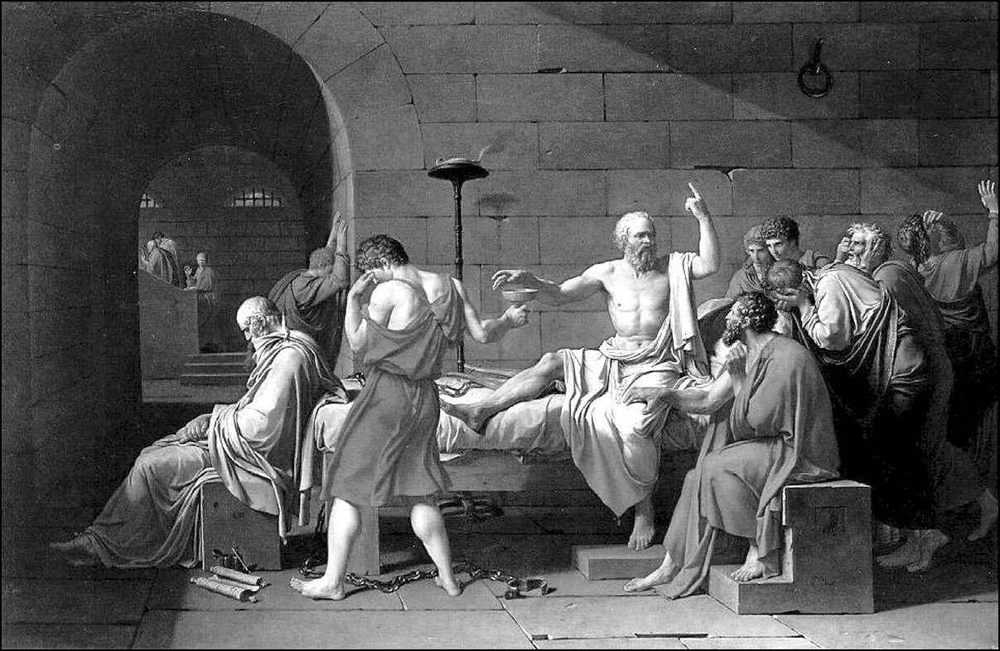
Bu konuşmaları sırasında devlette yanlış gördüğü şeyleri de eleştirmiş, özellikle de yaşadığı dönemde Atina kent devletinin güçlüden yana olan kanunlarını hedef almıştır. Sürdürdüğü sade yaşam ve kölelere yakın durması sonucunda işler çığırından çıkmış, kendisine karşı cephe alınmıştır. Ve sonunda ‘Tanrılarımıza inanmıyor, yanlış inançlarıyla gençlerimizi zehirliyor’ suçlamalarıyla Atina Beş Yüzler Meclisi’nde yargılanması süreci başlamıştır. Duruşmanın başında, yargılama öncesi yemin geleneğine uygun olarak adil davranacaklarına Zeus ve Apollon hakkı için yemin eden meclis üyeleri, savunmasının ardından Sokrates’i ölüme mahkum etmişlerdir.
İğneleyici ve alaycı ifadeler de içeren savunmasıyla ölüme adeta meydan okuyan Sokrates, bu son konuşmasında asilleri, kendisini yargılayanları, devlet düzenini ve yaşamı sorgulamış; tükenmekte olan bir şeyi tutmaya çalışmayı anlamsız bulduğunu belirterek ölüm cezasının infazı için getirilen baldıran zehrini içerek ölüme gitmiştir. Aslında Sokrates ne mevcut iktidara isyan etmiş, ne de halkı bunun için kışkırtmıştır. Yaptığı tek şey, bildiklerini anlatmak ve yanlış gördüğü şeyleri eleştirmek olmuştur. Bu da zamanın yöneticilerinin çıkarlarına uymamış, onları düzenlerinin bozulacağı kaygısına itmiştir. Sokrates, savunduğu fikirlerden vazgeçmek pahasına yaşamayı hakir görmüş, verilen cezayı seve seve kabul etmiştir. Aşağıda yer alan kısım, Sokrates’in bu son konuşmasının bir bölümüdür. Sokrates’in savunması, dünya hukuk tarihinde ilk kapsamlı savunma kabul edilmekte ve çeşitli ülkelerdeki hukuk fakültelerinde ders olarak okutulmaktadır.
* * *
“Atinalılar!
Beni suçlayanların üzerinizdeki etkisini bilemiyorum. Fakat bana yapılan suçlamalar o derece inandırıcıydı ki ben dahi dinlerken az daha kim olduğumu unutuyordum.
Ey Atinalılar, gerçek şudur ki tek gerçek bilge vardır, o da Tanrı’dır. Ve Tanrı, bu bilmecesiyle insanların bilgeliğinin aslında bir hiç olduğunu veya çok az şey ifade ettiğini göstermeyi amaçlıyor. Bu işte benim ismimi, sadece bir misal olarak kullanıyor ve şöyle demek istiyor: ‘Ey insanlar sizin en bilgeniz, Sokrates gibi kendi bilgeliğinin gerçekte bir hiç olduğunu bilendir. ’
Belki içinizden birisi şöyle diyecek: ‘Peki Sokrates, seni ölüm cezasının eşiğine getiren böyle bir hayat yaşamaktan utanç duymuyor musun?’
Ona şöyle cevap veririm: Yanılıyorsunuz, hiçbir şeye değmeyen bir adam bile, hayatını ölüm ve yaşam ihtimallerini hesaplayarak geçirmemelidir. Düşünmesi gereken tek şey, yaptığı işin iyi mi, yoksa kötü mü olduğudur; yani iyi bir adam olarak mı, yoksa kötü bir adam olarak mı yaşadığıdır.
Hiç kimse başa gelebilecek en büyük kötülük sanılan ölümün belki de en büyük iyilik olduğunu bilemez. Bu bilgisizlik, yani kişinin bilmediği şeyi bildiğini zannetmesi, onursuz bir cehalet değil midir? İşte sadece bu bakımdan diğer insanlardan farklı olduğumu düşünüyorum ve belki de bu bakımdan onlardan daha bilgeyim. Çünkü ölümden sonrası hakkında bir şey bilmediğim gibi, bilmediğimin de farkındayım.
Savaşta olduğu gibi hukukta da, ne ben ne de bir başkası ölümden kurtulmak amacıyla gayret göstermelidir. Çarpışma sırasında çoğu zaman görülür; adam, silahlarını bırakır da düşmanının önünde diz çökerse ölümden kurtulacağı kesin gibidir. Ve eğer bir adam, her şeyi söyleyecek ve yapacak kadar güçsüzse her tehlike karşısında ölümden kaçmak için sayısız yol bulabilir. Zor olan, ölümden kurtulmak değil; haksızlıktan, kötülük yapmaktan kaçmaktır. Çünkü o, ölümden daha hızlı koşar. Sizin istediğiniz gibi konuşup yaşamaktansa, kendi istediğim gibi konuşup ölmeyi yeğlerim.
İnsanları öldürerek, yaşadığınız kötü hayatın kınanmasından kurtulacağınızı sanıyorsanız yanılıyorsunuz. Bu, ne mümkün ne de şerefli bir kaçış yoludur. En kolay ve en asil yol, başkalarını susturmak değil; kendinizi mümkün olduğunca iyileştirmektir. Beni ölüme mahkum edenlere söyleyeceğim son söz budur…
Fakat neden sevgili dostum Krito, sıradan çoğunluğun düşüncesine bu kadar önem veriyorsun? Dikkate alınması gereken, gerçekten düşünceli insanlardır; onlar gerçekleri olduğu gibi kabul edecektir…
Hiç kimsenin hiçbir zaman isteyerek haksızlık yapmaması gerektiğine mi inanıyoruz, yoksa bu, duruma göre değişir mi? Genelde kabul ettiğimiz şekilde haksızlık yapmak her zaman kötü ve onur kırıcı mıdır? Yoksa önceden kabul ettiğimiz bütün fikirleri şu birkaç gün içinde fırlatıp attık mı? Yoksa bu yaşımızda sen ve ben, bütün hayatımızı bir çift çocuktan farksız olduğumuzu anlamadan, bütün bu ciddi tartışmaları yaparak mı harcamışız? Yoksa çoğunluğun görüşüne aykırı da olsa, daha iyi veya kötü sonuçlar doğursa da, söylediğimizin doğruluğunda ısrar mı edeceğiz? Yani ‘Haksızlık, onu yapan için her zaman kötü ve onur kırıcıdır’ diyecek miyiz, demeyecek miyiz?
O halde hangi şartlarda olursa olsun hiç kimse haksızlık yapmamalıdır.
Ve gerçek filozoflar bunları dikkate alınca, düşündüklerini şu sözlerle ifade etmeyecekler mi? ‘Biz bedendeyken ve ruh, bedenin kötülükleriyle karışmışken, ‘bizim arzumuz yerine gelmeyecek’ sonucuna vardıran bir düşünce yolu bulmadık mı? Bizim arzumuz, hakikattir. Çünkü bedenimiz, sadece yemek gereksinimi nedeniyle sayısız karışıklığın kaynağıdır, bizi yakalayan ve gerçek peşinde koşmaktan alıkoyan hastalıklara maruz bırakır. Bizi aşklarla, hırslarla, korkularla, her çeşit hayaller ve budalalıklarla oyalayarak düşünce gücümüzü elimizden alır.’
Savaşlar, çarpışmalar, ayrılıklar neden ileri gelir? Beden ve onun hırslarından değil mi? Bütün savaşlar, para sevgisinden çıkar ve para, beden için ve ona köle gibi hizmet için elde edilir. Ve bütün bu engellemeler nedeniyle felsefeye verecek zamanımız kalmaz; sonuncusu ve en kötüsü, vücut bize boş zaman tanısa ve biz de kendimizi düşünmeye versek bile her zaman bunu kırıp içimize girer; sorgulamalarımızda kargaşaya ve kafamızın karışmasına neden olur ve bizi öyle şaşırtır ki gerçeği görmemizi engeller.
Bu, bize şu tecrübeyle ispatlanmıştır ki bir şeyin saf bilgisine sahip olacaksak, vücuttan dışarı çıkmalıyız. Ruh, eşyayı kendi kendine görmeli, ancak ondan sonra istediğimiz ve sevdiğimizi söylediğimiz şeylere ulaşabiliriz. Bilgelik, yaşarken değil; tartışmanın gösterdiği gibi, ancak ölümden sonra elde edilir. Çünkü ruh, bedenle arkadaşlık içindeyken saf bilgiye sahip olamaz. Ve neticede şu iki şeyden birisi takip eder bunu; bilgi ya hiç elde edilemez ya da ölümden sonra elde edilir. Çünkü ruh, ancak ölümden sonra bedenden ayrılır ve kendi başına var olur. Şu anki hayatta bedenle en az ilişkimiz ve birlikteliğimiz olduğu zaman bilgiye en yakın olduğumuzu düşünüyoruz ve Tanrı bizi serbest bırakmayı lütfedene kadar kendimizi saf ve temiz tutmaya çalışıyoruz.
Böylece vücudun aptallıklarından kurtularak saf olmayı ve safla görüşmeyi sürdürmeyi ve bence hakikatten başkası olmayan safî mükemmellikte var olanları kendi başımıza bilmeyi bekleyebiliriz. Çünkü karışık olan, saf olanı elinde bulunduramaz. İşte bunlar, Simias, bilginin gerçek âşıklarının, düşünmeden ve birbirlerine söylemeden edemedikleri sözlerdir.
Ve ölümün yaklaşmasından yakınan bir adam görürsen onun bu isteksizliği, bu kişinin bilgeliğe âşık değil; vücuduna ve muhtemelen aynı zamanda paraya veya her ikisine âşık birisi olduğuna yeter bir delil değil midir?
Ancak belki de bir korku, zevk veya acının başka bir korku, zevk veya acıyla sanki bunlar madenî paraymış gibi değiştirilmesi -yani büyüğü küçükle değişmek- erdem ölçeğine göre doğru bir değişim değildir. Sevgili dostum Simias, bütün bunların değiştirilmesi için sadece bir tek doğru para yok mudur? İşte bu bilgeliktir ve sadece bununla birlikte gerçek cesarete, ölçülülüğe veya adalete ulaşırız. Gerçek erdem korkuların, zevklerin veya benzeri diğer iyilikler ya da kötülüklerin ona katılıp katılmamasının hiçbir önemi olmadığı, kendisine bilgeliğin eşlik ettiği şey değil midir? Fakat bilgelikten ayrılmış ve birbirleriyle karışmış bu tip şeylerden oluşmuş erdem, gerçeklikte yoktur. Gerçek, çok uzaklardadır; adalet ve cesaret, gerçekte bütün bunlardan arınmaktır ve bilgeliğin kendisi, belki bu saflığı sağlayandır.
Fakat şimdi ruhun ölümsüzlüğü açıkça ortaya konulduğuna göre onun için en yüksek erdemi ve bilgeliği elde etmek dışında bir serbest kalış veya kurtuluş yoktur. Çünkü ruhun öteki dünyaya olan yolculuğu sırasında yanında götürebileceği tek şey eğitim ve terbiyedir ve bunlar, oraya olan yolculuğun en başında karşılaşabileceği en büyük faydadır.
Son olarak, hayatlarını daima dindarlık ve iyilik içinde geçirmiş olanlar, bu dünyevî hapishaneden kurtulurlar ve yukarıdaki saf ve temiz evlerine gidip gerçek dünyada ikamet ederler.
Sağduyulu bir adam, ruh ve onun oturacağı yerler hakkında anlattığım şeylerin tamamen doğru olduğunu iddia etmemelidir. Ancak ben şunu söyleyebilirim ki; ruhun ölümsüz olduğu gösterildiğine göre bir insanın bu çeşit bir şeyin doğru olduğunu düşünmesi, yanlış ve değersiz değildir. Bu, alınmaya değer bir risktir ve kişi buna benzer kuvvetli sözlerle kendini teskin etmelidir.
Atinalılar!
Çocuklarım büyüdükleri zaman, erdemden çok zenginliğe ya da başka şeylere düşkünlük gösterecek olurlarsa, ben sizinle nasıl uğraşmış isem siz de onlarla uğraşınız. Onları uyarınız. Önem vermeleri gereken şeye önem vermez, bir hiç oldukları halde kendilerini bir şey sanırlarsa; ben sizi nasıl azarlamışsam, siz de onları öyle azarlayınız. Bunu yaparsanız bana da, oğullarıma da iyilik yapmış olursunuz.
Artık ayrılma vakti geldi. Yolumuza gidelim. Ben ölmeye, siz ise yaşamaya… Hangisi daha iyi? Bunu Tanrı’dan başka kimse bilemez.”
BÜYÜK İSKENDER
“İmparatorluğumuzun sınırları, Tanrı’nın dünyaya koyduğu sınırlardan başka bir şey olmayacak.”
Bir döneme damgasını vurmuş “Asya’nın Efendisi”, “Tanrı Amon’un oğlu”, cömert bir kral, cesur bir komutandı o. Yaklaşık 6 milyon kilometrekarelik bir alana hükmetmiş, 70 kente adını vermiş ve dünyayı saran Helenistik Çağı başlatmıştı. MÖ 356 yılında Makedonya’nın başkenti Pella’da dünyaya geldi. Yunan savaş efsanelerini, Aşil ve Herakles’in kahramanlıklarını dinleyerek büyüdü. 13 yaşındayken savaş eğitimine başladı. Aynı zamanda büyük Yunan filozofu Aristo’dan dersler alıyordu.
İskender 20 yaşında tahta geçtiğinde, fetih hazırlıklarına girişti. İlk iş olarak, MÖ 334 baharında 35 bin Makedonyalı ve 7 bin 600 Yunandan oluşan, eğitimli ve donanımlı ordusuyla Perslere karşı savaşa geçmek üzere bugün Çanakkale Boğazı olarak adlandırdığımız yere geldi. Teknesi, karşı kıyıya yaklaşınca mızrağını karaya doğru fırlattı. Mızrak yere saplandı. İskender, karaya ayak basınca mızrağını yerden çıkararak bütün Asya’nın Makedon mızrağıyla fethedileceğini ilan etti.
Büyük Pers ordusunun başında ise Kral III. Darius vardı. İskender, iki ordu arasındaki çayı geçerek doğrudan Perslerin üstüne yürümek isterken komutanları buna karşı çıkıyordu. Ama İskender: ‘Buraya gelmek için koca bir boğazı geçmişken, önümüzdeki bu sığ çay mı bizi durduracak! Bu çay karşısında gerilersek Hellespont (Çanakkale Boğazı) utancından kızarır’ deyince bütün ordu karşıya geçti. Miletos ve Halikarnassos’u (Bodrum) aldıktan sonra Gordion’a (Yassıhöyük) yöneldi.
Ordu güneydoğuya doğru ilerledi ve İssos’da (Misis) III. Darius ile ikinci defa karşılaştı. Kral Darius, yarım milyonluk ordusuyla Makedon ordusunu bekliyordu. İskender’in ordusu 13’e 1 oranında küçük olduğu halde başarılı bir taktikle Pers ordusunu bozguna uğrattı. Pers Kralı ordusunu bırakarak dağlara kaçmak zorunda kaldı. İskender, burada İskenderun şehrini kurdu ve bir yıl kadar kaldı. Pers ordusunu yenip ‘Asya Fatihi’ olması için Kral III. Darius’u öldürmesi gerekiyordu.
İskender, bir süre sonra güneye, Finike sahillerine geldi, bir ada şehri olan Tir’i kuşattı (MÖ 332). Bu şehrin alınmasından sonra Mısır’a geldi (MÖ 331). 300 yıldır Pers egemenliği altında yaşayan Mısırlılar, Persleri yenen İskender ve ordusunu büyük bir coşkuyla karşıladılar. İskender burada ilk büyük şehri İskenderiye’yi kurdu. Daha sonra Tigris (Dicle) nehrine yöneldi. MÖ 331 yılında üçüncü defa Perslerle karşılaştı. Ordusu 40 bin yaya asker ve 7 bin süvariden oluşuyordu. Pers Kralı III. Darius’un ordusu ise 1 milyon civarındaydı. MÖ 331’in 1 Ekim’inde Gaugamela düzlüklerinde (Kuzey Irak’taki Erbil) kalabalık Pers ordusunu zeki bir saldırı planıyla bozguna uğrattı İskender. Pers Kralı Darius, İssus’ta yaptığı gibi burada da kaçarak kurtuldu.
İskender’in fetih iştahı dinecek gibi değildi. Hindistan üzerine sefere çıktı (MÖ 327). Porus’un yönetimindeki Hint ordusu, İndus Irmağı’nın karşısında, 200 fil ve 25 bin askerle İskender’i bekliyordu. İskender’in daha önce hiç fil görmemiş askerleri korksalar da Porus’un ordusunu bozguna uğratabildiler. Porus ve ordusunun hayatta kalan kısmı, daha sonra İskender’in ordusuna katıldı.
İskender Babil’e dönüş yolunda iken (MÖ 323) öldüğünde 33 yaşındaydı. Ölümünden 40 yıl kadar sonra dağılan imparatorluk topraklarının üzerinde üç krallık hüküm sürdü: Makedonya, Mısır ve Asya krallıkları. Tarihte ilk kez bir kralın isminin önüne ‘büyük’ sıfatı konmuştu İskender için. Hiçbir fatih, Büyük İskender kadar büyük düşler kurmadı. 10 yıldan uzun bir süre, on milyonlarca insana boyun eğdirerek 3 kıtada hüküm sürdü Büyük İskender. Öldüğünde imparatorluğu Balkanlar’dan Himalayalar’a uzanıyordu
İskender hakkında tarihçilerin hükümleri farklıdır: Bazıları İskender’i, Doğu’yla Batı’yı birleştirmeye niyetli, karizmatik, vizyon sahibi bir lider olarak görürken; diğerleri onu dengesiz ve zalim bir megaloman olmakla suçlar; insanlığı birleştirmek değil, ele geçirebildiği kadar çok toprağın üzerinde kontrolünü pekiştirmek amacını taşıyan bir eski zaman Stalini ya da Hitleri olarak değerlendirir. Üçüncü bir grup ise İskender’in, günümüz standartlarına göre vahşi sayılan ama kendi zamanına göre ‘kabul edilebilir’ metotlarla Batı’nın medeniyet nosyonlarını Doğu’ya getirdiğini ifade eder.
Kişiliği hakkındaki yorumlar değişse bile, değişmeyen gerçek; hatipliği ile askerî dehasını desteklemiş olduğudur. İskender’in belki de yazıya geçirilebilmiş tek konuşması olan, Asya seferine çıkmadan önce komutanlarına karşı yaptığı bu konuşma; İmparator’un, içinde beslediği fetih aşkını ve hırsını yansıtıyor. Ve hatta onun, sadece ‘fethetmek için yaratıldığı’ iddialarını da doğruluyor.
* * *
“Beyler, görüyorum ki sizi yeni bir maceraya sürüklediğimde, beni eskiden sahip olduğunuz o ruh hali ile takip etmiyorsunuz. Sizinle bir karara varalım diye toplanmamızı istedim. Benim tavsiyeme uyup ilerleyecek miyiz, yoksa sizinkine kulak verip geri mi döneceğiz? Şu ana kadar gösterdiğiniz çabalarla ilgili ya da komutanınız olarak benim hakkımda şikâyetleriniz varsa, söyleyecek bir şeyim yok.
Ama size hatırlatmak isterim ki cesaretiniz ve kararlılığınızla İyonya’yı, Hellespont’u (Çanakkale Boğazı), Frigya’yı, Kapadokya’yı, Paflagonya’yı, Lidya’yı, Karya’yı, Likya’yı, Pamfilya’yı, Finike’yi ve Mısır’ı, Libya’nın Yunan kısmını ele geçirdiniz. Ve yine Arabistan’ın büyük bir bölümünü, Suriye’yi, Mezopotomya’yı, Babil’i ve Susa’yı; Pers diyarını ve Medya’yı, daha önce onlar tarafından kontrol edilen ya da edilmeyen tüm toprakları ele geçirdiniz. Hazar kapılarının ardındaki toprakların, Kafkasların, Tanais’in, Hyrcanian’ın (Hazar ve Hazar Denizi’nin) efendileri oldunuz; İskitleri çöle sürdük. İnduslar ve Hydaspes (Hindistan’da bir bölge), Acesines ve Hydraotes (Pakistan’da bir bölge), önümüzde artık bizim topraklarımız olarak uzanıyorlar.
Tüm bunları başarmışken gücünüzü, Makedonya’nın gücünü, Hyphasis’e (Hindistan’daki Beas Nehri) ve diğer taraftaki kavimlere kadar genişletmekte neden tereddüt ediyorsunuz? Geride kalmış birkaç yerlinin bize karşı çıkacağından mı korkuyorsunuz? Gelin, gelin!
Bu adamlar ya tek bir fiske vurmadan teslim olurlar ya kaçarken yakalanırlar ya da ülkelerini savunamazlar ve ülkelerini aldığımızda, onu bize kendi iradeleri ile katılanlara ve yanımızda savaşanlara hediye ederiz.
Adam gibi adam olan biri için iş, benim inancıma göre, asil sonuçlara varmak için yapılır; işin kendisinden başka bir hedefi yoktur. Buna rağmen, aranızdan bu seferimizin son durağını bilmek isteyenler çıkabilir. O halde biliniz ki, buradan Ganj’a ve Hint Okyanusu’na kadar uzanan yol, hedefimizin bütüne kıyasla oldukça küçüktür.
Hiç şüphe yok ki, okyanuslar dünyayı çepeçevre sardığı için, bu okyanusun Hyrcanian ile (Hazar Denizi ile) bağlantılı olduğunu göreceksiniz. Daha da ötesi arkadaşlarım, size, Hint ve Basra Körfezleri’nin ve Hyrcanian’ın (Hazar Denizi’nin) birbiriyle bağlantılı olduğunu ispatlayacağım. Gemilerimiz, Basra Körfezi’nden Libya’ya yelken açacak, Libya’dan doğuya doğru uzanan topraklar bizim olacak, tıpkı Asya’nın tamamı gibi. İmparatorluğumuzun sınırları, Tanrı’nın dünyaya koyduğu sınırlardan başka bir şey olmayacak.
Ama şimdi geri dönerseniz, Beas Irmağı ile Hint Okyanusu ve kuzeyde Hyrcanian (Hazar Denizi) ile İskit diyarları arasında, savaşa meyilli birçok insan, boyun eğdirilmemiş olarak kalacak. Şimdi geri çekilirsek, henüz güvenlik altına almadığımız topraklar, henüz bize boyun eğmeyen kavimlerin başlatacağı bir başkaldırının parçası olabilir. Eğer bu gerçekleşirse, bu zamana kadar yaptıklarımız ve çektiğimiz sıkıntılar boşa gitmiş olacak ya da tüm yaptıklarımızı tekrar yapmak zorunda kalacağız!
Makedonya’nın efendileri! Sizler, arkadaşlarım, yoldaşlarım, bu böyle olmamalı. Sıkı durun; zorluk ve tehlikenin, zaferin ve aynı zamanda mezarların ötesinde, kazanacağınız ölümsüzlüğün bedeli olduğunu biliyorsunuz.
Atam Herakles’in, Tiryns ve Argos’tan (Mora Yarımadası’ndaki antik kentler) ve Peleponnese’den (Mora Yarımadası) hatta ya da Tebes’ten (İran’da bir bölge) ötelere gitmese, kendisini insandan adeta yarı tanrıya dönüştüren o zaferleri kazanamayacağının farkında değil misiniz?
Hatta aslında bir Tanrı olan Dionysus bile bizim karşılaştığımız zorluklarla karşılaşmamışken, biz ondan daha fazlasını yaptık: Nysa’nın (Bugünkü Aydın ili sınırları içerisinde bir bölge) ötesine geçtik ve Herakles’in alamadığı Avernus’u (Bugünkü Napoli yakınlarında bir bölge) aldık.
O halde gelin, Asya’nın kalanını da, halen sahip olduğunuz topraklara katalım, fetihlerinize küçük bir ek daha yapalım! Eğer bu yaptıklarımızın yeterli olduğunu düşünüp Makedonya’da refah içinde yaşasak, sadece evlerimizi korusak, Trakyalıların, Tribalyalıların ve hatta rahatımızı kaçıran Yunanların sınırlarımıza yaptığı tecavüzleri engellemenin haricinde bir şeye bulaşmasak, çok görkemli ve asil bir iş mi yapmış olurduk?
Eğer komutanınız olarak sizinle bu yorucu ve tehlikeli seferlere katılmamış olsam, cesaretinizi ilk kaybedenler olduğunuz için sizi suçlayamazdım. Sadece başkalarının bu işin meyvelerini yemesi için bu kadar sıkıntıya katlanmış olsanız, bu yılgınlığınız doğal olabilirdi. Ama böyle olmadı.
Beyler! Siz ve ben, yükü ve tehlikeyi paylaştık. Ve tabii ki ödülleri de. Fethedilmiş topraklar size ait, hazineleri ve gelirleri sizin ellerinize akıyor. Ve tüm Asya’yı aldığımızda, o zaman tutkularımızın zirvesine çıkacağız, sınırsız zenginlik ve güce duyduğunuz açlık tatmin olacak. İşte o zaman kim eve dönmek isterse, dönmekte serbest olacak… Benle ya da bensiz… İşte o zaman ben, benimle kalanların, gidenleri kıskanmasını kendim sağlayacağım.”
ÇİÇERO
“Konuşarak üstesinden gelebileceğim herhangi bir şay varsa, hakkımda varılan iyi kanıya binaen ve bu kabiliyetim şereflendirildiği için bu vazifemi yapacağım.”
Romalı devlet adamı, filozof ve hatip Marcus Tullius Çiçero, tarihin kendisine ‘hatiplerin hatibi’ unvanını verdiği, mahir bir konuşmacıdır. Konuşmaları, karşılıklı sohbeti andırır. Sokrates’in diyaloglarından farklı olarak soru cevap düzeninden ziyade, kendi uzun anlatımları ağır basar. Yine Sokrates’ten farklı olarak siyasetten çekildiği bir dönemde yazılı eserler de kaleme almıştır. Yunan felsefesini Latince’ye kazandıran filozoftur. Aşağıda yer alan konuşmasında da belirttiği üzere yurttaşlarına faydalı olmak, her zaman Çiçero’nun öncelikli hedefi olmuştur. Hitabet yeteneğinin farkında olan ünlü hatip, bu kabiliyeti ile halkına hizmet etmiştir. Gençliğinde kekeme olan ancak ağzına doldurduğu çakıl taşları ile konuşma pratikleri yaparak kekemeliğini yenen hitabet ustasının konuşmaları Roma tarihi araştırmalarına da ışık tutmaktadır.
* * *
“Ey Romalılar!
Sizlerin meclisi, bana göre, bir kimsenin hitap edebileceği en iyi topluluk; bu mekân, davaların yürütüleceği en şerefli ve konuşmalarım için güzide bir yer olmasına rağmen, burada konuşmam engellenmek istenmiştir. Bilirsiniz ki forumun kapıları her faziletli kişiye ardına kadar açıktır. Özgür irademe aykırı olarak, gençlik yıllarımdan beri benimsemiş olduğum bir hayat sisteminden alıkonuldum. Şimdiye kadar buranın yetkin bir yerine izinsiz girmeye kalkışmış da değilim. Ayrıca buraya büyük bir gayretle, çok yoğun çalışarak ve neredeyse tüm zamanımı harcayarak açıklamaya çalıştığım çok önemli meseleler haricindeki davaları getirmenin uygun olmayacağını düşündüm hep. Bundan dolayı forum, sizlerin davalarını savunanlar tarafından hiç boş bırakılmadı. Benim gayretim, dürüstçe ve erdemli bir şekilde çalışmam, birtakım özerk ve tehlikeli şahıslara karşı sizi savunmam, sizler tarafından da takdir edilmekle en şerefli mükâfatını aldı. Komitenin görev süresi bittiğinde tüm birlikler tarafından üç kez üst üste pretor1 seçildim.
Romalılar!
Benim hakkımdaki kanaatinizi hemen sezdim, diğerlerine göstermiş olduğunuz tavırlarla ne istediğinizi de anladım. Şimdi bende bu yetki bulunurken -ki bu, sizin bana bağışladığınız bir onurdur, bunun böyle olmasını sizler istediniz- hizmetim, hemen hemen her gün forumdaki davalarda konuşmamı gerektirir. Tüm olaylarda, kendini mutat bir şekilde forumda bulmaya alışmış ve her an için göreve hazır ve ihtiyatlı biri olarak, eğer yetkim de varsa, bu vazifeyi bana verenlerin önünde icra etmem icap eder.
Evet, bu işi bana verenlerin huzurunda görevimi yerine getireceğim. Konuşarak üstesinden gelebileceğim herhangi bir şey varsa, hakkımda varılan iyi kanıya binaen ve bu kabiliyetim şereflendirildiği için bu vazifemi yapacağım. Her şeyden öte bu anlaşmaya sevinmem gerektiğini anlıyorum, zira şu an hiç alışık olmadığım bir yerde konuşuyorum. Etkili sözlerin tesirinde kalmayan kimsenin olmayacağı bir davayı savunacağım. Çünkü Cnaeus’un o eşsiz ve yüce fazileti hakkında konuşuyor olacağım. Böyle bir konuda konuşmamı nasıl bitireceğime karar vermek, benim için konuşmaya başlamaktan daha zor. Bundan anlıyorum ki davalarımın çeşitliliği ve bolluğundan ziyade onları itidal ile ele almam daha yerindedir.”
Marcus ANTONİUS
“Sezar’ı bıçaklayan şerefli insanlara!”
Marcus Antonius’un, Sezar’ın ölümünden sonra Brutus’un iznini de alarak yaptığı konuşma, siyaset dünyasının ne türlü entrikalarla yoğrulabileceğinin en güzel örneklerinden biridir. Antonius’un konuşmasını Shakespeare’in 1559 yılında, ustalık döneminin başlarında yazdığı “Julius Caesar” oyunundan da biliriz. Shakespeare, “Julius Caesar” metni içinde gösterdiği gerçekçiliğini en fasih biçimde Antonius’un bu konuşmasıyla ortaya koymaktadır.
Konuşma siyasal düzenin ikiyüzlülüğünü göstermesi bakımından önemlidir. Sezar’ın öcünü almak isteyen Antonius, kendisine verilen konuşma fırsatını çok iyi değerlendirmiş ve halkı Brutus’a karşı kışkırtmıştır. Brutus aslında bir insan ve devlet adamı olarak Sezar’ı sever. Fakat Sezar’ın eline daha çok güç geçerse bunu suîistimal edeceğine inandırılmıştır. Diğer bir deyişle kendini bir ihtimal; yani gerçek olmayan bir mantık düzlemine sokar. Gerçeklerden uzaklaştığı için siyasette başarıya ulaşamaz. Gerçekte kendileri için büyük tehlike arz eden Antonius’un öldürülmesinin önüne geçer, Sezar’ın öldürülmesiyle her şeyin çözüleceğine inanmıştır çünkü.
Brutus soyut bir iyilik zihniyetiyle Sezar’ı öldürmüş, halka bunu anlattığında da halkı kendisinin haklı olduğuna inandırmıştır. Brutus’tan sonra kürsüde yerini alan Antonius ise gerçekleri kendi çıkarına kullanmayı başarır. Halkı, Sezar’ın ölüsünün önünde öç almaya zorlar. Brutus bu başkaldırıya cevap veremez. İnsanlar konuşmanın sonunda katillerden hesap sormaktadır. Ülke, bir iç savaşa doğru hızla sürüklenir; düzen alt üst olur. Antonius bu karmaşada sağ kalmış, Brutus ise gerçeklikten ayrılmakla yaptığı yanlışı geç de olsa anlamıştır.
Antonius:
Canım Romalılar,
Dostlar, Romalılar, yurttaşlar, dinleyin,
Ben Sezar’ı gömmeye geldim, övmeye değil.
İnsanın ettiği kötülük yaşar ardından,
İyilikleriyse toprağa gider kemikleriyle.
Bırakın öyle olsun Sezar için de.
Soylu Brutus, ‘muhteris’ dedi Sezar için,
Öyleyse ağır bir suç bu.
Ve Sezar bütün ağırlığıyla ödedi suçunu,
Burada Brutus ve ötekilerin izniyle.
Çünkü Brutus şerefli bir insandır,
Ötekiler de öyle hep şerefli insanlardır.
Konuşmaya geldim Sezar’ın cenazesinde.
Dostumdu, vefalı ve dürüsttü bana karşı,
Ama Brutus, ‘muhteristi’ diyor.
Brutus şerefli bir insandır.
Sezar nice esirler getirdi Roma’ya,
Fidyeleriyle devlet hazineleri doldu,
Bundan ötürü mü muhteris göründü Sezar?
Fakirler ağlayınca gözleri yaşarırdı,
Bir muhteris daha katı yürekli olsa gerek.
Ama Brutus, ‘muhteristi’ diyor,
Brutus ise şerefli bir insandır.
Geçen bayram hepiniz gördünüz,
Krallık tacını üç kez sundum ona.
Üçünde de almadı. İhtiras denir mi buna?
Ama Brutus, ‘muhteristi’ diyor.
Brutus şerefli bir insandır şüphesiz.
Ben Brutus’a karşı konuşmuyorum, hayır.
Bildiğim kadarını söylüyorum yalnız.
Hep sevdiniz onu bir zamanlar,
Boşuna da değildi elbet sevginiz,
Sonra ne oldu da yanmıyorsunuz ölümüne?
Ey düşünce, yırtıcı hayvanlar arasına kaçmışsın,
İnsanlar yitirmiş akıllarını...
Bağışlayın beni,
Yüreğim şurada şimdi, Sezar’ın tabutunda.
Konuşamam dönünceye kadar bana.
........
Daha dün Sezar’ın bir sözü,
Dünyadan daha ağır basardı.
Şimdiyse serilmiş yatıyor şurada,
Bir dilenci bile eğilmez olmuş önünde.
Ah kardeşler! Ben yüreklerinizi, kafalarınızı
Azdıracak, ayaklandıracak bir insan olsaydım,
Brutus’a da Kasius’a da kötülük edebilirdim.
Ama bilirsiniz, şerefli insanlardır onlar.
Onlara kötülük etmek istemem.
Bir ölüye, kendime ve sizlere zararlı olmam daha doğru
O şerefli insanlara kötülük etmekten.
Ama bir yazı var, Sezar’ın mührü basılmış,
Çekmecesinde buldum, vasiyetnamesi Sezar’ın,
Bunları halka okusam, ki hoş görün,
Hiç okumak niyetinde değilim,
Bir okusam bunları, halk doğru gider,
Yaralarını öperdi ölmüş Sezar’ın.
Mendillerini boyardı kutsal kanına.
Ne kanı, tek kılını dilenirdi saçlarının.
Anmak için Sezar’ı ve ölürken de,
Değerli bir miras diye bırakmak için
Çocuklarına.
Halk:
Vasiyetname! Vasiyetname! Okunsun Sezar’ın vasiyetnamesi!
Antonius:
Sabırlı olun dostlarım, okumam doğru olmaz.
Sırası mı şimdi bilmenizin,
Sizi ne kadar sevdiğini Sezar’ın?
Odun değil, taş değil, birer insansınız.
İnsan olarak dinleyince de Sezar’ın dileklerini
Tutuşur yürekleriniz, deliye dönersiniz.
Bilmemeniz daha iyi,
Her şeyini sizlere bıraktığını.
Bilirseniz neler, neler olur kim bilir!
Halk:
Oku, dinlemek istiyoruz! Oku Antonius!
Oku Sezar’ın vasiyetnamesini!
Antonius:
Sabırlı olun, bekleyin biraz ne olur!
Fazla ileri gittim, korkarım,
Size bu vasiyetnameden söz etmekten
Bir zararım olmasından korkuyorum doğrusu,
Sezar’ı bıçaklayan şerefli insanlara.
Korkuyorum gerçekten.
Halk:
Alçak katil herifler! Okunsun!
Sezar’ın vasiyeti okunsun!
Antonius:
Anlaşıldı, zorla okutturacaksınız bana.
Öyleyse bir halka olun Sezar’ın çevresinde,
Göstereyim size bu dilekleri yazanı.
İnebilir miyim? İzin veriyor musunuz bana?
Halk:
Haydi in, izin veriyoruz dilediğin yerde konuşmana,
Halka olun, çevrilin şöyle!
Tabuttan uzaklaşın, açılın biraz!
Antonius’a yer verin, yüce Antonius!
Açılın, yer verin, çekilin geriye!
Antonius:
Yaş varsa gözlerinizde, hazır olun dökmeye,
Bu şalı hep bilirsiniz, ben hiç unutmam,
Onu Sezar’ın üstünde ilk gördüğüm günü.
Bir yaz akşamı çadırındaydık,
Nervius’un ordularını yendiği gün.
Bakın şurasından girmiş hançeri Kasius’un.
Şurasını ne hırsla yarmış Casca.
Şurasından o çok sevdiği Brutus bıçaklamış!
Geri çekerken de lanetlik hançerini,
Bakın nasıl gelmiş ardından Sezar’ın kanı?
Kapılara fırlayıp anlamak ister gibi,
Gerçekten Brutus mu, değil mi diye
Böylesine hoyratça vuran.
Çünkü biliyorsunuz, Brutus,
Koruyucu meleğiydi Sezar’ın.
….
Aldığı yaraların en acısı bu oldu.
Vurduğunu görünce Brutus’un,
Nankörlük, hıyanetin kollarından beter,
Yıktı bitirdi onu, yarıldı aslan yüreği,
Kapayıp yüzünü koca Sezar,
Düştü Pompeius heykelinin dibine,
Kanlarının oluk oluk aktığı yere.
Ah, o ne düşüştü o, yurttaşlar,
Ben, sen, hepimiz düştük onunla,
Ve en kanlı hıyanet geçti başımıza.
Elbet ağlarsınız böyle, duyuyorum içimde
Yüreklerinizin nasıl yandığını.
Rahmet damlaları bu döktüğünüz yaşlar.
Duygulu yürekler, sizleri ağlatan.
Bir de şuraya bakın! Bakın, işte kendisi!
Delik deşik olmuş ihanet hançerleriyle
Halk:
Ne uğursuz günmüş bugün,
Kalleşler, alçaklar!
Kan dökmenin böylesi görülmemiş,
Kanına kan alacağız!
Kanına kan! Yürüyelim! Bulalım hepsini!
Yakalım! Verin ateşi! Öldürün! Gebertin!
Bir tekini sağ bırakmayalım hainlerin!
Antonius:
Durun yurttaşlarım!
Dostlar! Canım kardeşlerim!
Sizi böyle birden isyana sürüklemiş duruma sokmayın beni.
Bu işi yapanlar şerefli insanlardır,
Yazık, bilmem neye kızıp da yaptılar bunu.
Akıllı, şerefli insanlar hepsi,
Elbet haklı sebepler gösterirler size.
Ben yüreklerinizi çalmaya gelmedim dostlar,
Ben bir söz ustası değilim Brutus gibi,
Hep bilirsiniz, ben dostunu seven, kaba saba bir adamım,
Bunu bildikleri için izin verdiler halkın önünde konuşmama.
Ne zekâm elverir, ne sözlerim, ne değerim,
Etkim, inandırma gücüm yeter,
Halkın kanını azdırıp tutuşturmaya.
Ben içimden geleni söylüyorum düpedüz,
Sizin de bildiğiniz şeyler söylediklerim.
Canım Sezar’ın yaralarını gösteriyorum.
Şu zavallı, güçsüz, dilsiz ağızları
Konuşturuyorum kendi yerime.
Ama ben Brutus olsaydım,
Ya da Brutus, Antonius’un yerinde olaydı,
Öyle bir Antonius olurdu ki,
Akıllarınızı başlarınızdan alır,
Sezar’ın her bir yarasını bir dile çevirip
Roma’nın taşlarını yerinden oynatır,
Ayaklandırırdı sizi.
Halk:
Ayaklanacağız!
Brutus’un evini yakalım!
Antonius:
Ama dinleyin yurttaşlar, beni dinleyin önce.
Dostlar, ne yapacağınızı bilmeden gidiyorsunuz,
Sevgilerinize nesiyle hak kazandı Sezar?
Ah bilmiyorsunuz bunu, şunu söylemeliyim size,
‘Vasiyet yazısı var’ dedim, unuttunuz.
Halk:
Öyle ya evet! Vasiyet! Durun dinleyelim!
Antonius:
İşte vasiyeti, Sezar’ın mührüyle hem de.
Her Roma yurttaşına, her birine ayrı ayrı,
Yetmiş beşer drahmi bırakıyor.
Ayrıca Tiber kıyısındaki gezi yerleri,
Kendi bağları, bahçeleri, yeni fidanlıkları,
Hep size kalıyor, size bırakıyor hepsini,
Size ve mirasçılarınıza, dünya durdukça.
Hep birlikte gezip dolaşasınız,
Gidip dinlenesiniz diye oralarda.
İşte buydu Sezar, bir daha gelir mi böylesi?
Halk:
Gelmez, dünyada gelmez! Haydi davranın, yürüyün!
Kutsal yerde yakalım Sezar’ın ölüsünü.
Onu yakan ateşlerle de
Tutuşturalım hainlerin evlerini.
Antonius:
Şimdi bırak, yürüsün!
Bir kez ayaklandın ya ey hınç,
Dilediğin yere git artık!
Kuss bin SAİDE
“Allah’ın gelecek bir peygamberi vardır ki gelmesi pek yakındır.”
Kuss bin Saide, İslamiyet’ten önce Arabistan’ın Necran bölgesinde yaşamış, İyad kabilesine mensup ünlü bir şair ve hatiptir. Fesahat ve belagati ile nam salmış olan Kuss, Cahiliye dönemi olarak da adlandırılan İslamiyet öncesinde, putlara tapmayan nadir insanlardan biriydi. Hz. İbrahim’in Hanif dinine mensuptu. Kabe’de yüzlerce puta ‘tanrılar’ olarak tapıldığı bir devirde putlara itibar etmediği, insanlara da putlara tapmamaları konusunda nasihatlerde bulunduğu bilinmektedir. Meşhur Ukaz panayırlarında burada toplanan halka fikir ve düşüncelerini aktarmış, insanları Allah’ın varlığına ve birliğine inanmaya çağırmıştır. Kısa ve öz konuşmasıyla ve etkileyici ifadeleriyle hayranlık uyandıran Kuss’tan sonra gelenlerin konuşmalarının belagattaki ölçüsü onunkiyle karşılaştırılmak suretiyle tespit edilmiştir.
Burada yer alan konuşması, yine bir Ukaz panayırında, Hz. Muhammed’in nübüvvetinin yaklaştığı bir dönemde, yüz yaşını aşmışken yaptığı bir konuşmadır. İnsanların bir araya geldiği bir pazar yerinde, çevresine toplanmış insanlara önce ölüm hakikatini hatırlatmış, etrafta gördükleri ilahî sanatlara dikkatle bakmalarını istemiş ve son peygamberin geleceğini müjdelemiştir. Bir şiirinde Hz. Muhammed’den şu şekilde bahseder:
Bize, gönderilenlerin en hayırlısı,
Peygamberlerin en üstünü olarak Ahmed’i gönderdi.
Kafileler onu ziyaret için yollara düştükçe,
Ve bu teşvik edildikçe,
Allah ona salat eylesin.
Kuss bin Saide konuşmasını yaptığı sırada Hz. Muhammed de onu dinleyenler arasındaydı. Fakat Kuss bunun farkında değildi. Hz. Muhammed’e peygamberlik gelip, vahiy nazil olduğunda ise Kuss bin Saide vefat etmiş bulunuyordu.
Kuss’un vefatından yıllar sonra, kabilesi Medine’ye giderek Müslüman oldu. Hz. Muhammed, kendilerine Kuss bin Saide’yi tanıyıp tanımadıklarını sordu. İçlerinden Carud: ‘Hepimiz onu biliriz ve bizler onun izinden gidenleriz’ şeklinde cevap verdi ve bu meşhur hutbenin bir kısmını okudu. O gün konuşmayı dinleyenler arasında bulunan Hz. Ebubekir ise konuşmanın bütün sözlerinin hatırında olduğunu söyleyerek Kuss Bin Saide’nin konuşmasını tekrarladı. Hz. Muhammed, Kuss için şunları söylemiştir:
‘Ümit ederim ki Allah, kıyamet gününde Kuss bin Saide’yi ayrı bir ümmet olarak haşreder.’ Böylece Kuss, konuşmasında verdiği müjde ile İslam tarihinin ibretli sayfalarında yerini almıştır.
* * *
“Ey insanlar!
Geliniz, dinleyiniz, belleyiniz! İbret alınız! Buna ihtiyacınız var. Yaşayan ölür, ölen fena bulur. Olacak neyse olur. Yağmur yağar, otlar biter. Çocuklar doğar, annelerinin ve babalarının yerini alır. Derken hepsi ölüp gider. Hadiselerin ardı arkası kesilmez, hepsi birbirini kovalar. Kulak veriniz, dikkat kesiliniz, gökte haber, yerde ibret alınacak şeyler var. Yeryüzü bir büyük divan, gökyüzü yüksek bir tavan. Yıldızlar yürür, denizler durur. Gelen kalmaz, giden gelmez. Acaba vardıkları yerden hoşnut olup da mı kalıyorlar? Yoksa orada kalıp da uykuya mı dalıyorlar?
Yemin ediyorum! Allah’ın indinde bir din vardır ki, şimdi içinde bulunduğumuz dinden daha sevgilidir. Ve Allah’ın gelecek bir peygamberi vardır ki gelmesi pek yakındır. Gölgesi, başınızın üstüne geldi, üzerinize düşmeye başladı. Ne mutlu o kimseye ki ona iman eder...
Ey İyad halkı!
Hani ya babalar, dedeler, atalar? Nerede soy, sop? Hani hastalar ve ziyaretçileri? Hani o süslü saraylar ve mermer binalar yükselten Ad ve Semud kavimleri? Hani ya, dünya varlığından gururlanıp da kavmine ‘Ben sizin en büyük Rabbiniz değil miyim?’ diyen Firavun Nemrut? Onlar zenginlikçe, kuvvet ve kudretçe sizden daha üstündüler. Ne oldular? Bu yer onları değirmeninde öğüttü, toz etti, dağıttı. Kemikleri bile çürüyüp dağıldı. Evleri yıkılıp ıssız kaldı… Sakın onlar gibi gaflete düşmeyin, onların yolundan gitmeyin. Her şey fanidir, baki olan ancak Allah’tır. Ki O birdir, şeriki ve naziri yoktur! İbadet edilecek ancak O’dur. Doğmamış ve doğurmamıştır. Evvel gelip geçenlerde bize ibret alacak şey çoktur. Ölüm bir ırmaktır. Girecek yerleri çok ama çıkacak yeri yoktur. Büyük küçük hep göçüp gidiyor. Vadesi dolan bir saniye beklemiyor. Giden geri gelmiyor. Kat’î bildim ki herkese olan size ve bana da olacaktır. Bunlar şüphesiz benim de sizin de akıbetiniz. İyi düşünün, nereden gelip, nereye gidiyoruz? Niçin varız ve ne olacağız?”
Tarık Bin ZİYAD
“Arkanızda deniz, önünüzde düşmanlar ve kaçacak hiçbir yeriniz yok!”
Tarık Bin Ziyad Afrika’dan İspanya’ya geçip ‘Şimdi gemileri yakın!’ emrini verdiğinde, emrindeki on iki bin kişilik (bazı kaynaklara göre ise yedi bin) İslam ordusunu çok zorlu bir savaş bekliyordu. Tarık Bin Ziyad’ın ‘kahramanlar içerisinden seçildiklerine’ inandığı çoğu piyade olan askerleri, Kral Rodrik’in yüz bin kişilik ordusuna karşı savaşmak durumundaydı.
Sekiz gün süren şiddetli çarpışmalardan galip çıkan taraf, İspanyolların, ‘Ülkemize gökten mi indiklerini, yoksa yerden mi çıktıklarını bilemediğimiz insanlar geldi’ dediği Müslümanlar olmuştu. Savaş sonunda Kral Rodrik’in ordusu dağılmış, kendisi de ölmüştü. Böylece İspanya’da hüküm sürmekte ve oradaki halka zulmetmekte olan Vizigotların üç yüz elli yıllık hakimiyeti de sona ermiş ve Batı Avrupa’da yaklaşık sekiz yüz yıl sürecek Endülüs İslam medeniyeti başlamıştı. Bu büyük dönüşüme kapı açan savaş öncesinde Tarık Bin Ziyad’ın askerlerine hitaben yaptığı destansı konuşma ise, aradan geçen asırlara rağmen, tarihin koridorlarında halen yankılanıyor...
* * *
“Askerlerim!
Görüyorsunuz ki, arkanızda deniz, önünüzde düşmanlar ve kaçacak hiçbir yeriniz yok. Vallahi, sabır ve sebattan başka yapacağınız bir şey de yok. Düşmanımızın bütün gücüyle üzerimize geldiği apaçık ortada. Üstelik yiyeceği ve teçhizatı da bol. Halbuki bizim kılıçtan başka silahımız ve düşmanın elinden alacağımız yiyecekten başka erzakımız yok.
Şu durumumuz, hiçbir şey yapmadan birkaç gün devam etse kuvvetten kesiliriz. Bizden korkan düşman da halimizi görüp bize karşı cesaretlenir. Bu kötü akıbete düşmekten kendinizi koruyarak düşmana karşı görevinizi gereğince yapınız. Müstahkem şehirler ve güçlü düşman karşınızdadır. Ölümden korkmazsanız bu fırsatı değerlendirmek ve zafere ulaşmak mümkündür. Şunu kesinlikle biliniz ki, bu savaşta ben de sizden daha fazla emniyette değilim. Yine biliniz ki, eğer şu zorluklara biraz sabrederseniz daha müreffeh bir hayata kavuşursunuz. En ucuz malın can olduğu bu pazara sadece sizi sürmüyor, bilakis önce kendi canımdan başlıyorum. Canınızı düşünerek benden yüz çevirmeyiniz. Siz de benden daha fazla bir zorluğa katlanmayacaksınız. Sizin payınıza da bana düşenden fazlası düşmeyecek. Hepimiz aynı kaderi paylaşıyoruz.
Müminlerin emiri, kahramanları içinden sizi seçti, çünkü sizin savaştan korkmadığınıza ve süvarilerle çekinmeden vuruşacağınıza güveni sonsuzdur. Böylelikle İslam dinini bu ülkeye yerleştireceğinize inanıyor.
Elde edeceğiniz ganimetin tamamı sizindir. Allah yardımcınız olsun. İki cihanda da sizin bahadırlığınız anılacaktır. Biliniz ki, sizi davet ettiğim şeye ilk icabet eden ben olacağım!”
ALPARSLAN
“Bu beyaz elbise kefenim olsun!”
Alparslan, Anadolu’nun kapılarını Türklere açan ünlü Selçuklu hükümdarı… Kazandığı sayısız zaferin içinde Malazgirt Zaferi, şüphesiz en önemli olanı. Alparslan’ın Mısır seferine çıkmasını fırsat bilen Bizans İmparatoru Diyojen, Türkleri Anadolu’dan atmaya karar verip yol boyunca da katliamlar yaparak Malazgirt’e kadar gelir. Alparslan ise Mısır seferinden vazgeçip Malazgirt’te savaştığı Bizans ordusuna karşı büyük bir zafer kazanır. Kaynaklara göre Alparslan savaştan önce biri Hoy şehrinde ordu ileri gelenlerine, diğeri de Malazgirt önünde savaşa başlamadan az bir vakit önce bütün ordusuna olmak üzere iki nutuk vermiştir.
Alparslan her iki nutukta da kumandanlarını savaşa katılıp katılmama konusunda serbest bırakmıştır. Tüm ordusuna verdiği ikinci nutukta dikkati çeken en önemli özellik, Alparslan’ın yapacağı savaşa vermek istediği anlamdır. Ona göre bu savaş yalnız askerî, siyasî veya millî bir savaş değildir; aynı zamanda dinî bir savaştır. Nitekim Sünnî İslam dünyasının başı olan Bağdat Abbasî halifesi, Alparslan’a gönderdiği mektupta ona cesaret vermekte; Cuma günü başlayacak olan savaşta tüm camilerde, hutbelerde Alparslan ve ordusunun zaferi için dua edilmesini istemektedir.
Alparslan’ın da savaş meydanında verdiği nutku, bu küllî duaya dayandırdığı görülüyor. Alparslan’ın konuşmasını, halifenin hutbelerde okunmasını emrettiği duayla bir bütün olarak ele almak gerekir. Alparslan, tarihte hemen hemen bir kural haline gelmiş, ‘Büyük kitleleri idare etmesini bilen büyük adamlar, kesin sonuç almak istedikleri zaman emirlerindekilerin ruh hallerine uygun nutuklar irad ederler’ düşüncesiyle hareket etmiş ve bir zafer kazanmıştır. Alparslan’ın konuşmasında, düşmanın sayıca kat kat üstün olması maddî unsuruna karşı, o anda zaferleri için dua eden Müslümanların manevî desteğini belirtmesinin altını çizmek gerekir. Arkalarında bütün İslam dünyasının bulunduğunu bilen Türk ordusunun nasıl bir ruh haliyle mücadeleye atıldığı ancak bununla anlaşılabilir. Alparslan’ın, ordusundaki askerleri savaşa katılıp katılmama konusunda serbest bırakması ise onların şevkini daha da arttırmıştır. Ayrıca orduda o andan itibaren bir emir-komuta zincirinin olmadığını söylemesi, ordunun her bir ferdini kendi seviyesinde görmesi de askerine verdiği değeri gösterir. Alparslan’ın yaptığı bu konuşma, onun, emrindekilere hitap etmesini bilen iyi bir baş kumandan olduğunu açıkça ortaya koymaktadır.
Önce, Bağdat’ta bulunan Abbasî halifesinin, Alparslan’ın Malazgirt Savaşı’nda düşmana galip gelmesi için Cuma günleri hutbelerde okunmasını emrettiği dua metnini sunalım:
“Allah’ım, İslam sancağını yükselt ve ona yardım et! Sana itaatte canlarını feda edip, sana tabi olmak hususunda kanlarını akıtan, senin yolunun mücahitlerini kuvvetlendirerek; yurtlarını güvenlik ve zaferle dolduran yardımlarından mahrum etme. Müminlerin emirinin burhanı olan Sultan Alparslan’ın senden dilediği yardımı esirgeme ki o bu sayede hükmünü yürütsün, şanını yaysın ve zamanın güçlükleri karşısında kolayca yerinde tutunabilsin.
Senin dinini şerefli ve yüce tutabilmesi için onu lütufkâr et ve desteğinden mahrum etme. Ordusunu meleklerinle destekle. Niyet ve azmini, hayır ve başarıyla sonuçlandır. Çünkü o senin ulu rızan için rahatını terk etti. Malı ve canıyla senin emirlerine uymak amacıyla senin yoluna düştü.
Allah’ım, o nasıl senin çağrına itaat edip, hükmünün korunmasında gevşeklik göstermeden emrine uymuş ve düşmanlarına bizzat karşı koyarak, dinine hizmet için geceyi gündüze katmışsa; sen de ona zafer kısmet eyle, dileklerinde ona yardımcı ol, kaza ve kaderini onun için iyi tecelli ettir. Onu öyle bir koruyucu ile kuşat ki, düşmanların her türlü kinlerini defetsin ve lütfun ile bu koruyucu en sağlam ellerle muhafaza etsin. Yapmak istediği her işi ona kolay kıl.
Ey Müslümanlar! Doğru bir niyet, dürüst bir azim ve Allah’tan korkan temiz kalplerle ve ihlas bahçesinden kısmet alan inançlarla onun için Allah’a yalvarıp yakarınız. Çünkü yüce Allah kitabında şöyle buyuruyor: ‘Ey Muhammed, onlara dualarınız olmasa Rabbim size niçin değer versin, de.’ Onun güçlü kuvvetli olarak sancağını yükseltip zaferlerin en son derecesine erişmesi ve gayesine nail olması hususunda Allah’a dua ve niyazda bulununuz.
Allah’ım, onun bütün güçlüklerini kolaylaştır!”
Selçuklu hükümdarı Alparslan, Malazgirt’te savaş meydanında Cuma namazı sırasında yaptırdığı bir geçit resminden sonra, ordusuna ezcümle aşağıdaki konuşmayı yapmıştır:
“Ya Rabbi! Seni kendime vekil yapıyor, azametin karşısında yüzümü yere sürüyor ve senin uğrunda savaşıyorum.
Ya Rabbi! Niyetim halistir, bana yardım et, sözlerimde hilaf varsa beni kahret.
Ey Askerlerim! Eğer şehit olursam bu beyaz elbise kefenim olsun. O zaman ruhum göklere çıkacaktır. Benden sonra Melikşah’ı tahta çıkarınız ve ona bağlı kalınız. Zaferi kazanırsak istikbal bizimdir.
Biz ne kadar az olursak olalım, onlar ne kadar çok olurlarsa olsunlar, bütün Müslümanların minberlerde bizim için dua ettikleri şu saatte kendimi düşman üzerine atmak istiyorum. Ya muzaffer olur, gayeme ulaşırım; ya şehit olarak cennete giderim.
Sizlerden beni takip etmeyi tercih edenler takip etsin. Ayrılmayı tercih edenler gitsinler. Burada emreden sultan ve emredilen asker yoktur. Zira bugün ancak ben de sizlerden biriyim, sizlerle birlikte savaşan gaziyim.
Beni takip edenler ve nefislerini ulu Tanrı’ya adayanlardan şehit olanlar cennete, sağ kalanlar ise ganimete kavuşacaklardır.”
26 Ağustos 1071
Papa II. URBAN
“O toprakları uğursuzların ellerinden sökerek alın!”
1088 yılında Papa III. Victor’un ölümünün ardından yeni papa seçilen II. Urban’ı zor bir görev bekliyordu. Avrupa o sıralar feodal derebeyleri, kanun tanımaz asiler ve Norman korsanlarının (11. yüzyılda İngiltere’yi fetheden kuzey Fransa halkı) sebep olduğu karmaşa ile kendi içinde oldukça dağınık bir haldeydi. Papa II. Urban, kendi zihninde potansiyel bir güç olarak tahayyül ettiği Avrupa halklarını, “kaybedilmiş kutsal toprakları yeniden kazanmak” gibi bir amaç etrafında birleştirerek bu sıkıntılı durumdan çıkarmanın yollarını arıyordu.
İşte bunun için 1095 yılında bir Kasım günü Fransa’nın Clermont şehrinde tarihçi Will Durant’ın ifadesiyle ‘Ortaçağ’ın en etkileyici nutku’ olarak nitelenen tarihî konuşmasını yaptı Papa II. Urban. Konuşmasında, çağrısına uyarak Clermont’a gelmiş, açık bir alana çadırlarını kurmuş bekleyen binlerce insana ve din adamlarına, doğudaki din kardeşlerini ‘kâfirlerin’ zulmünden kurtaracak bir savaşa katılmalarının çok şerefli olacağını, ayrıca savaşa katılanların tüm günahlarının affedileceğini söylüyordu. Onlar seferdeyken, ailelerinin ve mallarının koruma altına alınacağına söz veriyordu. Ve eğer bu yolda ölecek olurlarsa cennet, günahları affedilmiş bu kahramanların ruhlarını bekliyor olacaktı. Konuşmasını Latince ‘Dieu li volt’, yani ‘Tanrı bunu istiyor’ haykırışlarıyla süsleyen II. Urban, büyük bir heyecana ve şevke gelmiş kalabalıktan, daha güçlü bir şekilde yine ‘Dieu li volt’ yankısını duyuyordu.
II. Urban, sonlarına doğru kulvar değiştirip dünyevîleşen konuşmasında asıl niyetini de açıkça ortaya koyuyordu. Doğu, zengin ve bereketli bir diyardı. Avrupa kıtasında sıkışıp kalmış ve birbirini yemekle meşgul insanlara yeni bir hedef göstermek gerekiyordu.
II. Urban insanların dinî duygularını harekete geçirerek ateşlediği, iki yüzyıl sürecek olan Haçlı Seferleri’nin, Ortaçağ’ın karanlık bir çağ olarak anılmasına sebep olacağını ve Hıristiyanlık ile İslam dünyası arasında yüzyıllar süren ve hatta sürmekte olan bir gerginliğe yol açacağını bilseydi, bu fikrinden vazgeçer miydi bilinmez. Ancak olaylar onun düşündüğü gibi gelişmedi, her çeşit insandan oluşan ve daha çok eşkıya çetelerine benzeyen yirmi bin kişilik ilk Haçlı dalgası, büyük bir bozguna uğradı. Soylulardan oluşan, daha iyi silahlara sahip, nispeten düzenli başka bir ordu ise Kudüs’te yerleşmiş bulunan yetmiş bin Müslüman’ı katlederek, Yahudileri ise sinagoglarında diri diri yakmak suretiyle 1099’da şehri aldı.
Papa II. Urban’ın ömrü, Kudüs’ün alınışını görmeye yetmedi. Uzun yıllar süren savaşların sonuçlarını da. Ancak 1095 Kasım’ında yaptığı konuşmanın benzerlerini 1096 Eylül’üne kadar Avrupa’nın değişik yerlerinde tekrarladı. Çok hırslı bir kişiliği olan II. Urban, her gittiği yerde savaş davetini yineledi. Bu etkili konuşmalar sebebiyle, sefer için belirlenen 1096 yılının Ağustos ayını dahi beklemeye fırsat kalmadan harekete geçildi.
Genel anlamda Haçlı Seferleri’nin sonucunda Doğu ile Batı arasında ahlakî, ilmî, sosyal ve askerî farklılıklar su yüzüne çıktı. Ayrıca geliştirilen önyargılarla bugün dahi ‘Medeniyetler Çatışması’ dendiğinde ilk akla gelen olgu, Haçlı Seferleridir. Papa II. Urban’ın etkileyici hitabıyla başlayan bu savaşların günümüzde bile tartışılıyor ve konuşuluyor olması, bu konuşmanın tüm dünya tarihi üzerinde ne denli önemli sonuçları olduğunu açıkça ortaya koymaya yetiyor.
* * *
“Çok sevgili halkım!
Ben, Urban, Tanrı’nın izniyle, onun hizmetkârları olan sizleri, Tanrı’nın bir emrini iletmek için buraya topladım. Sizleri, inancınızın kuvvetli olduğunu bildiğim için buraya çağırdım. Tanrı sizleri, ailesine bakmanız ve hizmet etmeniz için bu dünyaya yolladı. Bu görevinizde yararlı olabilirseniz ne mutlu size! Sizler çobanlarsınız, kiralık adamlar değilsiniz. Uyumayın ve size emanet edilen sürüyü her yönden koruyun. Çünkü sizin dikkatsizliğinizden yararlanarak koyunları kapan bir kurt, Tanrı’nın size vereceği ödülü almanıza engel olabilir. Ve hatanızdan pişman bir şekilde kendinizi cehennemde, ölümün ve acının mekânında buluverirsiniz.
Bu yüzden dikkatli, sabırlı, dürüst, adil, bilgili, temiz ve iyi olmalısınız. Cahil, diğerlerine nasıl bir şeyler öğretir? Ahlaksız diğerlerine nasıl örnek olabilir? Ve saf, temiz olmayan, diğerlerini nasıl temiz kılabilir? Hepimizin İncil’de okuduğu gibi insana bir kör, rehberlik ederse ikisi de kuyuya düşerler.
Önce kendinizi düzeltin ki diğerlerine de doğruluğu gösterebilesiniz. Eğer Tanrı’nın dostları olmak istiyorsanız, onu memnun edecek şeyler yapınız. Özellikle kiliseyi ilgilendiren her şeyi kilisenin kanunlarına bırakınız. Kilisenin üzerinde otorite kurmak isteyenler cehenneme mahkum edilecektir. Biri, bir din adamını esir ederse, biliniz ki o suçludur. Biri, bir keşişi soyarsa, biliniz ki o lanetlenecektir, aforoz edilecektir. Kendi servetinin bir kısmını fakirlere dağıtmayanlar bile cehennemlikse, bunu yapanlar ne şekilde cezalandırılır?
İncil’de anlatılanı hatırlayınız: Zengin adam, yoksul duruma düşünce hırsızlığa başvurur. Fakat yaptığı hırsızlıktan değil, kendi servetini yanlış şekilde harcadığı için cezalandırılır. Uzun zamandır görüyoruz ki yaşadığımız kargaşanın asıl sebebi, işte bu suçlardır. Bana anlatılanlara göre adaleti sağlayamadığınız için durum bazı yerlerde o kadar kötüymüş ki insanlar soyulma korkusundan sokaklarda yürüyemez olmuşlar. Bu yüzden huzur ortamını tekrar kurmak çok önemlidir. Sizlerden güven ve barış ortamını tekrar kurmanızı istiyorum, bunu gerçekleştirmek için elinizden geleni yapınız.
Ey Frenk ırkının insanları!
Dediklerimi yapacağınıza yemin etmiş olsanız da bunlardan daha önemli bir görev sizleri bekliyor. Tanrı’yı olduğu kadar sizi de ilgilendiren bir hedef için güçlerinizi birleştirmelisiniz. Duymuş olduğunuz üzere Türkler ve Araplar, kardeşlerimize saldırarak her geçen gün daha fazla Hıristiyan toprağını ele geçirdiler. Hıristiyanları öldürdüler, esir aldılar, kiliseleri tarumar ettiler. Devam etmelerine izin verirseniz, yeni saldırılara maruz kalacağız. Bu sebeple, Tanrı’nın emirleri doğrultusunda, sizden İsa’nın takipçileri olarak anlattıklarımı her yerde duyurmanızı ve ne durumda olursa olsunlar şövalye, köylü, zengin ya da yoksul tüm halkı ikna ederek bu küstah ırkı topraklarımızdan kovmak için toplanmanızı istiyorum. Burada sadece sizlere değil, aramızda olmayanlara da sesleniyorum. Bu, İsa’nın emridir. Hedefimiz için ölen herkes, denizde veya karada ya da paganlara karşı savaşırken tüm günahlarından arınacaktır.
Bir zaman inananlara saldırmayı alışkanlık edinmiş olanlar! Bu savaşı bitirmek için artık inançsızlara karşı savaşınız!
Siz, eski haydutlar! Bu savaşın şövalyeleri olunuz!
Kardeşleriyle savaşanlar, kardeş kanı akıtanlar! Kılıçlarınızı birbirinizin kanıyla değil, barbarların kanıyla kirletiniz! Gözlerinizi açınız! Bu tarafta acı ve yoksulluk, diğer tarafta zenginlik…
Ey Frenkler! Tanrının sevdiği ve seçtiği ırk!
Kudüs ve Konstantinopolis sınırlarından gelen acı haberlere göre, Tanrı’ya tamamen yabancı, lanetlenmiş bir ırk; Hıristiyanların bu kutsal topraklarını vahşice işgal etmiş, etrafı yağmalayıp yakarak buraların nüfusunu boşaltmıştır. Esirlerin bir kısmını kendi ülkelerine sürmüş, bir kısmını da acımasızca öldürmüşlerdir. Sunaklarımızı günahlarıyla kirlettikten sonra tahrip etmişlerdir. Toprakları bir uçtan diğer uca iki ayda dahi geçilemeyecek genişlikte olan Yunan Krallığı, şimdi onlar tarafından parçalanmakta. Bu büyük krallık, topraklarından mahrum durumda…
O halde tüm bu olanların öcünü alma, kaybedilen toprakları geri kazanma görevi kimin? İntikam size değilse kime düşer? Tanrı sizlere ihtişamlı silahlar, cesaret ve size karşı gelenlerin kibrini kıracak kuvvet ihsan etmedi mi? Atalarınızın yaptıkları, sizleri yüreklendirsin; zaferleri, yolunuzu açsın. Şarlman’ın ve diğer krallarınızın ihtişam ve heybetini hatırlayın. Kurtarıcımızın şimdi günahkâr ulusların hakimiyetinde olan kutsal kabri, kanınızı ateşlesin… Kirletilmiş diğer kutsal yerler de…
Servetinizin ve ailelerinizden dolayı endişelenmenizin sizleri bu kutsal işten geri bırakmasına izin vermeyin. Şu an üzerinde yerleşmiş bulunduğumuz bu topraklar, dört bir yandan denizle ve yüksek dağlarla çevrili; ayrıca oldukça fazla olan nüfusumuz için artık çok dar… Toprağı ekenleri ancak doyurabilecek kadar yiyecek sağlanabiliyor. Bundan dolayı birbirinizi öldürüyor, mahvediyorsunuz… Birbirinize savaş açıyorsunuz. Aranızdan birçoğunun soyu bu iç mücadelelerde yok oluyor…
Artık kendi içinizden bu nefreti kaldırın. Kavgalarınızı sona erdirin. Kutsal kabre giden yola girin; o toprakları, uğursuzların elinden sökerek alın ve tekrar kendinize bağlayın. Kudüs, bütün diğer mekânlardan ziyade bereketli bir cennet ve hazlar diyarı… Dünyanın merkezi, krallara layık bu asil şehir, ona yardıma gelmeniz için sizi çağırıyor. Ona doğru yapılacak olan bu sefere günahlarınızın da affı için hevesle çıkın ve şundan mutlaka emin olun ki hiçbir zaman sönmeyecek olan ihtişamınızın mükâfatı, cennetin krallığı olacaktır. Tanrı bunu istiyor…
Yaşlı ve zayıf olanlarla silah taşıyamayacak durumda olanlar gitmeyeceklerdir. Kadınlar da, yük olmamaları için, sakın kocaları veya bir akrabaları olmadan gitmesinler. Ancak, zengin veya fakir, geri kalanların hepsi gidecektir. Zenginler fakirlere yardım etsin, bu haklı savaş için ne gerekiyorsa onlara sağlasınlar. Yaz gelince hareket etmeye hazır olun…
Tanrı rehberiniz olsun.”
Kasım 1095
OSMAN GAZİ
“Tuttuğumuz yol, kuru bir kavga yolu değildir.”
Osman Gazi, Oğuzların Kayı boyunun başına geçtiğinde henüz 23 yaşında bir gençti. Etrafında kendisi gibi yiğit cihat erleri; Konur Alp, Turgut Alp, Abdurrahman Gazi, Akça Koca, Gündüz Alp, Karamürsel, Saltuk Alp ve Samsa Çavuş’tan oluşan bir hale bulunuyordu. Diğer Anadolu beylikleriyle toprak kavgasına girmek yerine Bizans’ın iç karışıklıklarından yararlanarak, tekfurlarını üst üste mağlup edip zaferler kazandı. Âşıkpaşazade ve diğer Osmanlı kaynaklarında, Osman Gazi, göğsünden ulu bir ağacın bittiği meşhur rüyasını Şeyh Edebali’ye anlattığında Şeyhin: ‘Oğul Osman, padişahlık sana ve senin nesline mübarek olsun’ dediği kaydı vardır.
Dünyanın en uzun ömürlü hanedanına ismini veren, sahip olunan topraklar itibariyle de en büyük devletlerden birinin kurucusu olan Osman Gazi, ata binmek ve kılıç kullanmakta, savaşlarda zaferler kazanmakta pek mahir olsa da bir hükümdar olarak insanların gönlünde taht kurmasına sebep olan asıl özellikleri, hak ve adalete saygılı ve merhametli oluşuydu. Kaynakların cesur, merhametli, salih ve dindar bir kimse olarak tanıttığı Osman Gazi; fakirleri doyurmak, dul ve yetimleri korumak gibi hasletlere sahipti. Üstün yetenekler taşıyan, güçlü bir komutan olduğu kadar, sabırlı ve olgun bir idareciydi. Şanını, kılıcından ziyade adaleti ile sağlamıştı. Fethettiği yerlerde tebaası arasında ırk, din ve soy farkı gözetmezdi. Bizans halkı kendi tekfurlarından göremediği adil muameleyi Osman Gazi’den görmüştür.
Osman Gazi, hiçbir zaman saltanat hırsıyla hareket etmemiş, kendisine yurt veren Selçuklu Sultanına karşı saygılı olmuş, onun hayatta bulunduğu zaman zarfında bağımsızlığını ilan etmemiştir. Kendisine daha sonraki Osmanlı hükümdarları için kullanılan padişah, sultan gibi unvanlarla hitap edilmediği; diğer Türkmen beyleri için de kullanılan ‘bey’ kelimesiyle hitap edildiği bilinmektedir. 1299’da bağımsızlığını ilan ettikten sonra ise Osman Gazi’ye ‘han’ diye hitap edilmiştir. Osman Gazi 1314’te Bursa kuşatmasını başlatmış, on seneden fazla süren kuşatmanın sonlarına doğru 1324’te hastalanmış ve Bursa’nın fethini, oğlu Orhan Gazi’ye bırakmıştır. (1326)
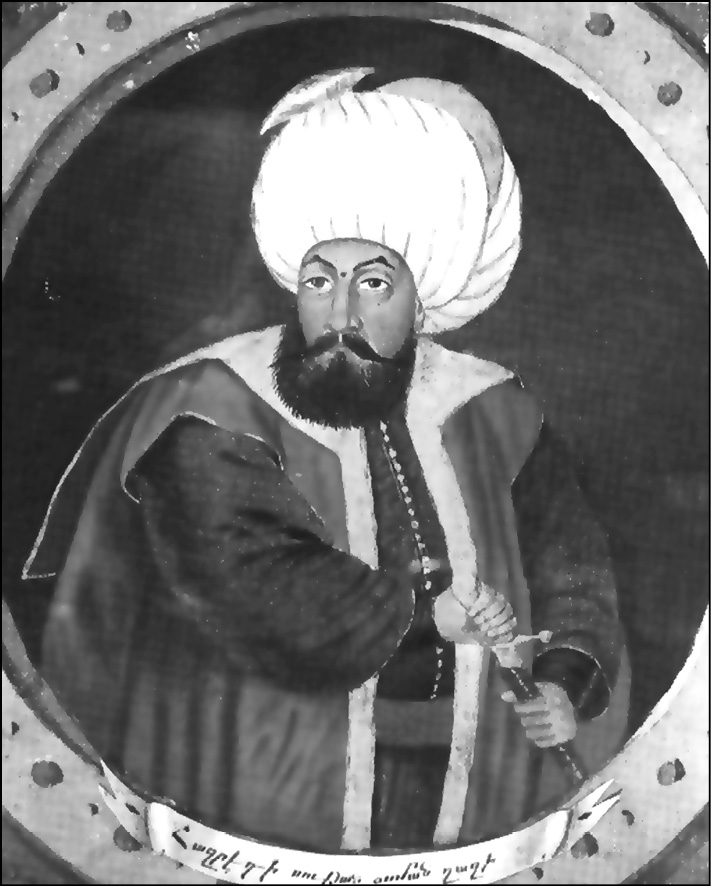
Bursa’nın fethedildiği sıralarda vefat eden Osman Gazi’nin kabri Bursa’da Gümüşlü Kümbet’tedir. Basiretli padişah, vefat edeceği zaman oğlu Orhan Gazi’ye gönderdiği vasiyetnamede Osmanlı devletini ileride koskoca bir imparatorluk yapacak olan ilkeleri şöyle sıralamıştır:
“Allah’ın emirlerine muhalif bir iş işlemeyesin! Bilmediğini ulemadan sorup anlayasın. İyice bilmeyince bir işe başlamayasın. Sana itaat edenleri hoş tutasın. Askerine ihsanı eksik etmeyesin, ki insan, ihsanın kuludur. Zalim olma! Âlemi adaletle şenlendir. Ve Allah için cihadı terk etme! Ulemaya riayet et ki, din ve devlet işleri nizam bulsun. Nerede bir ilim ehli duyarsan ona rağbet et. Askerinle ve malınla gururlanıp ulemadan uzaklaşma. Bizim mesleğimiz, Allah yoludur ve maksadımız, Allah’ın dinini yaymaktır. Yoksa kuru kavga davası değildir. Sana da bunlar yaraşır. Daima herkese ihsanda bulun! Memleket işlerini noksansız gör! Allah’ın hakkını ve kulların hukukunu gözet! Ve senden sonrakilere böyle nasihat etmekten geri durma. Ve adalet ve insafa riayet ile, zulmü kaldırmaya devam ile, her bir işe teşebbüste Allah’ın yardımına güven. Halkını düşman istilasından ve zulme uğratılmaktan koru! Haksız yere hiçbir ferde layık olmadığı muamelede bulunma! Hepinizi Allah’a emanet ediyorum. ”
Osman Gazi’nin aşağıdaki satırlarda aktardığımız konuşması ise, bir mecliste oğullarına verdiği nasihatidir. Konuşma, yapıldığı sırada, bir yazıcı tarafından kaleme alınmıştır. Hükümdarların devlet yönetiminde uyması gereken prensipleri açıkladığı bu konuşma, Osman Gazi’nin milletine olan sevgi ve saygısını, halkının huzurunu düşündüğünü ve adaletini göstermektedir.
* * *
“Oğullarım!
Biliniz ki beylik, Türkmenlik ve yörüklük edenlerde kalır. Her kim, kendi düzenini bilir, on başı olmaya yarar. Ve her kim ki on kişiye baş olabilir, elli kişiye baş olabilir. Ve her kim ki elli kişiye baş olabilir, yüz beyi olmaya yarar. Ve her kim ki yüz kişiye baş olabilir, bin beyi olmaya yarar. Ve her kim ki bin kişiye baş olabilir, tümen beyi olmaya yarar. Ve her kim ki bir tümene baş olabilir, boy başı olmaya ve bir boya han olmaya yarar ve il ve iklim padişahlığına yarar. Her on başı, ki yasak uygulayamaz, onu suçlu edip onun başı olduğu on kişiden birini on başı etmek gerek ve yüz başı ve bin beyi ve tümen beyi dahi böyle!
Her söz ki, üç bilge onda ittifak etse, o sözü her yerde demek olur. Kendi sözünü ve başka kişi sözünü, o bilgeler sözüne kıyas et! Eğer uygun düşerse, onu söylemek olur; yoksa hiç söylememek gerektir. Her at, ki semizlikte iyi seğirtse, koşsa ve orta etli ve zayıf oldukta da iyi seğirtse, koşsa o ata iyi at demek olur. Ama şu at ki bu üç halden birinde iyi seğirtmez, koşmazsa; ona iyi at demek olmaya!
Ulu beyler, ki baş olalar ve tam ve eksiksiz olarak çericileri (askerleri) ile ne zaman av için binseler, kendi adlarını muayyen kılalar ve daim Hak Teâlâ’ya hayır dua kılıp gönüllerini ona bağlayıp, kadim Tanrı kuvveti ile dört yan tutulana dek karşılığının fethini ve iyiliğini dileyeler. Ve çeriye girince, yeni doğmuş buzağı gibi sessiz olun ve savaş edince, şu aç doğan gibi, ki avı üzerine uçar, tam öyle girin. Kişi güneş denli her yerde kendi özünü halka göstere!
Hatun kişi gerektir ki eri ava ve çeriye ne zaman gitse, o evini tertipli ve bezenmiş tuta! Şöyle ki eğer elçi veya konuk eve konsa, her nesneyi tertip ile düzenli göre ve iyi aş pişirip konuğun eksiğini, gereğini gözetmiş ola! Elbette erinin iyi adını çıkarmış ola ve kendinin dahi iyi adı mahfillerde ve meclislerde söylene! İyi er, iyi hatundan malum ola! Ve kesinlikle hatun kişi, yaramaz ve kâhya kılıklı olmaya! Yok, olursa erin yolsuzluğu ve tedbirsizliği ondan malûm olur.
Şöyle ki tüccarlar, altın simli kumaşlarla gelirler, kâr ümidi ile gönülleri kuvvetli ve ümit ile olurlar. Çeri beyleri de gerektir ki oğullarına ok atmayı ve at koşturmayı ve güreş tutmayı iyi öğreteler ve onları bu işler ile sınayalar ve şöyle bahadır ve alp edeler ki, tüccarların kâra gönülleri inandığı gibi, onların da gönülleri oğullarının hünerlerine inana, yürekli alp olalar…
Tümen beyleri, bin, yüz beyleri gerektir ki kendi çerisini ve hizmetkâr ve yoldaşını düzene sokup hazır duralar ki her ne vakit hüküm ola, gece ve gündüz demeyip at bineler!
Padişahlar gerektir ki gece Hak Teâlâ kapısında dilenci olalar; iyilik ve keramet dileyeler ve gündüz halka padişah olalar! Sonra gelenler, önce gelen padişahların hayrını bozmayalar! Ta ki onların da hayrı cihanda baki ola.
Padişahların dostu ve arkadaşları ile oturup duran kişilerin, şunun gibi kişiler olması gerektir ki; uslu ve akıllı ve yakışıklı ve ulu asıldan ve iyi adlı ve temiz ve namuslu ve hoş tabiatlı ve tatlı sözlü ve dünya görmüş ve ülkeler görmüş ve iyi ve kötüyü sınamış kişiler ola!
Padişahın kethüdası ve vezirinin öyle bir kişi olması gerek ki padişahın malından ziyade dinine şefkat ede ve halkına haksızlık ve zulmü reva görmeye! Kulluk etmiş kocaları, yaşlıları ve muhtaçları gözete! Padişahlar, öksüzlerin ve yetimlerin atasıdırlar.
İl, ulus ve memleket tutmak, ulu iştir. Padişahın her daim akıllı ve her işten haberdar olması gerek ve her vakitte Hak Teâlâ’ya dua ve yakarış etmesi de gerek ki onun elinden ve dilinden ve kalem ve kademinden ile, ulusa ve mülk ve memlekete ve dine ve dünyaya yararlı nesneler ortaya çıksın.
Padişahın ulu işleri ve defter ve divanî işleri, hünerli ve işte deneyimli kişilere ısmarlaması gerek! İşi denememiş kişilere ısmarlamaya ki sonra pişman olur!
Hain ve suçlu kişiyi, kesin olarak yasağa yetirmek gerek ki daha hainlik ve hırsızlık ve eşkıyalık etmesin! Ve güç ve zulüm görmüş kişilere adalet vermek gerek ki zor kullanıcılar ve zulüm ediciler daha beter olmasın! Söylemişlerdir ki, padişah hırsızı, eşkıyayı defetmezse, kendi eli ile il ve kervan vurur. Zira padişahların halktan topladığı ve faydasını gördüğü, kötüleri üzerinden defettiği zaman helal olur.
Mürüvvet ve kişilik odur ki, ne zaman bir kimse bir kimseden hayır ve iyilik gördüğünde, onun minnetini kendi üzerine sabit bilmek gerek ve ona iyilik ve ihsan etmek gerek ve onun hakkını yerine getirmek gerek ve gerçekte padişahların saygınlığı hizmetkâr ve il ve memleket iledir. Eğer hizmetkâr ve il ve halk olmayacak olursa, padişahlık mümkün değildir. Öyle ise, eğer hizmetkârın ve il ve halkın kadrini bilmezse ve onları hoş tutup riayet etmezse, mürüvvetsizlik olur.
Ölmüş kişilerin malını, mülkünü öksüzlerine vereler! Padişahların himmetli ve devletli ellerinin bunun gibi mala bulaşması layık değildir ve kutlu olmaz. Dünyada iyi addan başka nesne baki kalmaz.
Düzen ve uyum sağlamış düşmanları dağıtmak olmaz. Oysa o vakitte onlardan birkaçını dost edeler, getireler. Zayıf ve güçsüz kişileri çok incitmeyeler ve zahmet vermeyeler.
Ziyafet ve yemek geç yiyeler ki iştah baskın ola! Ve şu vakitte laf-söz edeler ki bir zaruret ola! Ve uyku o vakitte uyuyalar ki uyku gayet galip ola. Han ve beyler şölen yemeği yediklerinde hizmetkârlarına da vereler, böylece kimse mahrum kalmaya!”
Fatih Sultan MEHMET
“Mazinize layık bir şekilde savaşınız!”
II. Mehmet… Osmanlı hanedanındaki Mehmetlerin ikincisi… Daha ziyade bilinen ismiyle Fatih, çünkü bu unvanın anlamı bir sıra sayı sıfatından çok öte. Peygamberin övdüğü komutan, askerleri de Peygamberin övdüğü askerler.
Manisa’da şehzadeyken babası Murat Han’ın ölüm haberini alır almaz ‘Beni seven arkamdan gelsin’ nidasıyla başkent Edirne’de. 21 yaşında. İstanbul’un fethine zihnen kilitli. Gündüzleri kumandanlarıyla hararetli bir şekilde fikir alışverişinde. Geceleri uykusuz.
Son derece planlı bir hazırlık devresi. Anadolu Hisarı; büyük burçlarına kumandanları Halil, Saruca ve Zağanos Paşaların adlarını verdiği Rumeli Hisarı. Sonra yeni bir çağ açan o toplar, şahi topları. Çaplarını, tahrip kuvvetlerini, atış menzillerini bizzat kendi hesaplamakta. Topçulukta pek mahir. Tarihçilere göre kuşatmanın başarılı olmasında zamanın son teknolojisi sayılan bu toplar büyük paya sahip. Kuşatma planı en ince teferruatına kadar hazır.
Karargâh, Topkapı surlarının tam karşısında. İki aya yakın süren kuşatma boyunca yaptıkları, parlak zekâsının sezişleri mi, yoksa keramet keşifleri mi? Şehri almak kolay değil ama “Ya o İstanbul’u alacak ya da İstanbul onu.”
İtalya’dan düşmana yardımcı bir donanma var. Karadan ve denizden vurmanın, son hücumun zamanı. Fethe iki gün kala askerlerini toplayıp yaptığı konuşma, onlara cesaret vermek gayesine matuf fakat aynı zamanda askerî dehasının da bir kanıtı. Kimin nerede, ne zaman ve nasıl savaşacağı belli. Güç toplasınlar diye yemek yiyip dinlenmeye çekilmesini istediği askerleri ise Bizans’ta kafa karışıklığına sebep: “Neden sessizler? Kuşatma kalktı mı?”
Sonunda fetih ona müyesser, ona ve askerlerine nasip. “İstanbul’u fetheden kahramanlar olarak şan ve şerefle hep hatırlanacaklar.”
İşte İstanbul’u fethederek çağ kapayıp çağ açan o kudretli ismin, fetihten önce askerlerine hitaben yaptığı, strateji ve savaş psikolojisi ile örülü, tarihin en önemli konuşmalarından biri.
* * *
“Ey benim paşalarım ve beylerim ve ağalarım ve bu savaşta yoldaşlarım!
Benim sizleri buraya getirmekten ve davetten gayem; şimdiye kadar yapılan işlerde bir eksiklikten dolayı değil, ancak yapılmasını düşündüğüm genel hücumda daha büyük hamiyet ve şecaat gösterilmesine sizleri tahrik ve teşvik içindir. Bir kısmınız bu görevin yapılmasına öyle bir derece gayret ve himmet gösteriyorsunuz ki her nev’i fedakârlığı, buradan başarıya ulaşmadan dönmek küçüklüğüne tercih ettiğinizi her an görmekteyim. Bir kısmınız bununla da yetinmeyip türlü teşvikler ile yüksek hislerinizi başkalarına da aşılamaya çalışıyorsunuz ki bu da gözlerimden kaçmamaktadır…
Şehrin alınmasının pek o kadar kolay olduğunu zannetmeyiniz ve düşünmeyiniz. Savaşanlar için surları aşmak pek zordur ve aşanlar da büyük tehlike ile karşı karşıyadır. Ama görüyorsunuz ki bütün hendekler doldurulmuş ve karaya bakan kale, üç yönden o derece tahrip edilmiştir ki, sizin gibi silahlı ve hafif silahlı olanlarca değil, atlara ve ağır surette silahlı süvarilerce bile kolaylıkla geçilmesi mümkündür. Şimdi sizlere alınması güç bir kale yerine, at ve silah ile geçilmesi mümkün bir ova veriyorum.
Karşımızda savaş düzeninde dizilenlere gelince, bunlar hakkında da birkaç söz söylemek gerekir. Bunlar pek az olmakla beraber ekserisi silahsız ve savaş alanında tecrübesiz kişilerdir. Kaçanlardan aldığım bilgiye göre iki veya üç kişi, aynı sayıda kuleler arasında savaşa devam etmeye çalışıyorlar. Hatta bir savaşçı bu ölçüde üç veya dört korugan üzerinde savaşa devam ediyor. Bu şekilde savaşa devam eden adam ya tamamen yüreksizdir yahut ahlakî açıdan eksik donatılmıştır. Bu halde o gibi adamlar bizim bu kalabalığımıza nasıl yetebileceklerdir.
Şurayı da aklımızdan çıkarmayalım ki bizim askerimiz devamlı olarak savaş yapabilir. Askerlerimiz arasında, yer değiştirme usulü yürürlüktedir. Yani askerler, ertesi savaşta, biri diğerinin yerine geçerek evvelkileri değiştirirler. Bu suretle askerlerin yiyip içmesine ve istirahatına ve uyumasına vakit bırakılır. Onlar ise kesintisiz olarak durmadan ateş ve savaş içindedirler. Bizim tarafımızdan devamlı olarak savaşa maruz ve mecbur edildikleri için boş vakitleri de yoktur. Hem de artık şimdiye kadar olduğu gibi yalnız uzak mesafeden silah kullanarak ve geçici hücumlar ve taarruzlarla değil, bir defa savaşa başladığımızda dövüş gece ve gündüz zincirleme devamlı olacak surette savaşacağız. Ve izlediğimiz amaç olumlu bir şekilde sonuçlanmadıkça ne mütareke ve ne de dövüş durdurulacaktır.
Binaenaleyh düşman, bu devamlı savaşın meydana getirdiği ağırlık, zahmet ve yokluktan bîtap düşerek teslim olmak zorunda kalacaktır. Hakikaten yıkık sur üzerinde diziler kuran İtalyanlar ve özellikle kaledekilerin mağlubiyeti, zor ve şüpheli olarak düşünülürse de bunlar hakkında yürütülen düşünceler bana da inandırıcı olmaktan uzak ve eksik görünüyor. Evvela bu adamlar akıl sahibi olmadıkça, hiçbir çıkarları bulunmadıkça başkalarının yararı için kendilerini hiçbir zaman tehlikeye karşı bırakmak istemeyeceklerdir. Ayrıca bu adamların her biri bir yerden toplanmış çeşitli insanlardan ibaret olduğu cihetle, bunların esas maksatları savaşmak değil, kazanıp gitmektir. Hatta bunlar şimdilik bizim ara sıra oyuncak şeklinde silah kullanmamızda -her vakit böyle yapacağız zannıyla- sebat ve mukavemet gösteriyorlarsa da her yönde savaşın bütün şiddetiyle alevlendiğini ve ölümün yaklaşmakta olduğunu gördüklerinde, iyi biliyorum ki o vakit, bu adamlar dakika kaybetmeden silahlarını atarak yüzlerini çevirecekler ve arkalarına bakmadan kaçacaklar ve hiçbir şey onları kaçmaktan alıkoyamayacaktır. Aksi bir düşünüşle dayansalar dahi maharet ve cesaretimiz, onların hakkından gelecektir. Halbuki bu faraziyeye ben asla ihtimal veremem. Görüyorsunuz ki bu şehir, denizden ve karadan her yönden bir şebeke içinde bulunuyor gibi kapalı ve sarılıdır. Şimdiden sonra silahımızdan kurtulması mümkün değildir. Sizler de bütün yiğitliklerinizi takınınız ve maiyetinizi sıcaklık ve kahramanlığınıza katınız ve tam bir şevk ile vazifelerini görmeye teşvik ediniz.
Onlara anlatınız ki savaşta kârlı çıkmak üç şeye bağlıdır: Azim, Namus, İtaat. Askerî itaat nedir? Askerî itaat, herkesin bulunduğu yer ve durumu iyice koruması, sessizlik ve düzen ile hareket ve davranıştan ayrılmamasıdır. Bu düzen ile her biriniz, üstünüzden gelen emri işitir ve sizden emir bekleyenlere de emirlerinizi duyurabilirsiniz. Gerektiği zaman sessizlik ile hareket edilir. Gerektiği zaman da bağırılır, haykırılır ve yerine göre hareket edilir. Savaşta ve özellikle kale dövüşlerinde bu usul pek faydalıdır. Bütün davranışlarınızda düzen ve tertip ile hareket edildiği zaman sonunda başarıya ulaşmak kesindir. Mazinize layık bir şekilde savaşınız.
Şimdi sizlere emirlerim şunlardır: Herkes kendi alay ve çadırlarına giderek yemek yesin ve dinlensin. Emrinizde bulunanlara tembihlerimi duyurunuz. Yarın erkenden kalkarak herkes kendi yerinde düzenli bir şekilde bulunsun. Düzenimiz, düşüncelerimiz çevreye duyurulmasın. Alayları düzenledikten ve yerleştirdikten sonra ağırbaşlı durunuz. Cenk şarkısı, kulağınıza; ve işaret, gözünüze çarpınca ondan sonrası size aittir.
Hamza Bey! Sen deniz tarafında olan surun karşısında gemiler ile dolaşarak ve bazılarına ok menzillerine kadar yaklaşarak kemankeşlerin ve topçuların ve tüfekçilerin taşıdıkları silahlar ile kale üzerine şiddetle ateş etmelerini emret ki, korunaklarda bulunan düşman askeri hiçbir taraftan başını dışarıya çıkarmaya ve savaş yapmaya meydan bulamasın. Sura merdiven uzatmakla görevli kişiler gemilerin bir kısmını karaya yanaştırsın ve deniz piyadeleri de surların üzerine çıkmaya gayret sarf etsinler. Böylece şecaat ve dirayetini göster ve benzerlerin ile yaşça ve mevkice denk olanlara ve savaş arkadaşlarına üstün olmaya çalış.
Zağanos Paşa! Sen de köprüyü geçerek Haliç içindeki surun üzerine büyük şiddetle hücum et ve limanda bulunan gemileri de gerektiği halde yardımına çağır.
Karaca Bey! Maiyetinde bulunan askerle hendeği geç, surların yıkılmış olan taraflarına yaklaşarak orada merdane müdafaada bulunan cengaverlerin hakkından gel. Surların üstüne yükselmeye çalış, cesaretinle emsal ve akranına örnek ol.
Ey İshak ve Mahmut! Her biriniz dahi kendi alayını emrine alarak selametle hendeği geçmeye ve merdivenlerle surların üzerine çıkmaya gayret ediniz. Kemankeşler ve topçular ve tüfekçiler ise surlara yöneldiğiniz zaman korunaklarda bulunan düşmanı sindirmek için şiddetle ateş ve tazyik etsin.
Ey Halil ve Saruca! Her biriniz maiyetinizde alayınız olduğu halde, yanımda savaşa hazır bir durumda bulunarak, beni savaşıyor ve surun harap olduğu yerden surun üstüne çıkmaya gayret sarf ediyor ve İtalyanları mağlup ediyor ve maiyetimde olanlara şehre girmek için yol açıyor gördüğünüz anda; size karşı cephe almış dizileri her iki yönden vurarak takip ediniz ve bunlara da hiç meydan bırakmayarak bizler ile meşguliyetlerini ve çökerttiklerimize yardım etmelerini önleyiniz.
Sonra görülecek işler için ben kendim dikkat ve ihtimam edeceğim. Şimdi sizler selamet ile çadır ve alaylarınıza dönerek yemek yiyiniz ve dinleniniz.”
28 Mayıs 1453
Maximilien - François - Marie - Isidore de ROBESPİERRE
“Dürüst insanların ceza görmeden ülkelerine hizmet edebilecekleri zaman henüz gelmedi!”
“Ben bir cumhuriyetçiyim, evet, eşitlik ilkelerini ve anayasanın halka sağladığı kutsal hakların işlemesini savunuyorum. Kime karşı? Anayasayı kendi çıkarlarına alet etmek isteyen entrikacıların tehlikeli sistemlerine karşı... Devletlerin anayasaları halk için yapılır. Halkı hiçe sayan bütün anayasalar, insanlığa karşı girişilen komplolardan başka bir şey değildir.”
Fransız İhtilali, tarihin en acımasız ihtilallerinden biri ise, Robespierre de ihtilalin kan gölüne dönüşmesinde en etkili olan Jakobenlerdendi. Jakobenler, ihtilalden sonra başa geçince soylu ve ruhban sınıfından binlerce kişiyi giyotine gönderdi. İhtilalin en kanlı sayfalarından biri olan Lyon ayaklanmasında Robespierre baş rollerden birini oynadı.
Sonuç, kan, ancak kan getirmiş; ihtilalin ilk yıllarında ihtilale bulaşmış hiçbir lider ayakta kalamamıştır. Robespierre de ihtilalin beşinci yılında 1794’te Ulusal Konvansiyon’da yaptığı konuşmadan sonra giyotine gönderilmiştir.
Robespierre son konuşmasında Jakoben sloganı ‘Anlaşmaktansa batalım’ı bir kez daha haykırır. Ölümü ister, düşmanlarına nefretini bir kez daha kusar. İhtilal sırasında sapla saman gibi birbirine karışmış olduğunu düşündüğü erdem ve ahlaksızlık kavramları üzerinde durur. Erdemi ihtirasla sevmekle birlikte kendinden farklı düşünenleri asla hoş görmez ve bağışlamaz. Ölümünden sonra ihtilalin tedhiş dönemi sona erer. Herkesi ihtilalin düşmanı görerek estirilen terörde Robespierre’in akıbetinden de anlaşılacağı üzere ihtilalin çocukları birbirlerinin katili olmuştur.
Robespierre, 26 Temmuz 1794’te şöyle haykırır:
* * *
“Bir yığın ahlaksızlığın, ihtilalin seliyle birlikte yurttaşlık erdemlerini de paldır küldür önüne katarak gittiğini gördüğümde, gelecek nesillerin gözünde, insanlığın samimî savunucularının arasına karışmış bu sapkın insanların civarında bulunmuş olmaktan dolayı lekelenmiş addedilmek kaygısı duyuyorum. Rakip hizipler, yaptıklarıyla tüm ahlaksızlıkları serbest bıraktılar. Onlar için tek mesele, ülkenin özgürlüğünü ve gelişimini sağlamaktan ziyade ülkeyi savaş ganimeti gibi taksim etmekten ibaretti.
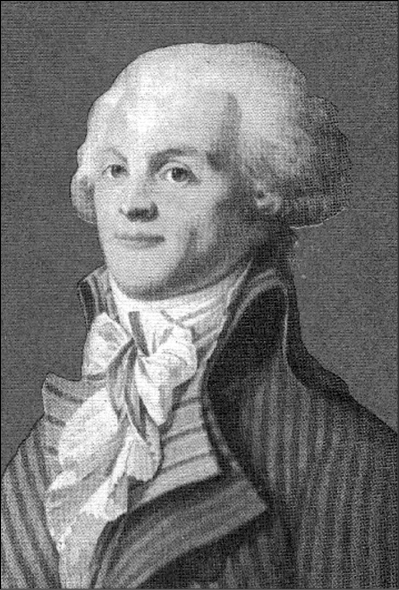
Yine de minnettarım... Bu planlarına karşı çıkan her şeye karşı onları harekete geçiren öfkeleri, sağduyulu insanlarla aralarındaki farkı açık bir şekilde ortaya koydu. Eğer Verres ve Catilines suçlamalarımdan dolayı kellemi kürsüde teşhir edecek kadar suç kariyerlerinde mesafe kat etmiş olduklarına inanıyorlarsa, şu andan itibaren halkıma bu zalimleri çok müşkül durumda bırakacak bir vasiyetim olacak... Halkıma ölümü vasiyet ediyorum!
Bu tiranlar birliği için bir insanı yenmenin ne kadar kolay olduğunun idrakindeyim fakat aynı zamanda insanlık hedeflerini savunurken ölebilecek birinin vazifelerinin de bilincindeyim. Özgürlük yanlılarının, tarih boyunca kötü talih ve iftiraların üstesinden geldiklerini görüyorum. Çok değil kısa bir zaman sonra onlara zulmedenler de ölümü tadıyorlar. İyiler ve kötüler, tiranlar ve özgürlüğün kardeşleri farklı şartlar altında da olsa bir gün bu dünyadan ayrılacaklar.
Halkım! Düşmanların meşum bir dalaletle, erdeminize olan güveninizi sarsmasına ve ruhlarınızın rütbelerini indirmesine izin vermeyin. Hayır Chaunette... Hayır Fouchet... Ölüm sonsuz bir uyku değil.
Vatandaşlarım! Tüm doğanın üzerine bir matem tülü örten ve ölüme hakaretler savuran sözleri, yaratıcıya karşı saygısız sözleri mezar taşlarının üzerinden silin, yerine de ‘Ölüm ölümsüzlüğün başlangıcıdır’ sözlerini kazıyın.
Halkım! Eğer cumhuriyette adalet, mutlak hakimiyetle hüküm sürmüyorsa ve bu sözcük, eşitlik ve vatan sevgisi manalarını içermiyorsa bilin ki özgürlük nafile bir tabirden başka bir şey değildir.
Halkım! Korkutulmuş insanlarım! Pohpohlanan ama hor da görülen, egemen ilan edilen ama köle gibi davranılan halkım! Unutmayın, adaletin hüküm sürmediği her yerde hakim güçlerin hırsları hüküm sürer, insanlar ise sadece zincirlerini değiştirmiş olurlar, kaderlerini değil...
Aranızda erdeme karşı mücadele eden bir takım hilekârların olduğunu hep hatırlayın ve bu düzenbazların sizin kendi meseleleriniz üzerinde ne denli etkili olduklarını da... Bunlar öyle ahlaksız bir güruh ki sizleri tedhiş eden ama aynı zamanda pohpohlayan, iyi vatandaşlık nezdinde de haklarınızı yasaklayan insanlar...
Ve unutmayın, düşmanlarınız sizlerin mutluluğu için bu bir avuç hilekârdan kurtulmak yerine, sizleri toplum refahına tek engel teşkil eden şerli bir avuç insana feda etmeye niyetli...
O halde bilin ki toplumun haklarını ve değerlerini savunmaya kalkanlar, bu hilekârlar tarafından örselenecek, haklarına yasak konacak, aynı zamanda hürriyet yanlıları da vazifelerinin ve kara çalmaların arasında bırakılacak. Vatana ihanetten suçlanmazlarsa hırslı ve art niyetli olmakla suçlanacaklar.
Dürüstlüğün ve erdemin etkisi, tiranlık ve birtakım hiziplerin zorbalığıyla karşılaştırılıp aynı kefeye konacak. Kendinize olan güveniniz ve itibarınızsa haklarınıza yasak konması için birer sertifika hükmünde olacak. Bastırılmış vatanseverliğin haykırışları isyana teşvik sayılacak. Zulümlerini iyice örgütleyinceye kadar toplum içinde size saldırmaya cüret edemeyeceklerinden tüm iyi vatandaşlar nezdinde şahsınızın haklarına yasak konacak.
Bizlere karşı silahlanan bu tiran imparatorluğunun vaziyeti işte budur. Satılmış ve onlara hizmete meyyal birkaç adamın üzerlerindeki etkisi işte budur.
Bu alçaklar halkı ele verme işini kanun zoruyla bizlere empoze etmeye çalışıyorlar, diktatör olarak çağrılmak da cabası... Bu kanuna nasıl tarafgir oluruz? Hayır, mazlumlar olmayı da göze alarak insanımızı savunalım. Biz erdemimizle darağacına gidelim, onlar ise işledikleri suçlarla... Her şey yolunda diyebilir miyiz? Yanlış olanı mı yapalım? Bu durumda ülkeyi felakete sürükler, mahvederiz. Onların gizli suîistimallerini açığa vuralım. Vatan hainlerini deşifre edelim. Birtakım güçlerin düzenini bozduğumuz, onların zararına nüfuz sahibi olmaya çalıştığımız söylenecek. Peki ne yapacağız? Görevimizi!
Gerçekleri söylemek isteyen ve bunun için ölüme razı olan birine ne tür bir itiraz yapılabilir ki? O halde toplumun özgürlüğüne karşı bir komplonun varolduğunu haykıralım; gücünün, Konvansiyon’un bağrına çöreklenmiş suçlu bir koalisyona bağlı olduğunu da... Bu koalisyonun Güvenlik Komitesi’nde ve yine kendilerinin kontrol ettiği komitenin bürolarında da suç ortakları var. Cumhuriyet düşmanları bu komiteye muhalif ve Halk Kurtuluş Komitesi adı altında bir komiteyle iki hükümet oluşturmuş durumdalar. Halk Kurtuluş Komitesi üyeleri de bu fesat düzenine dahil. Koalisyon tüm vatanseverleri ve vatanımızı felakete sürükleme denemeleriyle meşgul.
Peki bu şerre çare nedir? Hainleri cezalandırmak, Güvenlik Komitesi’nin bürolarını yeniden düzenlemek, komiteyi tasfiye edip Halk Kurtuluş Komitesi’nin emri altına sokmak, hatta Halk Kurtuluş Komitesi’nin de tasfiyesini sağlayıp hükümetin birliğini Ulusal Konvansiyon’un mutlak hakimiyeti altında yeniden teşkil etmek. Diğer bir deyişle merkezî hakimiyeti sağlamak, böylece onların yıkıntılarının üzerine adalet ve özgürlüğü yeniden inşa için ulusal otoritenin ağırlığıyla tüm hizipleri ezmek...
Bunlar benim fikirlerim, art niyetli olarak yaftalanmadan bu fikirleri savunmam mümkün değil. Bu fikirler ve prensipler yasaklı... Şu an için tiranlık hüküm sürmekte... Fakat sessiz kalmayacağım. Doğru yolda olan ve ülkesi için nasıl ölmesi gerektiğini bilen bir insana ne tür bir itiraz yapılabilir ki?
Ben zulme karşı savaşmak üzere yaratıldım, onu yönetmek için değil. Dürüst insanların ceza görmeden ülkelerine hizmet edebilecekleri zaman henüz gelmedi... Bu düzenbaz sürüsü bu ülkede hüküm sürdükçe özgürlüğün savunucuları kanun kaçağı sayılmaya devam edilecek.”
26 Temmuz 1794
Napoleon BONAPARTE
“Haydi düşmanlarımızı titretelim!”
1769 yılında Korsika’nın Ajaccio şehrinde doğan Napoleon Bonaparte, savaşları, başarıları ve başarısızlıkları ve hatta aşkları ile tarihin gördüğü en renkli liderlerden biri olmuştu. Askerî okullarda devam eden öğrenim hayatı sonrasında, 1794’te İtalya’daki topçu birliklerinin komutanlığına getirilmiş, Fransız Devrimi’nin ilk dönemlerinde Korsika’da kalmıştı. 1795 Ekim’inde Fransız ordusunun başına getirildi. 1796 Şubat’ında ise İtalya’daki ordunun başkomutanı oldu. Bu arada ünlü aşkı Josephine ile evlendi.
1796 Nisan’ında ilk İtalya seferini yaptı. Bu sefer, Napoleon’u Napoleon yapan bir dönüm noktasıydı. Stratejik ustalığın bir şaheseri sayılan İtalya Seferi, büyük başarı ile sonuçlandı. İmzalanan Campo Formio Antlaşması ile Venedik Cumhuriyeti, İtalya’ya bırakılmış; karşılığında da Belçika ve İyon adaları alınmıştı. Bu önemli siyasî olayla Devrim Cumhuriyeti, Avrupa’nın en tutucu devleti olan Avusturya’ya gücünü göstermiş ve Napoleon, İtalya’daki Fransız yönetimini kabul ettirmişti.
Napoleon, İngiliz hakimiyetinin kritik noktalarından biri olan Mısır’ı da hedef listesine almıştı. Akdeniz’deki İngiliz donanmasını yenilgiye uğratıp, Malta’yı aldı. 1798 Temmuz’unda da İskenderiye’ye girdi. Piramitler Savaşı’nda Memlukları yendi. Fakat İngiliz donanması, Fransız gemilerini batırdı ve İngiltere-Osmanlı-Avusturya-Rusya birleşik ordusu, Napoleon’un ele geçirdiği toprakları geri aldı. Napoleon, 1799’da Fransa’ya dönerek Sieyés’in düzenlediği hükümet darbesine katıldı ve ‘Birinci Konsül’ olarak Fransa’nın mutlak hakimi oldu. Yürütme gücünün tamamını elinde toplayıp 1804’te kendini ‘İmparator’ ilan ettirmeyi başardı ve kısa zamanda Fransa halkının sevgisini kazandı.
Diğer imparatorlar gibi onun da hayallerini devasa bir imparatorluk süslüyordu. 1805-1807 arasında İngiltere ile III. Koalisyon’a katılan Rusya ve Avusturya birleşik ordusunu, Austerlitz ve İena’da yenilgiye uğrattı. Rusları Friedland’da yenerek Tilsit Antlaşması’nı imzalamak zorunda bıraktı ve bütün Avrupa’yı içine alacak bir imparatorluk kurma yolunda dev bir adım attı. Papalık Devletleri’nin ortadan kaldırılmasını; İspanya ve Portekiz’in fethi, Avusturya seferi (1808) ve Avusturya ile barış imzalanması takip edecekti.
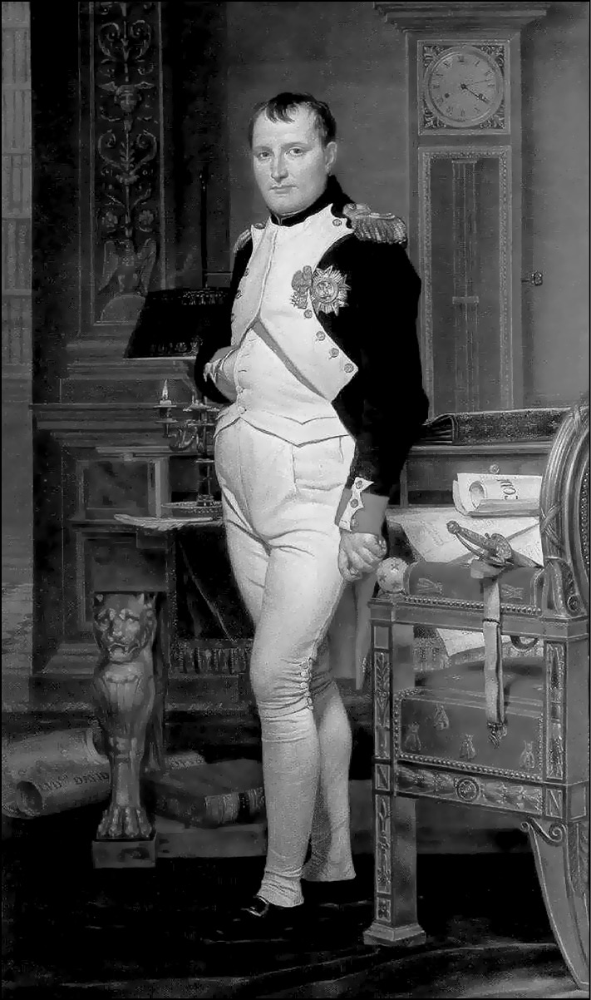
Napoleon gözünü kuzeye de dikmişti. 1812 yılında Rusya’ya girdi, Moskova’ya kadar ilerledi; fakat yiyecek sıkıntısı, asker kaçakları ve Rusya’nın dondurucu soğuğu, emperyal hayallerine sekte vurdu, ordusu bozguna uğradı. Kurulmuş olan VI. Koalisyon ordularına karşı 1813 Ekim’inde Leipzig’de yenilmesinin ardından Fransa işgal edildi. Napoleon’un yıldızı sönmüştü, kendisi Elbe Adası’na sürgüne gönderildi. Fransa tahtının yeni sahibi XVIII. Lui oldu.
Ama o sıradan biri değildi. Pes etmeye de hiç niyeti yoktu. 7 Mart 1815’te Elbe’den kaçarak, iktidarı yeniden ele geçirdi. Fakat yeniden kurulan koalisyona karşı koyamayıp 18 Haziran 1815’te Waterloo’da İngilizler karşısında bir kez daha bozguna uğradı. Bu yenilgiyle tahtını ikinci kez kaybediyor ve İngilizler tarafından Atlantik’teki St. Helena Adası’na sürgün ediliyordu. Son yıllarını bu küçük adada geçirdi ve anılarını yazdırdı. 5 Mayıs 1821’de ölen Napoleon’un cenazesi ancak 1840 yılında Paris’e getirilebildi ve İnvalides’e gömüldü.
Tarihin ateşli bir safhasında sahne almış olan Napoleon kısa sayılabilecek bir sürede, ‘kurtarıcı’, ‘zalim’, ‘maceraperest’, ‘kanun yapıcı’, ‘imparator’ ve ‘kanun kaçağı’ sıfatlarının tümünü üzerinde toplamayı başarmış, sıradışı bir asker ve siyasî liderdi. Askerî dehasının ve stratejik ustalığının şaheseri kabul edilen İtalya seferi esnasında askerlerine yaptığı bu konuşma, onun nasıl olup da tarihe adını yazdırdığına şahitlik ediyordu…
* * *
“Askerlerim! Apennines tepelerinden akan seller gibi atıldınız, ilerlemenizi engellemeye kalkışan her şeyi devirip yok ettiniz. Piedmont, Avusturya zulmünden kurtarıldı, Fransızların kardeşliğine ve himayesine teslim edildi. Milan sizlerin! Cumhuriyetçi ilkeler, Lombardi’nin her tarafında uygulanmakta. Parma ve Modena dükleri siyasal varlıklarını sizlerin cömertliğine borçlu.
Sizi gururlu bir şekilde tehdit eden düşman, sarsılmaz mertliğinize karşı çıkmayı, dağılıp yok olmakla ödedi. Po, Tessin ve Adds, size bir gün bile dayanamadı. İtalya’nın o çok övündüğü siperleri sizi durdurmakta yetersiz kaldı. Onları, tıpkı Apennines’te yaptığınız gibi, süratle silip attınız. Başarılarınızla vatandaşlarınızın gönlünde taht kurdunuz. Temsilcileriniz, zaferlerinize ithafen Cumhuriyetin tüm komünlerinde ve ülkenin dört bir yanında bir festival yapılması için karar aldı. Şimdi babalarınız, anneleriniz, eşleriniz ve kardeşleriniz sizlerin başarılarıyla sevinçten havalara uçuyor, sizlerin yakınları olmaktan gurur duyuyorlar.
Evet askerlerim! Çok şey başardınız, fakat yapacağınız daha çok şey var. Bizim için ‘Fethetmeyi biliyor, ancak zaferlerinden kazançlı çıkmayı beceremiyorlar’ demeleri doğru olur mu? Gelecek kuşaklar, Lombardi’de Capua’yı bulunca bize sitem mi etsinler? Sizi yorgunluktan hareketsiz yatar vaziyette görüyorum. Biliyorum, ihtişamlı günleri özlüyorsunuz. O halde haydi devam edelim! Daha çıkacak seferlerimiz, hizaya getirilecek düşmanlarımız, kazanılacak şanımız ve öcü alınacak yaralarımız var!
Haydi! Fransa iç savaşında hançerlerini kınlarından çıkaranları, elçilerimizi kalleşçe öldürenleri, Tulon’da gemilerimizi yakanları… Haydi, hepsini titretelim! Artık intikam çanı çaldı. Fakat insanların endişelerini yatıştırmak için kendimizi, model aldığımız Scipiolu Brutus ve diğer büyük insanların soyundan gelen arkadaşlar olarak ilan edelim.
Başşehri yeniden kurmak, onu ölümsüzleştiren kahramanların heykellerini yeniden yerleştirmek, Roma halkını çağlar süren kölelik büyüsünden uyandırmak ve yeniden canlandırmak... Bunlar, zaferlerinizin meyveleri olacak. Gelecek kuşakların gıptayla izleyeceği bir devir açacaksınız. Avrupa’nın en güzide bölgesinin meselelerine yön vermenin sonsuz şanını tadacaksınız. Fransa’nın özgür insanları, Avrupa’ya eşsiz bir huzur ve barış getirecek. Fakat önce, 6 yıldır yapılan fedakârlıkların zararı ödenecek. Tekrar evlerinize, ocağınızın başına döneceksiniz ve sizi görenler, parmaklarını size doğrultup şöyle diyecekler: ‘İşte İtalya’ya giden orduda savaşanlardan biri!’”
Abraham LINCOLN
“Halkın, halk tarafından halk için yönetimi yeryüzünden silinmeyecek”
Amerika Birleşik Devletleri’nde 1861-1865 yıllarında Kuzey ve Güney eyaletleri arasında yaşanan iç savaşın en önemli safhalarından biri, 1-3 Temmuz 1863 tarihleri arasında Pennsylvania yakınlarındaki Gettysburg kasabası civarında meydana gelmişti. Küçük çapta başlayan çatışma, kısa sürede 160 bin Amerikalının katıldığı bir savaşa dönüştü. Çarpışma sona erdiğinde, geride 80 bin civarında ölü kalmıştı. 19 Kasım 1863’te çarpışma alanına giden Başkan Abraham Lincoln, savaş alanının ulusal mezarlık haline getirilmesi amacıyla bir konuşma yapacaktı.
Kendisinden önce konuşan Massachusetts temsilcisi tam iki saat boyunca kürsüden inmemişti. Alanı dolduran kalabalık Lincoln’den de benzer bir performans bekliyordu. Ama Başkan, belki de Amerikan tarihinin en kısa konuşmalarından birini yaptı. Lakin, topu topu iki dakika süren bu konuşmanın bitiminde sarf ettiği ‘Halkın, halk tarafından halk için yönetimi devam edecek’ cümlesi, halen dahi Amerikan demokrasisinin kristalize olmuş şekli olarak kabul edilir. Aşağıda okuyacağınız bu özlü konuşma, Washington’daki Lincoln Anıtı’nın üzerine de kazınmıştır.
* * *
“Babalarımız seksen yedi yıl önce bu topraklara geldiklerinde, tüm insanların eşit yaratıldığı inancına kendilerine adamış ve özgürlüğe inanan insanların oluşturduğu yeni bir ulus inşa etmişlerdi. Şimdi devasa bir iç savaşın içindeyiz ve bu ulusun ya da böylesine inanmış ve kendini adamış herhangi bir ulusun, uzun süre yaşayıp yaşayamayacağını test ediyoruz. Bu savaşın görkemli cephelerinden birinde bir araya geldik. Bu cephenin bir bölümünü, bu ulusun yaşayabilmesi için hayatlarını verenlere nihaî bir dinlenme mekânı olarak tahsis etmek için geldik. Bu, yapacağımız en uygun işlerden biri olacaktır. Ama daha geniş manada, bu toprakları tahsis etmek, takdis etmek ve kutsamak bizi aşar.
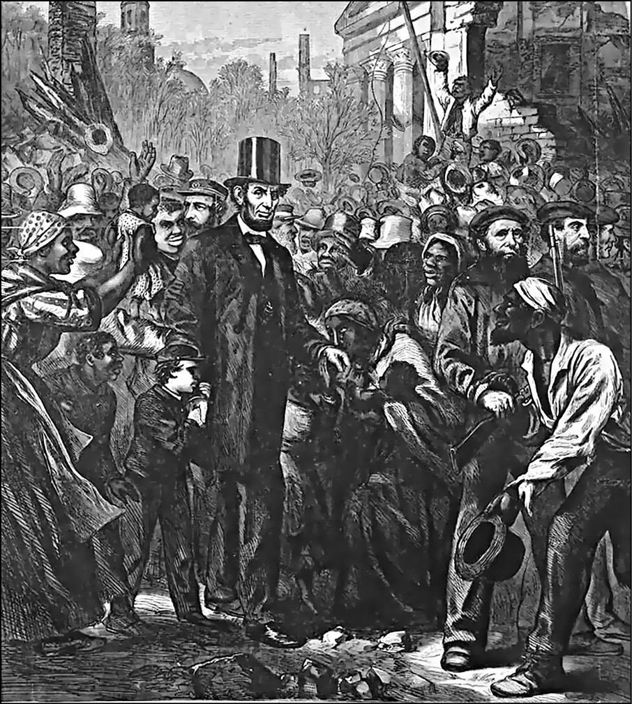
Burada çarpışan, hayatını kaybeden ve halen yaşayan cesur adamlar, bizim aciz gücümüzü aşacak derecede bu işi başardılar. Dünya, burada söylediklerimize çok az kulak kesilecek, fazla uzun süre hatırlamayacak; ama bu cesur adamların burada yaptıklarını asla unutmayacak. Bizim için önemli olan, çarpışarak bu davayı buraya kadar asil bir şekilde taşıyan insanların yarım bıraktığı işin bitirilmesine kendimizi adamamızdır. Burada önemli olan, kendini vakfetmenin en son noktasına gelmiş bu onurlu ölülerden görevi devralarak, önümüzde uzanan görkemli misyona kendimizi adamamızdır. Burada önemli olan, bu insanların boşu boşuna ölmediğini, bu ulusun Tanrı’nın gözetiminde yeniden özgürlüğe doğduğunu, halkın, halk tarafından halk için yönetiminin asla yeryüzünden kalkmayacağını göstermektir…”
19 Kasım 1863
Amerikan iç savaşı, köleliğin kaldırılmasını isteyen Kuzey eyaletleri ile devamını savunan Güney eyaletleri arasında patlak vermişti. Her ne kadar Kuzey’in tavrının arkasında asil bir çıkış noktası varmış gibi görünse de, konunun ekonomik bir boyutu da vardı. Kuzey eyaletleri, zenci kölelerin bağımsızlık sonrasında Kuzey’e gelip sanayi kuruluşlarında ucuz işgücü olarak çalışacaklarını hesaplıyordu. Bununla birlikte Kuzeyliler, Güneylilerle İngiltere arasındaki ticarî ilişkilerden de rahatsızlık duyuyordu. İngiltere, Güney eyaletlerine Afrika’dan köle temin ediyor, karşılığında pamuk alıyordu. Buna karşın Kuzeyliler, pamuğu hem kendi sanayileri için kullanmak istiyor, hem de bu hammaddenin ucuz fiyata dışarı satılmasına karşı çıkıyorlardı. Sonuçta köleliğin kaldırılmasını istemeyen 13 Güney eyaleti, Amerika Konfedere Devletleri adı altında ABD’den ayrılmaya karar verdi. 1861’de başlayan savaş, 1865’te Kuzeylilerin zaferiyle sona erdi ve o tarihten itibaren kölelik, en azından kâğıt üzerinde, resmen yasaklandı.
Otto von BISMARCK
“Biz Almanlar yalnız Tanrı’dan korkarız, başka hiçbir şeyden değil.”
Otto von Bismarck II. Reich’ın kurucusu ve ilk şansölyesi. 1871’de Alman milletinin birliğini sağlayarak II. Alman İmparatorluğu’nun kurulmasına ön ayak oldu. Bunu gerçekleştirinceye kadar izlediği diplomasi, yerli yerinde düşünülmüş, akıllıca ve oldukça ilginç bir kararlar dizisidir.
Prusya, Alman birliğinin kurulması için Bismarck’ın stratejilerine göre sırasıyla Danimarka, Avusturya ve Fransa ile çarpışmış ve sonuçta başarılı olmuştu. Bismarck’ın diplomatik dehasıyla bir dizi seri savaş ve hızlı politik manevralarla adeta bir oldu bittiye getirilen yeni Alman imparatorluğunun kuruluşu şu şekilde gerçekleşti: Prusya ilk olarak Avusturya adına Danimarka’ya savaş açtı, sonra Rusya ve Fransa’nın tarafsızlığını sağlayıp Avusturya’ya saldırdı. Ancak fazla ileri gitmedi ve Viyana’ya girmedi, zira bu ikili ileride müttefik olacaklardı. Ve son olarak, Avusturya ve Rusya’nın tarafsızlığını sağladıktan sonra Fransa’ya girdi. 1870’te III. Napolyon’u yenilgiye uğratan ve Alsace-Lorainne’i alan Prusya’nın bir yıl sonra 1871’de birliğini tamamlamasıyla Kral, Alman İmparatoru; Bismarck ise Şansölye unvanını aldı.
Böylece Alman birliğini kuran Bismarck’ın hedefi artık ülkesinin güvenliğini tam anlamıyla sağlayabilmekti. Coğrafî konumu itibariyle Avrupa’nın ortasında bulunan Almanya, Bismarck’ın titiz dış politikası sayesinde kendisini çevreleyen ülkelere karşı dengeli bir siyaset izlemiş ve 1888’de Avrupa’nın süper gücü olana dek silahlanarak ve ordusunu güçlendirerek yükselişini devam ettirmiştir.
‘Demir Şansölye’ lakaplı Bismarck’ın burada yer alan konuşması, diğer devletlerle sömürge yarışına girmek yerine ittifaklar kurarak güçlü bir devlet konumuna gelmeyi hedefleyen Bismarck siyasetine güzel bir örnektir. Tarihte ‘Bismarck kâbusu’ olarak da bilinen ve bu konuşmada da yer alan, Fransa ve Rusya’nın Almanya’ya karşı birleşmesi kaygısı, Bismarck’ın dış politika stratejilerinin temel dayanağı olmuştur. Almanya’nın iki cephede birden savaşmak durumunda kalması halinde galibiyet ihtimali çok düşüktür. Bunun için kartlar iyi oynanmalı, hiçbir zaman her iki devletle aynı anda karşı karşıya gelinmemelidir. İşte bu sebeple Bismarck, özellikle Alsace- Lorainne gibi önemli bir endüstri bölgesini kaybettiği için Almanya’ya diş bileyen Fransa’ya karşı Avusturya ve Rusya ile yakınlaşır. Amacı, ülkesinin güvenliğidir. 1888’e gelindiğinde Almanya artık Avrupa’nın en güçlü ülkesi olmuştur. Bu tarihten sonra yeni İmparator II. Wilhelm’in sömürgecilik siyasetiyle uzlaşamayan Bismarck’ın sahneden çekilmesiyle Almanya da diğer devletlerle birlikte sömürge yarışına girmiş, böylece I. Dünya Savaşı’na giden sebepler dairesine o da dahil olmuştur.
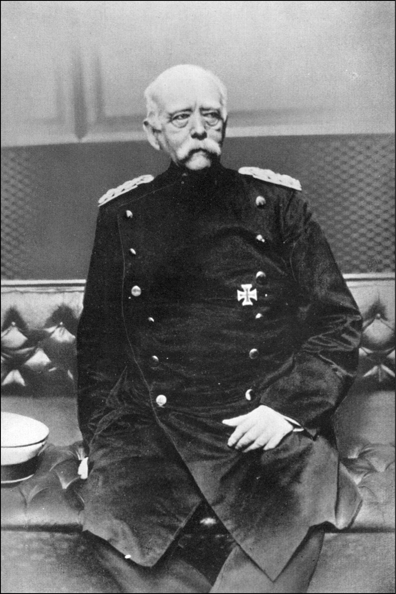
* * *
“İsteyerek konuşmuyorum… Mevcut şartlar altında talihsizce söylenmiş tek kelimenin dahi yıkıcı bir etkisi olabilir. Kelimeleri art arda sıralayarak durumu insanlarımıza ya da yabancılara açıklamaya çalışmanın ise pek de etkili olacağını düşünmüyorum.
İstemeden konuşuyorum, fakat sessiz kalırsam da korkarım bu meseleye kendini eklemlemiş kamuoyunda kargaşa ve endişelere sebep olmuş birtakım beklentilerde azalma yerine artış olacaktır. Halkımız konunun kritik ve zor oluşuna binaen bir Dışişleri Bakanı’nın bile bu meseleye eğilmeye cesaret edemeyeceğini düşünmüş olabilir. Yine de konuşuyorum. Bu nedenle itiraf etmeliyim ki bunu, gönülsüzce yapıyorum. Kendimi bir sene önce yine aynı mekânda yaptığım konuşmada kullandığım ifadelerle sınırlayabilirim. Zaten o zamandan beri fazla bir gelişme olmuş değil.
Yıl boyunca bizlere telaş veren korkulara Fransa’dan ziyade Rusya sebep olmuştur. Diyebilirim ki, yaz boyunca Rus ve Fransız basınının arasında geçen karşılıklı tehdit, kaygı uyandırma ve provokasyon olayları bizleri de etkilemiştir. Fakat Rusya’da şu anki durumun bir sene öncesinden farklı olduğuna inanmıyorum.
Sizlere soruyorum! 1870’teki savaş bittiğinden beri savaş tehlikesi olmadan herhangi bir yıl geçirdik mi? Savaştan henüz dönüyorken, 70’li yılların başında ‘Sonraki savaş ne zaman olacak? Rövanş ne zaman olacak?’ diye soruluyordu. En geç beş yıl içinde. O zaman bize denildi ki: ‘Savaşıp savaşmayacağımız ve savaşın başarısı Rusya’ya bağlı. Bu konuda karar onun ellerinde…’
Bugünlerde olabildiğince güçlü olmalıyız, eğer bunu başarabilirsek bizimle eşit kaynaklara sahip olan diğer ülkelerden daha güçlü olacağız. Fakat kaynaklarımızı kullanmazsak bu bizim için bir suç olacaktır. ‘Tüm acil durumlarda hazır olmak için mütemadiyen gayret göstermeliyiz’ demekle, coğrafî konumumuzu da hesaba katarak sonuçta bizimle aynı hedefleri paylaşan diğer güçlerden daha fazla çaba sarf etmemiz gerektiği önerisini ileri sürüyorum. Bizler Avrupa’nın ortasındayız. En az üç yönden saldırılabilecek bir konumdayız. Fransa’nın sadece doğu sınırı var. Rusya ise sadece batıdan saldırıya maruz kalabilir. Coğrafî konumumuzdan ve ayrıca Almanlar olarak şimdiye kadar birbirimize zayıf bir alaka sergilememizden ötürü, bize karşı kurulacak bir koalisyonun olumsuz etkisine diğer halklardan daha fazla açığız. Her neyse, Tanrı tarafından komşularımızın, bizim atalete düşmemizi engelleyecekleri bir konuma yerleştirilmişiz…
Yeni kanunla silahlı askerlerimizin sayısını artırabileceğiz, eğer ihtiyacımız olmazsa bunu yapmayız ve bu askerler ülkemizde kalır. Fakat hizmete hazır bir durumda olmalılar. Bu, birincil derecede önem arz eden bir mesele. 1813’te İngiltere bizler için kısa tüfekler sağlamıştı. Gençken bu silahlarla biraz avcılık deneyimim olmuştu. Kesinlikle askerlik ve savaş için uygun silahlar değildiler. Acil bir durumda derhal silah temin edebiliriz fakat bu kanunla aynı zamanda her şey hazır halde bulunacağı için barıştan yana olan tutumumuzu sağlama almış ve ittifakımıza yedi yüz bin askeri olan dördüncü bir büyük güç katılmışçasına barış cemiyetimizi desteklemiş olacağız.
Ordunun böyle güçlü bir şekilde desteklenmesinin halkımız üzerinde de teskin edici bir yönünün olacağını düşünüyorum. Ayrıca bir ölçüde basınımızın ve kamuoyunun kaygılarını da dindirecektir bu. Ümit ediyorum ki imza atılıp kanunun yayınlanmasından sonra orduya yapılan bu destek sayesinde, askerlerin hazır bulunuşundan dolayı herkes rahatlayacaktır. Silahlar da gerekli ve önemlidir. İnsanlarımızdan da en iyilerini seçerek ordumuzu güçlendirmeliyiz.
Hiçbir zaman hücuma, saldırıya yönelik bir savaş taraftarı olmadım ve eğer savaş sadece bizim inisiyatifimize kalırsa, biliniz ki başlamayacaktır. Ateş iyice yanmaya başlamadan önce tutuşturulur, bizler bunu yapmayacağız. Az önce de bahsettiğim gibi gücümüzün şuurunda olmak ya da müttefiklerimize duyduğumuz güven, bizleri barışı sağlamaya yönelik gayretlerimizi devam ettirmekten alıkoymayacaktır. Aksi ve huysuz bir tutumumuz olamaz. Önyargılara teslim olmayacağız. Bizlere yöneltilen tehdit, hakaret ve provokasyonlar, kuşkusuz ki tabii olarak bizlerin husumet duygularını kabartmıştır. Almanlarda bu tür duyguları uyandırmak cidden zor bir iştir, zira her nasılsa başkalarının onlardan hoşnut olmamasına diğer milletlerden daha az duyarlıdırlar. Şimdi oluşan bu husumeti yumuşatmak için epeyce zahmete giriyoruz. Gelecekte de geçmişte olduğu gibi komşularımızla özellikle de Rusya ile barış içinde olmaya gayret edeceğiz. Özellikle Rusya ile derken bunun sebebi, Fransa’nın barışa yönelik gayretlerimize rağmen bize hiçbir güvenlik teminatı sunmamasıdır.
Hiçbir zaman bozuşmak için sebep aramayacağız. Fransa’ya asla saldırmayacağız. Barışın yakın bir gelecekte sekteye uğrayacağına inanmıyorum ve umarım henüz karara bağlanmamış olan kanun tasarısını barışı bozmaya yönelik bir düşünce ya da anlayış olarak değerlendirmezsiniz. Alman halkı, Tanrı’nın ona verdiği gücü sadece gerektiğinde ve yerinde kullanacaktır. Silahlanmayla ilgili bu kanun tasarısına bu yönden bakılmalıdır. Eğer gerekmiyorsa askerî gücümüzü kullanmayacağız ve kullanmamızı gerektirecek durumlardan sakınmaya da gayret göstereceğiz. Yabancı basında çıkan kışkırtıcı makaleler bunu zora soksa da dünyaya bu tür makalelerin yayınlanmasına karşı tavır almaları için hususî bir öneride bulunabilirim. Hiçbir şey ifade etmiyorlar. Bizlere verilmeye çalışılan gözdağı, -hükümetler tarafından değil, gazetelerdekini söylüyorum- Büyük Alman İmparatorluğu’nun kâğıt üzerine basılmış siyah mürekkepli birkaç sıra kelimeden ürkeceğini sandıkları düşünüldüğünde, inanılmaz derecede saçma…
Eğer bu tarz fikriyatı bırakırlarsa her iki komşumuzla da daha sağlıklı bir anlaşma zeminine ulaşacağız. Sonuçta her ülke kendi basınının sebep olduğu fesattan sorumludur. Yoksa bir gün başka bir ülkenin vereceği nihaî bir kararın sonucu olarak hesaba çekilmekle karşı karşıya kalabilir. İyi niyet ve sevgi ile belki de çok kolay elde ediliriz, fakat tehditler ve gözdağı ile asla.
Biz Almanlar, yalnız Tanrı’dan korkarız, başka hiçbir şeyden değil. Barışı sevmek ve korumak bizde Tanrı korkusundandır. Bunu bize karşı insafsızca kullananlar, 1813’te olduğu gibi zayıf ve küçük Prusya Krallığı’nın tüm nüfusunun savaşçı bir vatan sevgisinin gücüyle nasıl bir araya geldiğini anladıklarında öğreneceklerdir. Ayrıca vatanseverlik, tüm Alman ulusunun ortak bir özelliği olmuştur. Almanya’ya her kim saldırırsa, halkı birbirine kenetlenmiş, her askerinin kalbi Tanrı’nın bizimle olduğu inancıyla atar şekilde bulacaktır Alman ulusunu.”
Woodrow WILSON
“Dünya demokrasi için güvenli bir yer haline getirilmelidir.”
Amerikalı politikacı, devlet adamı, ABD’nin 28. Başkanı Wilson, Amerika’nın önde gelen üniversitelerinden Princeton Üniversitesi’nden mezun olmuş, eğitimi sırasında parlak bir öğrenci sayılmasa da hitabet ve edebiyat kulüplerinde sivrilmiştir. Daha sonra bu üniversitede profesörlük unvanı almış ve rektörlük de yapmış olan Wilson, hitabet gücüyle meseleleri, geniş kitlelere hitap eden popüler bir şekle sokmakta oldukça yeteneklidir.
Başkanlık seçim kampanyaları sırasında yaptığı konuşmaları da orijinal fikirlerden çok yüksek bir ahlakî tonla yoğrulmuştur. Dindar bir insandır. I. Dünya Savaşı boyunca ülkesi için “mutlak tarafsızlık” siyaseti üzerinde ısrarla durmuştur. Almanya’nın denizaltı savaşlarını şiddetlendirmesi üzerine ise tüm isteksizliğine rağmen 2 Nisan 1917’de Kongre’de yaptığı konuşmayla Almanya’ya savaş ilan etmiş; konuşmasından dört gün sonra, bu isteği Amerikan Kongresi’nce oybirliği ile kabul edilmiştir. Konuşmasında dünyanın demokrasi için daha güvenli bir yer haline getirilmesi gerektiği üzerinde durur. Wilson, savaşın sonlarına doğru uluslararası bir sistemin kuruluşu için çalışmış ve Wilson İlkeleri olarak bilinen ve diplomasi tarihinde özel bir yer alacak olan 14 maddelik prensiplerini ortaya koymuştur.
Wilson İlkeleri, I. Dünya Savaşı’ndan sonra insanlığın yeni felaketlere sürüklenmesini önleyecek barış düzeninin temel ilkeleri olarak görülmüştür. Uluslararası siyasette ahlakî bir standardın gerekliliğini savunmuştur. Konuşmalarında bu ton açıkça sezilmektedir.
* * *
“Atmakta olduğum adımın çok ciddi, hatta trajik bir nitelik taşıdığını ve getirdiği muazzam sorumlulukları çok iyi bilerek ama aynı zamanda anayasal görevim addettiğim şeye hiç tereddütsüz riayet ederek; Kongre’nin, Alman İmparatorluk hükümetinin yakın zamanda izlediği tutumu, ‘ABD hükümetine ve halkına savaş açmak’ şeklinde değerlendirmesini öneriyorum. Ayrıca Kongre’nin, bu şekilde kendisine dayatılmış ‘savaşan devlet’ statüsünü resmen kabul etmesini, sadece daha kapsamlı bir savaşı sona erdirmek üzere -aynı zamanda da, Alman İmparatorluğu hükümetine koşulları kabul ettirip- bütün yetkisini kullanmasını ve bütün kaynaklarını harekete geçirmesini öneriyorum.
Düşmanca amaçlara yönelik bu meydan okumayı kabul ediyoruz, çünkü biliyoruz ki böyle yöntemler uygulayan böyle bir hükümet, asla dostumuz olamaz ve onun hangi amaca yönelik olduğunu bilemediğimiz şeyleri gerçekleştirmek için hep tetikte bekleyen örgütlü gücü var oldukça, dünyanın demokratik yönetimleri için kesin güvenlik söz konusu değildir. Şu anda, özgürlüğün bu doğal düşmanının dövüş çağrısını kabul etmek üzereyiz ve onun hak iddiaları ile gücünü durdurmak, sona erdirmek için gerekirse ulusun bütün kuvvetlerini sonuna kadar kullanacağız.
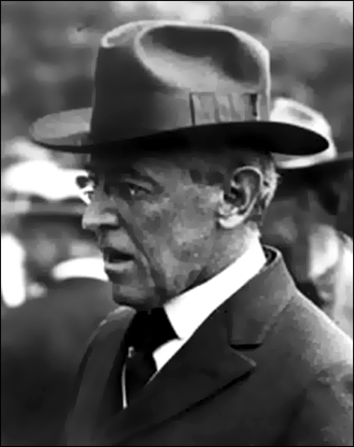
Gerçekleri her türlü sahte görüntüden, her türlü maskeden sıyrılmış haliyle görebildiğimiz şu anda, artık dünyada kesin barışı sağlamak için, Almanya’daki halklar dahil dünya üzerindeki tüm halkların özgürlüğü için dövüşecek olmaktan sevinç duyuyoruz. Büyük ve küçük bütün ulusların hayatı ve dünyanın her tarafındaki insanların, ‘nasıl bir hayat sürüp kime itaat edeceklerine kendi başlarına karar verme hakları’ için dövüşecek olmaktan sevinç duyuyoruz. Dünya, demokrasi için güvenli bir yer haline getirilmelidir. Dünyada barış, politik özgürlüğün denenerek doğrulanmış temelleri üzerinde kurulmalıdır. Biz bencilce amaçlara hizmet etmiyoruz. Fetih arzusunda değiliz, sömürge bulma arzusunda değiliz. Seve seve feda edeceğimiz canlar için maddî tazminat istemiyoruz. Sadece insanlığın haklarını savunanlardan bir tanesiyiz. Bu haklar, ulusların inancı ve özgürlüğü sayesinde güvence altına alınmış olduğunda rahata ereceğiz.
Kinle ve bencilce amaçlarla dövüşmediğimiz, kendimiz için bir şeyin peşinde olmadığımız ve sadece bütün özgür insanlarla paylaşmayı isteyeceğimiz şeylerin peşinde olduğumuz için, eminim ki savaştaki harekâtlarımızı ihtirasla değil, uğruna dövüşmeye yemin ettiğimiz hakkaniyet ve doğruluk ilkelerine büyük bir titizlikle uyarak gerçekleştireceğiz.
Biz, kinle değil; bir halka karşı düşmanca duygularla, bir halkı incitme ya da zarara uğratma amacıyla değil; sadece insanlığa ve doğruluğa yakışır her türlü kaygıyı bir yana bırakıp cinnete tutulmuş olan sorumsuz bir hükümete silahla karşı koymak adına harekete geçmekteyiz. Bu nedenle de, doğruluğa ve adalete tümüyle uygun bizler için, yüce bir ruh sergileyerek savaşmak çok kolay olacaktır. Bir kez daha belirtmek istiyorum: Bunları yürekten söylediğimize inanmak şimdilik onlar için ne kadar zor olursa olsun, bizler Alman halkının içten dostuyuz ve aramızda, geçmişteki gibi karşılıklı yarara dayalı yakın ilişkilerin yeniden kurulmasından başka bir şey istemiyoruz. Bütün bu sıkıntılı aylar boyunca, sırf o dostluk adına katlandık şimdiki hükümetlerine; başka türlü imkânsız olacak bir sabır ve tahammül gösterdik. Alman kökenli olup doğal olarak Almanlığa sempati besleyen ve aramızda yaşayarak hayatı bizimle paylaşan milyonlarca erkeğe ve kadına, günlük tavır ve davranışlarımızla bu dostluğu kanıtlama fırsatı bulmaktan mutluluk; bu sınav anında komşularına ve devletine bağlı kalanlara, bunu kanıtlamaktan onur duyacağız. En az daha önce başka bir yere bağlanmamış, başka bir yere bağlılık için and içmemiş olanlar kadar onlar da hakikî ve sadık birer Amerikalıdır. Farklı düşünüp farklı amaçlar taşıyabilecek olan küçük bir azınlığa, doğru yolu gösterip onların önünü kesmekte de yanımızda olacaklardır. Her türlü sadakatsizlik, demir bir yumruk bulacaktır karşısında. Ve bir sadakatsizlik boy gösterecek olursa da bu, ancak bir istisna olarak, yasalara saygı duymayan ve kötü niyet besleyen çok küçük bir azınlık dışında kimsenin yüz vermediği bir sadakatsizlik olacaktır.
Sayın Kongre üyeleri, huzurunuzda konuşurken, çok üzücü ve zorlu bir görevi yerine getirmeye çalıştım. Önümüzde çok çetin bir sınav ve fedakârlıklarla geçecek aylar bulunmaktadır. Barışa gönül vermiş bu büyük ulusu savaşa sokmak, savaşların en kötüsüne ve en fecisine, doğrudan uygarlığın tehlikede olduğu bir savaşa sokmak korkunç bir şey. Ama doğruluk ve hakkaniyet, barıştan daha değerlidir. Biz de, her zaman kalbimizde taşıdığımız şeyler adına; demokrasi adına; otoriteye boyun eğenlerin, yönetimde söz sahibi olma hakkı adına; özgür halklardan oluşmuş, bütün uluslara barış ve güvenlik getirecek ve sonunda dünyayı özgürlüğüne kavuşturacak bir ittifakın hakları adına savaşacağız. Böyle bir vazife uğruna canlarımızı ve servetlerimizi, bizi biz yapan ve bize ait olan her şeyi; Amerika’nın bir ulus olarak doğuşuna, mutluluğuna ve elinde bir hazine saydığı barışa temel olan ilkeler uğruna kanını ve gücünü harcama ayrıcalığına kavuştuğu o günlere ermenin gururuyla feda ederiz. Bu göreve koşmaktan başka çare yoktur. Tanrı Amerika’ya yardımcı olsun.”
Washington DC, 2 Nisan 1917
Vladimir Ilich LENIN
“Sosyalist devrimin şafağı sökmeye başladı!”
Komünizm denince akla gelen ilk simgelerden biri kırmızı zemin üzerine işlemeli orak çekiç ise, hiç şüphesiz ki bir ikincisi de, ateşli bir şekilde kalabalıklara hitap eden Lenin siluetiydi. Lenin, devrimcilerin piriydi. Öyle ki 1887’de, liseyi bitirerek Kazan Üniversitesi Hukuk Fakültesi’ne girmiş, üç ay sonra devrimci öğrenci hareketi içinde yer aldığı için üniversiteden atılmıştı. Uzun süren sürgünlerden ve mücadeleden sonra hedefine ulaştı. Bolşevikler, 7 Kasım 1917’de Lenin’in önderliğinde iktidarı ele geçirdi. Rusya’da ‘devrim’ tamamdı. Çarlık rejimi yıkılmıştı. Ama yeterli değildi. Lenin’in devrimcilik hayalleri Rusya’yı da aşıyordu. Sosyalist devrim dünyaya yayılmalıydı!
Dünyayı saran sınıfsız düzen hayalinin fişekleyicisi Lenin, türdeşleri gibi, oldukça etkileyici bir hatipti de. Lenin’in ardından iktidara gelen Joseph Stalin, devrimi daha da pekiştirince 20. yüzyılın en despot rejimlerinden birinin temeli atılmış olacaktı. Lenin, devrim sürecinin en önemli konuşmasını, 25 Ekim’de Petrograd Sovyeti’ndeki toplantıda ‘işçi ve köylü devrimi’nin zaferini ilan ederek yapıyordu.
* * *
“Yoldaşlar, Bolşeviklerin her zaman gerekliliğinden söz ettiği işçi ve köylü devrimi gerçekleşmiş bulunuyor.
Ne demektir bu işçi ve köylü devrimi? Her şeyden önce, bir Sovyet hükümeti kurulacak; bundan böyle üzerinde burjuvazinin hiçbir söz hakkının olmadığı kendi iktidar organımız olacak; bugüne dek ezilen kitlelerin iktidarı, yani eski devlet sistemi temellerine kadar silkelenip Sovyet örgütleri biçiminde yepyeni bir yönetim tarzı kurulacak demektir.
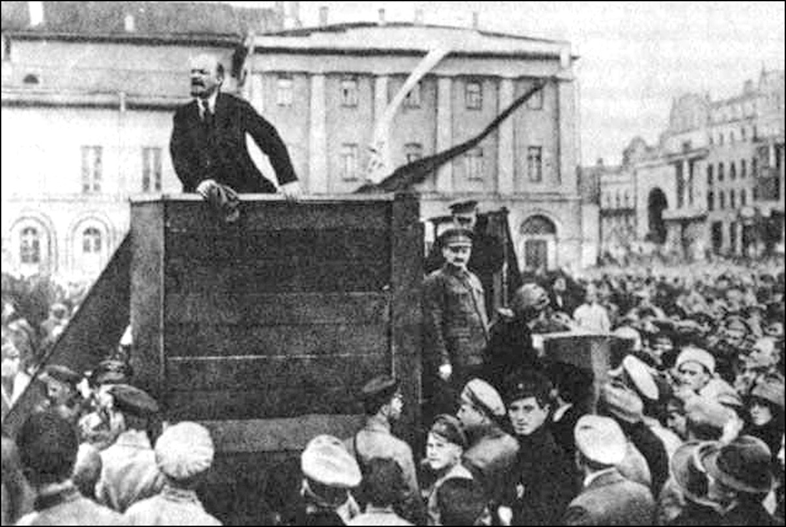
Rusya’nın tarihinde yeni bir sayfa açılıyor ve bu üçüncü Rus devrimi, nihaî aşamada sosyalizmin zaferini getirecektir.
Acil görevlerimizden biri, savaşı bir an önce sona erdirmektir. Mevcut kapitalist sisteme sıkı sıkıya bağlı olan bu savaşı sona erdirebilmek için, doğrudan sermayeye karşı savaşmak gerektiği herkes için açıktır.
İtalya, İngiltere ve Almanya’da gelişmeye başlamış olan dünya işçi sınıfı hareketi, bu hedefimizde bize yardımcı olacaktır.
Adil ve acil bir barış için uluslararası demokrasiye yaptığımız öneri, uluslararası proletarya kitleleri arasında her yerde coşkulu bir cevap bulmaktadır. Proletaryanın güvenini güçlendirmek için, bütün gizli antlaşmalar derhal açıklanmalıdır.
Rusya içinde çok büyük bir köylü kitlesi, kapitalistlere, yeterince oyalandıklarını, bundan böyle işçilerle yan yana yürümek istediklerini söylemektedir. Toprak sahipliğini ortadan kaldıran bir kararname, bize köylülerin güvenini kazandıracaktır. Köylüler, köylülüğün kurtuluşunun işçilerle ittifakta yattığını anlayacaktır. İşçilerin üretim üzerinde gerçek anlamda denetim kurmasını sağlayacağız.
Artık birbirimizle uyum halinde çalışmayı öğrendik. Daha yeni gerçekleştirilmiş olan devrim, bunun kanıtıdır. Biz kitleleri örgütleme gücüne sahibiz ve bu da, her şeyin üstesinden gelip proletaryayı dünya devrimine götürecektir. Şimdi artık, Rusya’da sosyalist proleter devletini kurmaya koyulmalıyız.
Yaşasın sosyalist dünya devrimi!”
Petrograd, 25 Ekim 1917
Mustafa Kemal ATATÜRK
“Bu kutsal amaç uğrunda ulusumla birlikte sonuna kadar çalışacağıma mukaddesatım adına söz veririm!”
Elinizdeki kitabın içeriği ve hedefi, bu ülkede Mustafa Kemal Atatürk üzerine söylenen ve yazılanlara yeni bir şey eklemek değil. Doğal ömrünü tamamlamış bir İmparatorluktan çekirdek bir Cumhuriyet kurulmasına liderlik ederek, genç Cumhuriyetimiz’e çağdaş uygarlık yolunda önemli bir makas değişikliği yaptırmış olan Atatürk üzerine oldukça kapsamlı yerli ve yabancı kaynaklar zaten mevcut. Bununla birlikte, belki de bu kitabın diğerlerinden farklılığı, liderlerin devrim yaratan hitaplarına odaklanması.
Bu bağlamda, Atatürk’ün 24 Nisan 1920’de, Türkiye Büyük Millet Meclisi’nin açılışından bir gün sonra yaptığı konuşma, hem Osmanlı İmparatorluğu’nun içinde bulunduğu dramatik durumun gözler önüne serilmesi, hem de Atatürk’ün bu dramatik tablodan arta kalanlarla ulusun iradesini harmanlayarak bir Kurtuluş Savaşı vereceğini deklare etmesi açısından önemliydi. Meclisin açılması bile başlı başına, Osmanlı İmparatorluğu’nun nöbetinin genç Cumhuriyet’e devredileceğinin bir göstergesiydi. Atatürk, bu tarihî konuşmasında, özetle, ‘Artık yüce Meclisin üzerinde bir güç yoktur’ diyerek Meclisin önemini vurguluyordu. Bu konuşma, aynı zamanda dünya tarihinde Osmanlı İmparatorluğu’nun başrollerinden birini oynadığı oyunun perdesinin kapandığına, halen bir parçası olduğumuz Cumhuriyet’e giden yolun açılacağına da işaret ediyordu.
* * *
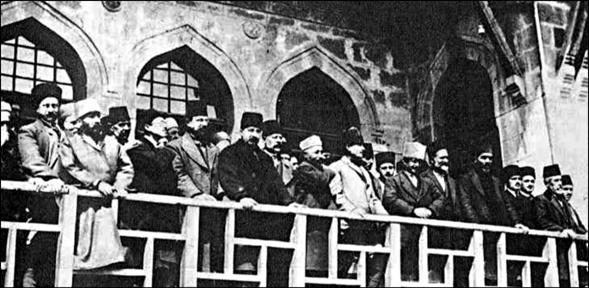
“Sayın Milletvekilleri!
Bugün içinde bulunduğumuz durumu büyük Meclisinizin huzurunda tam olarak ortaya koyabilmek için bazı açıklamalarda bulunmak istiyorum…
Yüce makamlarınızca da bilindiği gibi, Ahmet İzzet Paşa Hükümeti, ulusal temele dayanan adil bir barışı sağlayabilmek umudu ile ateşkes istedi. Bağımsızlığı uğrunda dürüst ve cesur bir biçimde savaşan ulusumuz, 30 Ekim 1918 tarihinde imza edilen ateşkes antlaşması ile silahını elinden bıraktı.
İtilaf donanmaları İstanbul’a girdikten sonra ateşkes antlaşmasının hükümleri bir tarafa bırakıldı; saltanat hakları, hükümetin gururu ve millî onurumuz gün geçtikçe artan bir şiddetle hiçe sayıldı. İtilaf heyetinden gördükleri özendirme ve koruma sayesinde Osmanlı uyruğundaki Müslüman olmayan unsurlar her yerde küstahça saldırılara başladılar.
Meclis-i Mebusan’ın feshi, kuvvetini milletten almayan hükümetlerin sık sık değişmesi ve halkın vicdanından doğan millî birlik uğrundaki çalışmaların üzücü bir şekilde siyasî ihtiraslara kurban edilmesi yüzünden millî varlığımız dünyaya karşı duyurulamadı.
Yabancı kuvvetlerin işgali altında inleyen başkentimizde kan ağlayan bütün onurlu kişiler, millet aydınları, din ve devlet hizmetlerinin önde gelen kişileri, büyük hilafet ve saltanat makamı; millî bağımsızlığımızın bu tehlikeli durumdan kurtarılmasının ancak millî vicdandan doğan birliğin azim ve iradesine bağlı bulunduğuna iman getirdiler. Fakat İstanbul’un baskı ve işgal altında bulunması sebebiyle millî onuru korumaya maddeten olanak kalmamıştır.
İşte bu sırada Anadolu’ya, mülkî ve askerî işlerle görevli olarak ordu müfettişliğine atandım. 16 Mayıs 1919 günü İstanbul’u terk ettim, Samsun’da bu iş için görevlendirilmemi, din ve millete hizmet etmek için en büyük ve kutsal bir şeref olarak kabul ettim.
Millî vicdanın büyük iradesine bağlı olarak, milleti bağımsız ve vatanımızı düşmanlardan arınmış görünceye kadar çalışmak andıyla 16 Mayıs 1919 günü İstanbul’dan ayrıldım. Samsun’da işe başladım. İlk düşüncem, ülkemizde güvenliği kendi olanaklarımızla gerçekleştirebileceğimiz inancı oldu. Aslında Canik Livası’nın (Merkezi Samsun’da olan o zamanki sancağın adı) özel durumu da bu konuda en hızlı biçimde davranılmasını gerekli kılmakta idi. Gerçekten Rumların egemenliğini ve İslam halkının tutsaklığını amaçlayan, Atina ve İstanbul komitaları tarafından yönetilen Pontus Hükümeti, Karadeniz sahili ile kısmen Amasya ve Tokat’ın kuzey ilçelerinde oturan Osmanlı Rumlarının hayallerini körüklüyordu. Alınan önlemler sayesinde başarılı sonuç elde edildi. Fakat bu önlemler ve başarı, yalnız Pontus dolayları ile sınırlı idi. Halbuki her gün haksızlıklarını artıran İtilaf Devletleri’ne millî varlığımızı siyasî olarak kanıtlamak ve fiilî saldırılar karşısında milletin namus ve bağımsızlığını bilfiil korumak çok önemli idi. Aslında doğuda ve batıda, hemen ülkemizin her yanında millet ve vatan haklarını korumak ve kollamak için dernekler kurulmuştu. Bu dernekler, düşmanların esaret boyunduruğuna girmemek amacı ile millî vicdanın azim ve iradesinden doğmuş kuruluşlardı.
Bu sıralarda, bütün belediye başkanlarımıza İstanbul’da İngiliz Muhipleri Cemiyeti kurulduğu ve her yerde derneğe iştirak edilerek İngilizlere yardım edilmesi gerektiği konusunda Said Molla imzası ile bir telgraf geldi. Bu olayla Hükümetin ilgi derecesini ölçmek için Sadrazam Ferit Paşa’dan bilgi istedim. Hiçbir cevap alamadım.
Bilinmeyen kişiler tarafından başlatılan böyle düzensiz ve çeşitli siyasî maceralara yönelik girişimlerin, büyük felaketlere sebep olacağını anlayan halk, Said Molla’nın çağrısını önemsemedi.
Binlerce saldırı ve haksızlıklar altında inleyen ve İzmir faciası olayı karşısında kan ağlayan millet, ağlayarak Hükümetten ve İtilaf Devletleri temsilcilerinden yardım ve hak isterken, pek çok belediye başkanı ve birçok millî hakları koruma derneği, gönderdikleri telgraflarda hakkımda güvenlerini bildirerek benden bu konuda çalışma ve özveri istiyorlardı.
Yaşamımı ve kişiliğimi adadığım soylu ve ezilmiş milletimin bu haklı isteği üzerine artık benim için kutsal görev, millî iradeye uymayı her şeyin üzerinde görmekti.
Bunun üzerine yayınladığım bir genelge ile millete kesin sözümü verdim. İşbu genelgenin son cümlesi şöyle idi: ‘Geçirdiğimiz şu ölüm ve kalım günlerinde, bütün milletçe her tarafta arzu ve coşku ile elde edilmeye azmedilen millî bağımsızlığımız uğrunda tüm varlığımla çalışacağıma güvenmenizi isterim. Bu kutsal amaç uğrunda ulusumla birlikte sonuna kadar çalışacağıma da mukaddesatım adına söz veririm.’
….
Bunun üzerine 19 Mart 1920 tarihinde; hilafet makamının ve saltanatın bağımsızlığının dokunulmazlığını, millî bağımsızlığımızı ve millî sınırlarımız içinde yaşama imkân verecek bir barışı sağlayacak önerileri ayrıntıları ile tespit edip uygulayabilmek için, millet tarafından olağanüstü yetkiye sahip bir Meclisin Ankara’da toplanması gereğini millete duyurmakla ilgili millî görevimizi ve vatan borcumuzu da yerine getirdik.
İstanbul’un işgali, şekil ve niteliği bakımından, Osmanlı Devleti’nin egemenliğini kökünden kaldırmak ve milletin esir alınmasını ve hor görülmesini bir oldu bittiye getirme amacına yönelik bir harekettir. Çünkü İstanbul’da doğrudan doğruya devlet kuvvetlerine el konmuştur. Şöyle ki; önce Meclis-i Mebusan zorla susturulmuştur. Bu durumda yasama kudreti bulunmamaktadır.
İkinci olarak, yürütme kudreti siyasî kısıtlamalara uğramıştır. Kim olursa olsun tüm suçluların yabancı kanunlara göre yargılanacağı ilan edilmiştir. Bütün görüşmeler ve ulaşım, denetim altına alınmış, insanın kendini koruma ilkesi tümüyle kaldırılmış ve saldırganların uyruğu altına alınmıştır. Bundan dolayı, bu aşağılık durumu destekleyen ve kabul etmiş olan Ferit Paşa Hükümeti, bağımsızlığına çok sıkı ve çok içtenlikle bağlı olan milletle arasındaki her türlü bağlantı ve ilişkiyi doğal olarak kaybetmiş ve milleti karşısına alarak, düşmanla işbirliği içinde hareket etmeye başlamıştır.
Üçüncü olarak, devlet şeklinde oluşmuş bir topluluğun anayasasında, yargı yetkisi bağımsızlığının önemi, açıklama istemeyen bir konudur. Yargı yetkisi, milletlerin bağımsızlıklarının birinci şartıdır. Yargı yetkisi bağımsız olmayan bir milletin devlet oluşu kabul edilemez. Bununla birlikte, İstanbul halkından yüzlerce kişinin hiçbir kanunî suçları olmamasına karşılık sanık sayılarak tutuklanmalarına devam edilmesi, İtilaf devletlerinin görüşüne aykırı söz söylenmesi bile suç sayılarak, Ortaçağ davranışları içinde halkımıza karşı saldırıda bulunulması yargı yetkisinin kaldırıldığını göstermektedir.
Bu durumda millet, bugün yüzyıllardan bu yana gerçek bir onur ve yücelikle koruduğu ve savunduğu bağımsızlığını ve var oluşunun devamı için İstanbul olaylarının oluşturduğu hukukî durumu onarmak zorundadır. Bunun için acele gereklidir. Sürüp gidecek olan egemenliğe ara verilmesi konusu, Allah korusun da bir dağılma nedeni olarak düşmanlarımızın düşündüklerini fiilen gerçekleştirmelerine imkân sağlamasın. Bundan dolayı milletimizin her şeyden önce haklarını koruması ve var olmaya yetenekli bir millet olarak, uluslararası hukuk ve yetkilerine saygı gösterilmesini isteyebilmesi, medenî kuruluş ve anayasası ile, henüz yaşamakta olduğunu bütün dünyaya bu kez daha büyük bir kuvvet ve sağlamlılıkla duyurması gereğine inanıyorum. Bunun için de kaldırılan anayasamızın bıraktığı boşluğu derhal doldurmak zorundayız.
İşte, anayasal durum ve hukukumuzun neden olduğu bu gereklilik ve zorunluluk dolayısıyla ve millî egemenliğin her şeyden önce sağlanması amacıyla Büyük Meclisimiz olağanüstü yetki ile toplanmıştır. Seçimlerin tam bir ivedilikle ve sıcak bir ilgi ile yapılması, hukukî durumumuzun bütün milletçe de aynı görüş içinde anlaşıldığını ve kavrandığını göstermektedir. Ayrıca, Büyük Meclisimizin kuruluş şekli ve esasları, millî iradeye içtenlikle ve büyük bir güçle dayandığını göstermektedir.
Meclisimizde oluşan ve beliren millî kudretimiz, hilafet makamını ve saltanatı yabancı baskısından kurtaracak ve Osmanlı Devleti’ni dağılma ve tutsaklıktan kurtarma önlemleri alacaktır. Tam bağımsızlığa sahip, hilafet makamına vicdanî bağlılığı ile övünen, İslam dünyası içinde yaşama anlayışını kendinde gören bir milletin tutsak olamayacağı inancıyla, davranışlarımızı adım adım izleyen bütün medenî dünya ve insanlık sizlere yardımcı olacaktır. (Hararetli alkışlar)
İstanbul faciasını izleyen günlerden şu ana kadar Temsil Heyetimiz milletler arasındaki birlik ve dayanışmayı korudu. Osmanlı kanunlarının yürürlüğünü sağladı. Çalışmalarından alıkonulan devlet gücünün yokluğunu hissettirmemeye çalıştı. Bundan dolayı genel güvenliği korumuş ve savunmuş olmakla görevini gereği gibi yaptığından emindir. Bu dakikadan itibaren, yüzyıllar boyunca onurlu ve yüce bir yaşam sürdükten sonra yok olma uçurumunun kenarında ancak ayakta durabilen Osmanlı milletinin geleceğinin sorumluluğu, sayın Meclisinizin çalışma gücünü artıran bir neden olacaktır.
Davamızın yasalara uygunluğu ve bütün millet ve ulusların, insanlık hak ve hukukundan paylarını almış olduğuna inandığımız yüreklerinin, bizimle birlik ve bize daima yardımcı ve destek olduğuna güvenimiz tamdır. Başarı ümitlerimizin kalplerimizde bir an bile karamsarlığa düşmemesini sağlayacak olan, sonsuz gücümüzdür, özellikle Yüce Allah her zaman bizimledir.”
24 Nisan 1920
K. J. BALFOUR
“Yahudi ırkının dağılmış olduğu tüm diyarlara bir mesaj göndermemiz isabetli olur!”
Birinci Dünya Savaşı sırasında Filistin ve çevresi Osmanlı idaresindeydi. İngiltere’nin desteklediği Arap güçleri Osmanlı hakimiyetine son verene kadar da bu durum sürdü. İngiltere, savaşın sonunda, 1918’de bölgeyi işgal etti. 25 Nisan 1920’de alınan Milletler Cemiyeti kararıyla, İngiltere, bölgenin manda idaresi için yetkilendirildi. Bu geçiş döneminde birtakım sözler verilmişti. Sözgelimi 1916’da Mısır’daki İngiliz idarecisi Sir Henry McMahon, Osmanlı’nın Arap illerinde Araplara bağımsızlık vermeyi vaat etmişti. Aynı zamanda galip devletler Fransa ve İngiltere arasında gizlice imzalanan Sykes-Picot Antlaşması, bölgeyi bu ülkeler arasında ikiye bölüyor; Filistin’de ise uluslararası idare kurulmasını öngörüyordu. İngiltere Dışişleri Bakanı Arthur Balfour (1848- 1930) ise 1917’de, Filistin’de Yahudi halkı için bir vatan kurulması sözünü vermişti.
İşte bugün bile üzerinden duman ve kan eksik olmayan Filistin ve İsrail meselesinin köklerini, Filistin’de Yahudiler için vatan kurulmasını ifade eden 1917 Balfour Deklarasyonu’na kadar götürmek mümkün. Osmanlı Devleti’nin çöküş yıllarında Filistin’le ilgilenmeye başlayan ve İsrail Devleti’nin kurulması yolundaki çalışmalarını hızlandıran İngiltere, çeşitli siyasî sebeplerden dolayı bağımsız bir Yahudi Devleti’nin kurulması planlarını devreye sokmuştu. Balfour, bu planın önde gelen mimarlarından biriydi. Kendisinin bizzat kaleme aldığı ve bir mektup halinde yayınlanan Balfour Deklarasyonu, Yahudi lider Edmund de Rothshild’e gönderilmişti. Ünlü deklarasyon şöyleydi:
Dışişleri Bakanlığı
2 Kasım 1917
Saygıdeğer Lord Rotschild,
Majestelerinin Hükümeti adına kabineye sunulan ve kabul edilen Yahudi Siyonist isteklerini sempati ile karşılayan müteakip deklarasyonu iletmekten memnuniyet duyarım.
“Majestelerinin Hükümeti, Filistin’de Museviler için bir millî yurt kurulmasını uygun karşılamaktadır ve bu hedefin gerçekleştirilmesini kolaylaştırmak için elinden geleni yapacaktır. Filistin’deki mevcut Musevi olmayan toplumların sivil ve dinî haklarına ve başka ülkelerde yaşayan Musevilerin sahip oldukları hak ve politik statülerine zarar verecek hiçbir şeyin yapılmayacağı açıkça anlaşılmalıdır.”
Bu deklarasyonu Siyonist Federasyonu’nun bilgisine sunmanızdan memnuniyet duyacağım.
Saygılarımla
Arthur James Balfour
1902-1906 yılları arasında Muhafazakâr Parti hükümetinin başında bulunan ve savaş zamanındaki koalisyonlarda da Dışişleri Bakanlığı yapan Balfour, 1917 tarihli bu deklarasyonu, politik kariyerinin en önemli hizmeti olarak kabul ettiğini saklamadı. 1906’da İngiliz Siyonizmi’nin lideri Chaim Weizmann’la tanışmış ve o tarihten itibaren de Yahudi ulusal hareketine ilgi duymaya başlamıştı. Bildirisinde, Filistin’deki Yahudi olmayan topluluklarının haklarının güvence altına alınması koşuluyla, söz konusu topraklarda bir Yahudi devleti kurulmasına İngiltere’nin yeşil ışık yakacağına işaret ediyordu. Bildirisi, Milletler Cemiyeti tarafından Filistin’e uygulanan mandanın da dayanağını oluşturacaktı.
Filistin üzerindeki İngiliz Mandası, Milletler Cemiyeti tarafından 24 Temmuz 1922 tarihinde tanındı. Akabinde Filistin’e yoğun bir Yahudi göçü başladı. I. Dünya Savaşı sonunda 70 bin civarında olan Yahudi nüfusu, manda idaresini takip eden 10 yıl içerisinde yaklaşık 110 bine çıktı. Bu sayı, bölgedeki toplam nüfusun % 17’sine tekabül ediyordu. Oysa 1923’te Yahudiler tüm nüfusun sadece % 11’ini oluşturuyorlardı. İngiliz yönetimi de Yahudi göçünü destekliyordu. Hitler’in Almanya’da Yahudilere karşı uyguladığı terör, bölgeye yönelik göçü hızlandırdı. Sonuçta Filistin’i mandası altında bulunduran İngiltere ve ardından ABD’nin de desteğiyle İkinci Dünya Savaşı sonrasında, 14 Mayıs 1948’de İsrail devleti kuruldu.
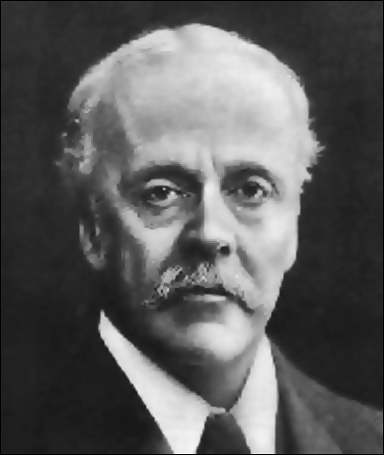
Şüphesiz ki tüm bu süreçte Balfour’un katkısı inkâr edilemezdi. Öyle ki, 1922’de Lord Islington, Britanya’nın mandayı kabul etmesine şiddetle tepki gösterdiğinde, Balfour bir kez daha sahneye çıkıyor, Lordlar Kamarası’nda yaptığı şu tarihî konuşmayla bir kez daha Yahudilere olan desteğini deklare ediyor ve İsrail devletine giden yolun önünü biraz daha açıyordu.
* * *
“Aziz dostum (Manda’ya itiraz eden Lord Islington’ı kastediyor) konuşmasında Yahudiler aleyhine hiçbir önyargı beslemediğini söyledi. Ben de kesinlikle kendisine inanıyorum. Ben de aynı şekilde düşündüğümü, yani kendilerine karşı hiçbir önyargım olmadığını söyleyebilirim. Ama konumlarının ve tarihlerinin, dünya dini ve dünya siyasetiyle bağlantılarının bir eşi benzeri daha yok. İnsanlık tarihinin başka hiçbir alanında da buna benzer ya da benzer olmaya yaklaşan bir şey yok. Karşımızda, başlangıçta küçük bir ülkede, en iyi ihtimalle Galler ya da Belçika büyüklüğünde bir toprakta, ya da her durumda bunlara yakın büyüklükte bir ülkede yaşayan küçük bir ırk var. Tarihlerinin hiçbir anında, ‘maddî güç’ olarak isimlendirebileceğimiz bir konuma gelememişler. Bazen büyük doğu krallıkları arasında kalıp ezilmiş ya da sürgün edilip dört bir yana dağıtılmışlar. Sonunda da, bu ülkeden tümüyle kovularak dünyanın her yanına dağılmış ama yine de, başka hiçbir yerde benzerine şahit olamadığımız biçimde dinsel ve etnik geleneklerini muhafaza etmişler.
Bu, tek başına yeterince önemli bir şeydir ama bir de uzun yüzyıllar boyunca bunlara nasıl davranıldığını düşünün. Bunu düşünmek hoş değil, ama unutmak da mümkün değil. Dünyanın bazı yerlerinde, benim bu konuşmayı yaptığım saate ve dakikaya kadar uzanan yüzyıllar boyunca gördükleri muameleyi; nasıl zulme ve baskılara uğradıklarını; bütün bir Avrupa kültürünün, Avrupa’daki bütün bir dinsel örgütlenmenin, bu ırka karşı işlenen büyük suçlarda zaman zaman sorumluluğu olup olmadığını düşünün. Bu ırkın bazı mensuplarının, kendilerine bu kadar çok kötü niyet beslenmesi için fırsat sağlamış olabileceği fikrini kesinlikle anlıyorum, hiç kuşkusuz sağlamışlardır da. Bu şekilde davranılan insanlar başka ne yapardı, onu da bilemiyorum. Eğer bu konu üzerinde duracaksanız, onların dünyadaki entelektüel, sanatsal, felsefî ve bilimsel gelişmelerde oynadığı rolü de unutmayın. Ekonomik alandaki enerjilerinden bahsetmeye gerek bile yok. Çünkü zaten Hıristiyanların dikkatini hep bu özellikleriyle çekmişlerdir.
Saygıdeğer Lordlar! Sizden yaptıklarının diğer yönünü de düşünmenizi istiyorum. Elini vicdanına koyarak konuşan hiç kimse –ve inanın yapabileceğimden çok daha ölçülü ifade ediyorum bunu- bilimsel, entelektüel ve sanatsal ilerleme sandalında onların tüm güçleriyle küreklere asıldığını ve bugün de halen kürek çekmekte olduklarını inkâr edemez. Onları her üniversitede, her öğrenim merkezinde bulabilirsiniz. Zulüm gördükleri zamanlarda da –ki her durumda bir bölümü de kilise eliyle zulüm görmekteydi- filozofları, büyük kilise ile birlikte kendi dinî inanışlarına paralel düşünceler geliştirmekteydi. Ortaçağ’da bu nasıl olmuşsa, daha eski çağlarda nasıl olmuşsa, bugün de öyle oluyor. Bütün bu anlattıklarıma karşın, aramızda Yahudilerin durumundan memnun olan kimse var mı? Onlar, ırklarının bu olağanüstü direnme gücü sayesinde bu sürekliliği korumayı başarmış, üstelik bunu bir Yahudi Yurdu’na sahip olmadan yapmışlardır.
Sonuç ne olmuştur? Kamu yaşantısına karıştıkları her uygarlıkta, birer ‘asalak’ olarak nitelendirilmişler. Kusura bakmayın ama zaman zaman ‘çok yararlı birer asalak’ olduklarını söyleme cüretini göstereceğim. Ama yine de siz saygıdeğer lordlar, yaptığı bütün hataların farkında olmayan Hıristiyan âleminin, bu ırka, baskıdan uzak olacakları bir yurtta, başkalarını incitmeden kendi kültürlerini kurup kuramayacaklarını göstermeleri için bir şans tanımasını düşünmüyorsunuz. Oysa şu kadarını söylemek yeterli: Eğer yapabilirsek yapacağız. Ve eğer yapabilirsek, acaba Yahudi ırkını yurttaşları oldukları ülkelerde dostça ve etkili bir şekilde bağrımıza basmakla, uygarlığımız üzerindeki eski bir lekeyi temizleme yolunda somut bir adım atmış olmaz mıyız? O zaman, onlara diğer bütün ulusların elinde bulundurduğu bir şeyi vermiş olacağız; tümüyle kendilerine özgü kültürü ve gelenekleri geliştirebilecekleri bir yer, yerel bir yaşama ortamı.
Filistin Mandası’yla ilgili bu planı, olabilecek en maddîyatçı ekonomik bakış açısından savunabilirim. Savunmayı denedim de. Umarım başarısız olmamışımdır. Üstelik bu bakış açısından savunulabilir bir şeydir bu plan. Mevcut nüfusu temel alan bakış açısından savunmayı da denedim. Umarım onların zenginliğinin de sıkı sıkıya Siyonizm’in başarısına bağlı olduğunu tatmin edici bir şekilde gösterdim. Ama bu iki öneriyi savunabilmek için elimden geleni yaptıktan sonra, bunlardan başka ve bunların ötesinde bir büyük ideal bulunduğunu kesin bir şekilde ifade etmek için yeteneğimi sonuna kadar kullanmadan yerime oturursam, düşüncelerimi siz saygıdeğer lordlara yeterince anlatamamış olduğuma inanacağım. İnanıyorum ki, benim gibi düşünenlerin de böyle büyük bir ideali ve onu gerçekleştirecek güçleri vardır.
Bu yolda başarısız da olunabilir. Bunun bir macera olduğunu inkâr etmiyorum. Hiç mi maceraya atılmadık? Hiç mi yeni deneylere kalkışmadık? Siz saygıdeğer lordların, hayal gücüne ulaşmayan sığlıklarda kalmayacağını, bu macera ile bu deneyi haklı kılan bir dava varsa, bunu göreceğinizi umuyorum. Hiç kuşku yok ki, Yahudi ırkının dağılmış olduğu tüm diyarlara bir mesaj göndermemiz isabetli olur. Bu mesajda, Hıristiyan âleminin onların inancına kayıtsız olmadığı; dünyanın büyük dinlerine, hepsinden çok da saygıdeğer Lordlar Kamarası’ndakilerin çoğunun inanmış olduğu dine verdikleri hizmeti takdir ettiği anlatılmalı ve koşullar gereği bugüne kadar ancak onların dilini bilmeyen, onların ırkına mensup olmayan ülkelerde meyve verebilmiş o büyük yeteneklerini İngiliz yönetimi altında, barış ve huzur içinde geliştirme fırsatı bulmaları için elimizden geleni yapma arzusunda olduğumuz ifade edilmelidir. İşte benim gerçekleştiğini görmek istediğim ideal de, savunmaya çalıştığım politikanın temelindeki amaç da, beni en derinden etkileyen durum da budur.”
Temmuz 1922
Muhammet İKBAL
“Kararlarınızı yönetmeyi değil; fakat bana göre kararlarınızın genel karakterini belirleyecek olan temel prensibi tüm berraklığıyla şuurlarınıza, getirebilmeyi umuyorum acizane.”
Muhammet İkbal… Hindistan’ın yetiştirdiği ünlü bir Müslüman şair. Aynı zamanda bir filozof ve mütefekkir. Ünü, ülkesinde olduğu kadar dışarıda da yayılmış olan Muhammet İkbal’e, İngilizler ‘Sir’ unvanını vermişlerdi. İkbal çocukluğunda ve gençliğinde iyi bir eğitim almış, üniversite öğrenciliği sırasında gelecek vaat eden bir şair olarak görülmüştü. 1905 yılında Cambridge Üniversitesi’nde öğrenim görmek üzere İngiltere’ye gitmiş, bu tarihten itibaren 1908’e kadar üç yıl boyunca Batı medeniyetini yakından inceleme fırsatı bulmuştu. Avrupa’nın bilim ve teknikteki ilerlemelerine hayran kalmış, fakat maddî bakımdan güçlü bu medeniyetin manevî yönden zayıf oluşunu da dikkatinden kaçırmamıştı. Kişiler ve aynı zamanda milletlerarası amansız bir rekabete dayanan bu medeniyetin, mutlak ahlakî değerlere uzak olduğunu bir şiirinde şöyle ifade ediyordu:
Ey Batılı insan, Allah’ın bu dünyası dükkân değildir,
Değer verdiğiniz şeylerin hiçbiri gerçek değildir.
Batı’nın ahlakı, İkbal’i hayal kırıklığına uğratsa da çalışkan ve azimli oluşu onu çok etkilemişti. İkbal’e göre İslam’la barışık modern bir bilim ve teknoloji anlayışıyla ahlaken de yüksek, güçlü bir medeniyetin kurulması mümkündü. Başka bir deyişle Muhammet İkbal, Batı medeniyetine, onda eksik olan manevî gücün eklenmesiyle bir senteze ulaşılabileceğine inanıyordu. Bu düşüncelerle ve hem batınî, hem de zahirî ilimlerde en üst seviyeye gelmiş bir âlim olarak ülkesinin siyasetine de katılmış, hayallerini süsleyen bir Müslüman devlet fikriyle yaşamıştı. İkbal’e göre siyasetin anlamı ‘çalışmak, izzet ve şerefe davet etmekti.’ Bu amaçla İngiltere’den döndükten sonra İslam dünyasının meseleleri ile yakından ilgilenmiş ve ülkesi Hindistan’ın geleceği üzerine kafa yormuştu. Esasen Müslümanların dertleri ile dertlenen bir yapısı vardı. Bu yönüyle ve şiirlerinde işlediği konular itibariyle millî şairimiz Mehmet Akif Ersoy’la da ortak yanları vardır Muhammet İkbal’in.
Muhammet İkbal, 1930 yılında Tüm Hindistan Müslümanlar Birliği’nin kongresinde yaptığı konuşmada, Müslümanların Hindistan’dan ayrılarak yeni bir devlet meydana getirmeleri tasarısını ortaya atmıştı. İkbal bu konuşmada Hindistan’ın bölünmesinin din, ırk ve dil esasına göre yapılmasını istiyordu. Şiirlerinde ve başka ortamlarda yaptığı konuşmalarda da bu düşüncesine oldukça fazla yer vermiştir. 1930’da bir kongre konuşmasında ileriye sürdüğü bu fikir, Hindistan’da yeni bir siyasî süreci harekete geçirmiştir. İkbal’in bu yeni devlet fikri, önceleri bir şairin hayali olarak görülmüş, fakat zaman içinde samimiyeti anlaşılmış ve ölümünden yıllar sonra, 1947’de Pakistan’ın kurulmasıyla gerçeğe dönüşmüştür.
* * *
“Hiçbir partiye liderlik yapmıyorum, hiçbir lidere de bağlı değilim. Hayatımın önemli bir bölümünü İslam medeniyetini, tarihini ve edebiyatını incelemeye adadım. İslam hukukunu ve idaresini özenle araştırdım. İslam’ın ruhuyla kurduğum bu sürekli bağ, zamanla kendini açtıkça onun bir dünya hakikati olarak önemini iyice kavramamı sağladı. Bu iç sezişin ışığıyla -kıymetini siz takdir edin- tüm Hintli Müslümanların, İslam’ın ruhuna samimiyetle bağlı kalmaya kararlı olduklarını düşünerek diyorum ki: Kararlarınızı yönetmeyi değil; fakat bana göre kararlarınızın genel karakterini belirleyecek olan temel prensibi tüm berraklığıyla şuurlarınıza getirebilmeyi umuyorum acizane.
Hintli Müslümanların tarihinde İslam’ı toplumu şekillendiren ana faktör olarak görüyoruz. İslam’ı etik bir ideal ve bunun yanında belli birtakım düzenlemelerin olduğu -bu ifadeyle bir hukuk sistemiyle idare edilen sosyal yapıyı kastediyorum- bir din olarak kabul ediyoruz. Kişileri ve grupları vefa hisleriyle bir araya getirerek, onların kendilerine özgü ahlakî bir şuurlanma ile olgun insanlara dönüşmelerini sağlamıştır. Hatta Hindistan’ın, belki de İslam’ın bir ümmet oluşturma fikrinin en iyi şekilde uygulamaya konduğu ülke olduğunu söylemek abartı olmaz. Diğer yerlerde olduğu gibi Hindistan’da da İslam’ın, toplumun temel yapı taşlarından biri olarak, kendine özgü etik bir ideal etrafında oluşan kültüre dayalı olduğunu söyleyebiliriz. Demek istediğim; Hindistan Müslüman toplumu, dikkate değer bir içsel bütünlük ile ve İslamî kültürle bağdaşık kanun ve kurumların sağladığı etki ile bugünkü durumuna yükselmiştir.
Fakat şimdilerde her nasılsa Avrupa politik düşüncesi tarafından ileri sürülen idealler, Hindistan ve dışında, mevcut Müslüman nesillerin görüş açılarını hızla değiştirmektedir. Genç insanlarımız, Avrupa’daki fikrî gelişmelerin evrimini belirleyen gerçekleri incelemeden ve hiçbir kritiğe tabi tutmadan bu fikirlerden ilham alarak kendi ülkelerinde de bu idealleri yaşatma çabası içerisindeler.
Avrupa’da Hıristiyanlık, tamamıyla manastır hayatına özgü bir şeklin, giderek kilise örgütlenmesine dönüşmesi olarak anlaşılmıştır. Luther’in isyanı, işte bu kilise örgütlenmesine karşı olmuştur; sekülerizme dayanan bir düşünce sistemine karşı değil. Zaten bunun, Hıristiyanlıkla bağdaşmayacağı apaçık ortadadır. Luther kilise örgütlenmesine baş kaldırırken tamamen haklıydı, fakat kanımca isyanın, Avrupa’ya özgü bir hal olarak, nihaî planda İsa’nın evrensel etiğinin ulusal bazda meydana gelecek bölünmelerle daha dar kalıplarla yer değiştireceği anlamına geldiğini fark edemedi.
Böylece Avrupa’da Luther ve Rousseau gibilerinin başlattığı entelektüel hareketin neticesi; bir bütünün, birbirine karşıt ve uyumlu olmayan pek çok parçaya bölünmesi olmuştur. Beşeriyete ulusal bir görüş açısıyla yaklaşılır olmuş, bu da çeşitli hükümet sistemlerinin kendini milliyetçi çizgilerde göstermesini ve o millete ait belirli bir toprak parçasının, politik istikrarın tek prensibi olduğu inancını doğurmuştur.
Milliyetçi görüş ve değerler, İsa’nın evrensel etiğinin yerini almıştır. Sonuç olarak Avrupa’da Hıristiyanlık, kişinin sadece özel yaşamını ilgilendiren, dünyevî olanla hiçbir bağının kalmadığı bir noktaya sürüklenmiştir. İslamiyet, insanın bütünlüğünü madde ve mana olarak ayırıp bunları birbiriyle uzlaşmaz bir şekilde çatallandırmaz. İslam’da Allah ve kâinat, madde ve mana birbiriyle iç içedir. İnsan manevî bağlamda kutsallığından sıyrılmış, profan2 bir dünyanın vatandaşı değildir. İslam’a göre madde, zaman ve mekân içerisinde kendi farkına varan manadır. İslam dünyasında Luther gibi bir fenomenin olması imkânsızdır. Çünkü Ortaçağ’daki Hıristiyanlığın kilise örgütüne benzer, adeta bir yok edici davet eden bir örgütlenme biçimi görülmez İslam’da, esasları açıklanmış evrensel bir akidemiz vardır. Milliyetçilik fikrinin İslam dünyasındaki mukadderatının ne olacağını bilmiyorum. İslamiyet’in, bu fikri daha önce de pek çok ve farklı beyanlarda olduğu gibi, dönüştürüp asimile mi edeceği, yoksa milliyetçilik fikrinin etkisiyle kendi yapısında radikal bir transformasyona izin mi vereceği, tahmini zor bir durum.
Şu anda milliyetçilik fikri, Müslümanların görüşlerinde kendine yer açmaya çalışıyor. Dolayısıyla İslamiyet’in her şeyi kapsayıcı yönüne karşı duruyor. Umarım beni oldukça akademik bu konuşmamdan dolayı bağışlarsınız.
Tüm Hindistan Müslümanlar Birliği’nin bu toplantısında hitap etmek üzere, İslam’ın yaşayan bir güç olarak insanların ufuklarını, coğrafî sınırların ötesinde özgürleştireceğinden ümidini kesmemiş; dinin, fertlerin olduğu kadar devletlerin hayatında da en yüksek öneme sahip güç olduğuna inanan; ve son olarak İslam’ın kaderden etkileneceğine değil, bizzat kendisinin bir kader olduğuna iman etmiş bir adamı davet ettiniz.
Öyleyse diyorum ki… Hindistan’ın birliği, restleşmeyle değil; farklılıkların birbiriyle ahengi ve işbirliğinde aranmalıdır. Hindistan birliği, bu şekilde bir kez keşfedildi mi, Hindistan ve Asya’nın kaderinin aslında buna dayandığı daha iyi anlaşılacaktır.
Şahsen Pencap, kuzeybatı sınır eyaleti, Sind ve Belucistan’da birleştirilmiş durumda ayrı bir devlet olduğunu görmek isterim. Ya Britanya Krallığı’nın içinde özerk bir yönetim ya da Britanya İmparatorluğu’na dahil olmayan bir yönetim şekliyle birleştirilmiş Kuzeybatı Hindistan Müslümanları devletinin kurulması, bana bu bölgedeki Müslümanların kaderiymiş gibi görünüyor.3
Nehru’nun heyetinin önüne bu teklif götürüldü. Ama eğer bu devlet kurulursa yönetilmesi güç bir devlet olacağı gerekçesiyle reddettiler teklifi. Bölgenin şartları düşünüldüğünde, bunda haklılık payı var; nüfus yönünden bakıldığında ise bu teklifle tasarlanan devletin nüfusu, mevcut bazı Hindistan eyaletlerininkinden çok daha az olacak. Ambala bölgesi ve belki gayrimüslimlerin hakim olduğu bazı bölgeler dışarıda bırakılırsa bu devletin nüfusu daha az yoğunlukta olacak. Müslümanlar ağırlıklı olarak bulunacağı için gayrimüslim azınlıkların etkili bir şekilde korunması da sağlanacak.
Bu fikir, Hinduları ve İngilizleri endişelendirmemelidir. Hindistan, dünyanın en büyük Müslüman ülkesidir. Bu ülkede en büyük kültürel güç olarak İslam’ın hayatı, büyük oranda belirli bir toprak parçası üzerinde merkezîleşmesine bağlıdır. Hint Müslümanlarının bu en büyük bölümünün merkezîleşmemesi, şimdiye kadar asker ve polis gücüyle İngilizlerden gelen haksız muamelelere karşı durmayarak, ülkede İngiliz yönetimini mümkün kılmıştır. Bundan sonra nihayet Hindistan ve Asya’nın problemleri çözülecektir. Bu merkezîleşmeyle insanların sorumluluk hisleri yoğunlaşacak, vatanseverlik duyguları da derinleşecektir. O zaman Kuzeybatı Hindistan Müslümanları, Hindistan’ın politik bünyesi içinde tüm gelişim fırsatlarına sahip olarak yabancı bir işgale karşı Hindistan’ın en iyi savunucuları olacaklardır.
Bu yüzden Hindistan’ın ve İslam’ın, mevcut şartlardan en yüksek kazançlarla çıkması için kuzeybatıda, Hintli Müslümanları birleştirmiş bir devletin kurulmasını istiyorum. Hindistan için bu, iç denge ve gücün sağlanmasıyla oluşacak güvenlik ve barış hali demektir. İslam için ise Arap emperyalizminin; kurumlarda, eğitimde ve kültürde baskın olduğu damgasından kendini kurtarmak için iyi bir fırsat ve kendi aslî manasıyla tekrar irtibatı sağlayarak, bu özle zamanımızda yeni bir buluşmayı meydana getirmek demektir.”
1930
Adolf HİTLER
“Asla bir korkak olmadım!”
1918’de Çekoslovakya Cumhuriyeti ilan edildiğinde, ülke sınırları içerisinde, küçümsenemeyecek sayıda, Almanca konuşan bir topluluk vardı. Bu topluluğunun yaşadığı bölge Südetler (Sudetenland) olarak biliniyordu. Almanca konuşan Südetler’deki azınlık, Adolf Hitler’in, ‘Ein Volk - Ein Reich - Ein Führer’ (Tek Millet-Tek Devlet-Tek Lider) şeklindeki rüyasını gerçekleştirmek için mükemmel bir bahane oldu.
Hitler 1938 Eylül’ünde tüm dikkatini, 3 milyon kadar Almanın yaşadığı bu bölgeye çevirmişti. Özetle, Südetler bölgesinin Almanya’ya devredilmesi gerektiğini, bu gerçekleşirse, Avrupa’da başka bir toprak talebi olmayacağını söylüyordu. Südetler bölgesindeki Sudeten Deutsche Partei’yi (Südet Alman Partisi) ve gizlice kurdurduğu ekipleri manipüle ederek bölgeyi karıştırdı. Südet Almanları, Hitler’in iddialı ve kucaklayıcı söylemlerinden etkilenerek protesto gösterilerine giriştiler. Çek polisi olaylara müdahale etmek zorunda kaldı. Hitler bu gelişmelerden istifade etmekte gecikmedi ve müdahale esnasında 300 Almanın öldürüldüğünü iddia etti. İddiasının aslı astarı yoktu ama Hitler, müdahale için bahane arıyordu.
22 Eylül 1938’de İngiltere Başbakanı Neville Chamberlain, Hitler ile görüşmek üzere Münih’e gitti. Bu görüşmede Hitler, Chamberlain’a bir ültimatom vererek, Südetler’in Almanya’ya devredilmesini istedi. Fakat Chamberlain, Çekoslovakya’nın kurucularından Dr. Beneş’i bu çözüme ikna edemedi. Bu kez Almanya doğrudan Çeklere bir ültimatom vererek, sorunun 28 Eylül gecesine kadar çözülmesini istedi ve birliklerini Alman-Çek sınırına yığmaya başladı.
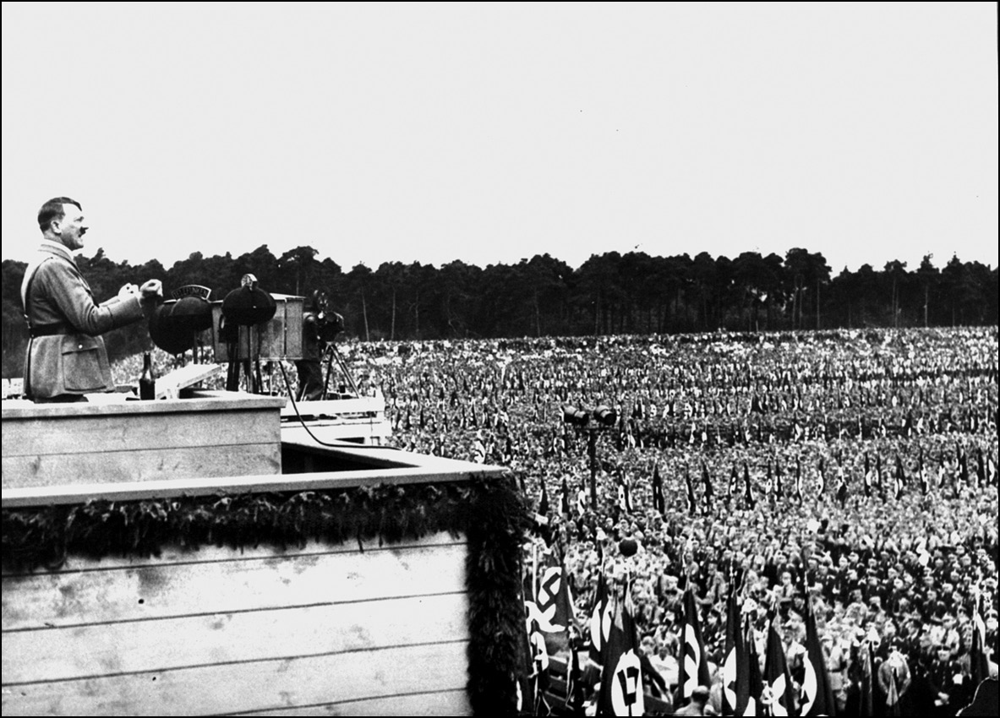
Kaynak: Associated Press
Çek ordusu ise kendi ülkesini savunmaya hazırlanıyordu. Bu arada Fransız birlikleri de alarma geçti. Savaş kaçınılmaz görünüyordu. Bu durum Fransa, İngiltere ve Çekoslovakya arasında hızlı bir diplomatik trafiğe sebep oldu. Chamberlain, Hitler’den bir kez daha görüşmeye yanaşmasını istedi. İşgali 48 saat erteleyen Hitler, konuyu masaya yatırmak için İngiltere ve Fransa Başbakanları ile İtalyan diktatörü Mussolini’yi Münih’e çağırdı. Büyük güçler arasındaki sinir savaşının mezesi olan Çekoslovakya’dan ise hiç kimse davet edilmemişti!
29 Eylül 1938’de imzalanan Münih Antlaşması ile Hitler’in isteklerine boyun eğildi. Südetler, Almanya’nın olmuştu. Bir gün sonra ülkesine dönen Chamberlain, coşkulu bir kalabalık tarafından karşılandı. Varılan antlaşmayı ‘zamanımızın barışı’ olarak lanse eden Chamberlain’a göre, Avrupa, bir savaşın eşiğinden dönmüştü! Chamberlain’in 1930’larda Hitler’e karşı izlediği Yatıştırma Politikası (Appeasement Policy) çok eleştiri alsa da işin aslı şuydu: Ne İngiltere’nin ne de Fransa’nın, giderek kabına sığmayan ve Versailles Antlaşması’nın sınırlamalarından kurtulmak için bahane arayan Almanya’nın karşısına çıkacak durumu vardı!
Avrupa rahat bir nefes aldığını düşünüyordu. Zira Hitler, başka bir toprak meselesini gündeme getirmeyeceğine söz vermişti. Ama bir sürpriz yaptı ve Münih Antlaşması’nı ‘değersiz bir paçavra’ diye niteleyerek 1 Eylül 1939’da Polonya’yı işgal etti. Fransa ve İngiltere iki gün sonra Almanya’ya savaş ilan etti. İkinci Dünya Savaşı başlamış, Hitler dünyayı faka bastırmıştı!
Başlattığı savaşla 27 milyon asker ve 25 milyon sivilin ölümüne, tam 4 trilyon doların savaşlarda harcanmasına sebep olan bu çılgın diktatör, 26 Eylül 1938’de Berlin’deki Sportspalast’da yaptığı ateşli konuşmada gözünü kan bürüdüğünü net bir şekilde dile getiriyor ve Alman halkına topyekûn bir savaşa hazırlanmaları gerektiğini ima ediyordu. Dönemin politikacılarının bu cüretkâr konuşmayı yeteri kadar iyi analiz edememesi, tüm dünyaya oldukça pahalıya patlayacaktı!
Hitler işte o tarihî konuşmada, gelecek kanlı yılların haberini veriyordu.
* * *
“Şimdi çözülmesi gereken ve çözülecek olan son sorunla karşı karşıyayız. Bu Avrupa’dan yapacağım, asla vazgeçmeyeceğim ve de Tanrı’nın izniyle yerine getirilmesini temin edeceğim son toprak talebi olacak. Bu sorunun geçmişi şudur: 1918’de ‘halkların kendi kaderlerini tayin hakkı’ ikliminde Orta Avrupa, devlet adamı olarak isimlendirilen bazı aptallar tarafından parçalanarak yeniden şekillendirildi. Bu halkların kökenleri, ulusal beklentileri, ekonomik gereksinimleri göz önünde bulundurulmadan, Orta Avrupa parçalandı ve zorla yeni devletler türetildi. İşte Çekoslovakya da varlığını bu sürece borçlu.
Bu Çek devleti, hayatına tek bir yalanla başladı. Bu yalanın mucidi Beneş isimli bir adamdı. Bu Bay Beneş, Versailles Anlaşması esnasında ortaya çıkarak ilk etapta dinleyicilerini bir Çekoslovak ulusu olduğuna inandırdı. Kendi yurttaşlarına daha geniş topraklar kazandırmak ve kendini haklı çıkarmak için bu yalanı icat etmek zorunda kalmıştı. Sonuç olarak bu Bay Beneş sayesinde Çekler, Slovakya’yı işgal etti. Daha sonra bu ülke yeterli görülmediği için olsa gerek, self-determinasyon haklarını ihlal ederek ve kendi kaderlerini belirleme iradelerini göz ardı ederek, üç buçuk milyon Almanı da kendi topraklarına dahil ettiler. Daha sonra bu bile yeterli olmadığından olsa gerek, bir milyondan fazla Macarı, ardından Karpat Ruslarını ve son olarak da yüz binlerce Polonyalıyı topraklarına dahil etmek zorunda kaldılar. İşte hakları çiğnenmiş ulusların tartışılmaz iradelerine karşı gelinerek, self-determinasyon haklarının bariz bir şekilde çiğnenmesiyle oluşturulmuş bu devlet, daha sonradan Çekoslovakya olarak isimlendirilen devlettir.
Şimdi size burada seslenirken, doğal olarak tüm bu baskı altına alınmış halkların kaderlerine yönelik bir sempati de besliyorum. Slovaklara, Polonyalılara, Macarlara ve Ukraynalılara karşı sempati besliyorum. Bununla birlikte doğal olarak sadece Alman vatandaşlarım ve onların kaderi adına konuşuyorum.
Bay Beneş o zaman bir dolu yalanla bu ülkeyi kurduğunda, sağduyulu devlet adamları gibi, İsviçre modelinden hareketle onu kantonlara ayıracağına dair açık bir söz vermişti. Ama hepimiz bu kanton sistemi sorununu nasıl çözdüğünü biliyoruz: Bir terör rejimi başlatarak!
Almanlar haklarının ihlal edilmesini protesto etmeye başladıklarında, üzerlerine ateş açıldı ve o zamandan bu yana bir imha savaşı devam ediyor. Çekoslovakya’daki bu ‘barışçı’ kalkınma yılları boyunca, neredeyse 600 bin Alman, Çekoslovakya’yı terk etmek zorunda kaldı. Bunun çok basit bir sebebi vardı; aksi takdirde açlıktan öleceklerdi!
1918’den bu yana yaşanan tüm olaylar, bir şeyi net olarak gösteriyor: Bay Beneş, Alman unsurunu yavaşça ortadan kaldırmaya kararlı. Ve bir dereceye kadar başarılı da oldu. Sayısız insana eşsiz acılar tattırdı. Milyonlarca insanı korkutmayı ve tedirgin etmeyi başardı. Sürekli bir terör rejimiyle, milyonlarca insanı sindirmeyi başarırken, bu esnada bu devletin ‘uluslararası’ hedefleri de netleşti. Artık, gerekirse, bu ülkenin Almanya’ya karşı kullanılabileceği gerçeğini saklamaya da kalkışmadılar.
Fransız Havacılık Bakanı Pierre Cot, ‘Bu devlete ihtiyacımız var. Çünkü bu ülkenin bir üs olarak kullanılmasıyla, Alman ekonomisi, Alman sanayisi bombardımanla daha rahat tahrip edilebilir’ diyerek, gayet cesur bir şekilde bu arzuyu ifade etti. Şimdi Bolşevizm de bu ülkeyi bir ön cephe olarak kullanıyor. Bolşevizm ile temasımız olmadı; Bolşevizm, Orta Avrupa’ya girmek için bu ülkeyi kullanıyor.
Ve şimdi de konunun en ahlaksız kısmına gelelim. Bir azınlık tarafından yönetilen bu ülke, diğer ülkeleri de, bir gün kendi kardeşleri üzerine ateş açmalarını gerektirecek bir politika üzerinde işbirliği yapmaları için zorluyor. Bay Beneş, Almanlara, ‘Eğer Almanya’ya savaş açarsam, Almanlara ateş açmak göreviniz. Eğer bunu yapmak istemezseniz, ihanet etmiş olursunuz ve sizi vurdururum’ diyor. Aynı şeyi Macarlar ve Polonyalılardan da talep ediyor. Slovaklardan, Slovak halkının çıkarına olmayacak bir davayı savunmalarını istiyor. Slovak halkı sadece barış istiyor, macera değil. Yine de Bay Beneş, bu insanların ihanet etmesini bir şekilde sağlıyor. Ya kendi halklarına ihanet edecekler, kendi halklarına ateş etmeye hazırlanacaklar ya da Bay Beneş onlara ‘Vatana ihanetten suçlusunuz, bundan dolayı sizi idam ettireceğim’ diyecek. Sadece kokuşmuş, şeytanî ve suçlu bir rejim bunu talep ediyor diye, yabancı kökenlileri muhtemelen kendi halklarına ateş açmaya zorlamaktan daha utanç verici bir şey olabilir mi? Sizi temin ederim ki, Avusturya’yı işgal ettiğimizde, ilk emrim, hiçbir Çek’in Alman ordusunda askerlik yapmaya zorlanmaması, hatta buna izin verilmemesiydi. Onları kendi vicdanları ile mücadele etmek zorunda bırakmadım.
Yine de Bay Beneş’e muhalefet eden herkesin, ekonomik olarak ipi çekiliyor. Dünyadaki demokrasi havarileri salt yalan söyleyerek bunu gizleyemezler. Bay Beneş’in ülkesindeki koşullar, diğer ulus mensupları söz konusu olduğunda korkunç durumda. Sadece Almanlar adına konuşuyorum. Tüm Alman toplulukları içerisinde en yüksek ölüm oranı, en düşük doğum oranı ve en şok edici işsizlik oranı Südet Almanlarında. Bu daha ne kadar devam edecek? Yirmi yıldır Çekoslovakya’daki Almanlar ve Reich Cumhuriyeti’ndeki Alman halkı, sadece güçsüz oldukları ve demokrasi dünyasında bu işkencelere karşı kendilerini savunmakta aciz kaldıkları için bu duruma seyirci kalmak zorunda bırakıldılar…
Bay Chamberlain’a, uygun gördüğümüz tek çözümü münasip bir dille anlattım. Dünyadaki en doğal çözüm bu. Değişik ulus topluluklarının bu Bay Beneş ile birlikte olmayı arzulamadıklarını biliyorum. Bununla birlikte sadece Almanların sözcüsüyüm ve sadece Almanlar için konuşuyorum. Prag’daki bu çılgın, bu üç buçuk Almana kolaylıkla zulmedeceğini düşünebilirken, bir kenarda hareketsizce durup bu durumu daha fazla seyretme arzusunda olmadığımı açık bir şekilde dile getirdim. Ayrıca Alman sabrının tükendiğini de şüpheye mahal bırakmayacak şekilde ortaya koydum. Art arda gelen provokasyonlar karşısında hoşgörülü ve sabırlı olmak Almanların karakteristik özelliği olmasına rağmen, sabrın tükendiği anın da geldiğini söyledim! Ve nihayet İngiltere ve Fransa, Çekoslovakya’dan tek olası talepte bulundular: Alman toprağını Reich hükümetine bırakmasını.
Bu esnada Bay Beneş’in yaptığı tartışmaların hepsinden de haberdarım. İngiltere ve Fransa’nın, bu ulusların kaderi nihaî aşamada değişmeyecekse artık olaylara Çekoslovakya adına daha fazla müdahale etmeyecekleri şeklindeki açıklamasıyla yüz yüze kalınca, Bay Beneş bir yol buldu. Bu topraklardan vazgeçilmesi gerektiğini kabul etti. Söylediği bu! Ama ne yaptı? Topraklardan vazgeçmedi, aksine Almanları bu topraklardan sürüyor! İşte oyunun son durağı da burası! Korkunç istatistikî rakamlar geliyor: 10 binle başlayan rakam 214 bine kadar tırmandı. Neredeyse bütün bir bölge nüfustan arındırılıyor…
Şimdi İngiliz hükümetine son Alman teklifiyle birlikte bir memorandum verdim. Bu memorandum, Bay Beneş’in yerine getirmediği vaatlerden başka bir şey içermiyor. Teklifin özü çok basit: Nüfusu Alman olan ve Almanya’ya katılmak isteyen bölge, Almanya’ya bırakılacak. Tabii ki Bay Beneş’in muhtemelen bir iki milyon Almanı sürmeyi başarmasından sonra değil, hemen şimdi, derhal!
Çekoslovakya’da, uzun zamandır bilinen demografik ve linguistik dağılımdan hareketle adil bir sınır seçtim. Her halükârda Bay Beneş’ten daha adilim. Sahip olduğumuz gücü istismar etmeye niyetim yok. Bundan dolayı başından bu yana nüfusun büyük bir bölümü Alman olduğu için bu toprağın Alman hâkimiyeti altında olması gerektiğini söyledim. Yine de sınırların nihaî aşamadaki durumunu, orada yaşayan Almanların oyuna bırakacağım! Bu yüzden bu bölgede bir plebisit yapılmasına karar verdim. Böylelikle hiç kimse bu hususta haksızlık yapıldığını söyleyemeyecek…
Bay Chamberlain’a gösterdiği gayretlerden dolayı minnettarım. Alman halkının barıştan başka bir şey istemediği konusunda onu ikna ettim. Bununla birlikte, sabrımızın sınırları zorlandığında geri adım atmayacağımızı da söyledim. Ona bir konuda daha garanti verdim ve bu garantiyi burada bir kez daha tekrarlıyorum: Bu sorun çözüldüğünde, Avrupa’da artık Almanya için başka bir toprak sorunu olmayacak! Ayrıca Bay Chamberlain’a, Çekoslovak sorunu çözülür çözülmez, diğer bir deyişle Çekler, baskı yoluyla değil barışçıl yöntemlerle diğer azınlıklarına yaklaştıklarında, Çek devleti ile daha fazla ilgilenmeyeceğim konusunda da teminat verdim. Teminatım elinde. Artık Çek istemiyoruz! Bu arada Alman halkına da, Südet Almanları sorunuyla ilgili olarak sabrımın taştığını söylemek isterim!
Bay Beneş’e, bize yapılacağı garantisini verdiği şeylerin hayata geçirilmesinden başka bir şey içermeyen bir teklif yaptım. Artık karar onun! Savaş ya da barış! Ya bu teklifi kabul eder ve sonuç olarak Almanlara bağımsızlıklarını verir ya da biz gelir kendimiz alırız! Dünya bilmelidir ki, dört buçuk yıllık savaş ve uzun politik kariyerim süresince, kimsenin beni itham edemeyeceği bir şey var. Asla bir korkak olmadım! Şimdi halkımın ilk askerî olarak en öne geçiyorum. Dünya bilsin ki, bu kez arkamda 1918’den çok farklı bir halk var! O zaman kerameti kendinden menkul bir âlim, demokratik söylemleriyle halkımızı zehirlemeyi başarmış olsa da, bugün arkamda duran halk, o halk değildir. İğne sokması gibi gelir bize bu tür şeyler. Artık canımızı acıtamazlar, bağışıklık kazandık!
Şu andan itibaren tüm Alman halkı arkamda birleşecektir. İrademin, iradeleri olduğunu hissedecekler. Bana harekete geçme yetkisini veren, halkımın geleceği ve kaderidir. Şimdi sizden, sevgili Alman halkımdan, arkamda saf tutmanızı istiyorum! Şimdi tek istediğimiz, her zorluktan ve tehlikeden daha kuvvetli olacak ortak bir irade oluşturmaktır. Eğer irademiz, bu zorluklar ve tehlikelerden daha kuvvetli olursa, gün gelir onları da yener.
Biz kararımızı verdik! Şimdi de Bay Beneş versin!”
26 Eylül 1938
Franklin ROOSEVELT
“Amerikan halkı, hakka dayanan gücüyle, kesin zafere ulaşacaktır!”
Japon savaş uçaklarından oluşan bir filo, 7 Aralık 1941 Pazar günü sabah saat 7.53’te Hawaii adasında Pearl Harbor’daki Amerikan donanma üssüne sürpriz bir saldırı gerçekleştirdi. Amerikalılar gafil avlanmışlardı. İlk saldırı dalgası havalimanlarını ve savaş gemilerini hedef aldı. İkinci dalga ise diğer gemi ve liman tesislerini vurdu. Hava saldırısı saat 9.45’e kadar devam etti. Sekiz savaş gemisi ağır yara almış, beşi de batmıştı. Üç hücumbot, üç destroyer ve üç de ufak çaplı gemi batırılmış, 118 savaş uçağı tahrip edilmişti. Japonlar ise 27 savaş uçağıyla birlikte, iç limana sızarak torpido göndermek isteyen beş küçük denizaltılarını kaybetmişlerdi.
Japonların öncelikli hedeflerinden olan, Amerikan Pasifik Filosu’nun üç ağır topu Lexington, Enterprise ve Saratoga uçak gemileri, saldırı esnasında limanda olmadıkları için bu yıkımdan kurtulabilmişti. Tarihe Pearl Harbor Baskını olarak geçen bu sürpriz saldırı Amerika’ya ağır bir fatura çıkardı; 2 bin 335 askerin yanı sıra 68 sivil hayatını kaybetti, bin 178 kişi de yaralandı. Saldırının belki de en dramatik tarafı, USS Arizona savaş gemisinin ön kısmında bulunan cephaneliğin bin 760 paundluk bir bombayla infilak etmesi sonucu binin üzerinde mürettebatın bir anda sulara gömülmesiydi.
Amerikan radyoları, sürpriz saldırıyla ilgili haberleri, o zamanlar çok moda olan pazar öğleden sonrası eğlence programlarını keserek kamuoyuna duyurdu. Haber, ülke genelinde bir şok dalgası gibi yayıldı; gençler, orduya yazılmak için askerlik şubelerine akın etti. Saldırı sadece Amerikan halkının dönemin Başkanı Franklin D. Roosevelt’in arkasında tek yürek olarak bir araya gelmesini sağlamadı, aynı zamanda Amerika’nın dünya meselelerine karışmama şeklinde özetlenebilecek izolasyon politikasını da tarihin çöp sepetine attı.
Sürpriz saldırıya Amerika’nın sürpriz olmayan yanıtı gecikmedi. 8 Aralık Pazartesi günü Kongre’de bir konuşma yapan Başkan Roosevelt, Japonya’ya savaş ilan edilmesi çağrısında bulundu. Roosevelt, bu konuşmasıyla, bir yandan Amerika’yı günümüze kadar bir süper güç olarak getiren süreci başlatırken; diğer yandan da, savaşın sonunda Japonya’nın ‘atomlanması’ göz önüne alındığında, nükleer çağın da startını veriyordu!
* * *
“Sayın Başkan Yardımcısı, Sayın Konuşmacı, Senato ve Temsilciler Meclisi’nin Sayın Üyeleri!
Dün, -her zaman lanetle hatırlanacak o gün- 7 Aralık 1941 günü, Amerika Birleşik Devletleri, Japon İmparatorluğu hava ve deniz kuvvetlerinin ani ve kasıtlı saldırısına uğramıştır.
Birleşik Devletler, bu ulusla barış içindeydi ve Japonya’nın da onayıyla, Pasifik’teki barışın muhafaza edilmesi yönünde bu ülke hükümeti ve imparatoruyla temas halindeydi. Aslında Japon hava birliklerinin Amerikan adası Oahu’daki bombardımanlarına başlamasından bir saat sonra, Japonya’nın Amerika Büyükelçisi, Dışişleri Bakanımıza, kısa süre önce gönderilen bir Amerikan mesajına karşılık olarak resmî bir cevap sunuyordu. Bu mesaj mevcut diplomatik müzakerelerin sürdürülmesinin gereksizliğini ortaya koyuyordu; mesajda, bir savaş ya da saldırıya dair herhangi bir tehdit ya da ima bulunmuyordu.
Hawaii’nin Japonya’dan olan uzaklığı, bu saldırının kasıtlı olduğunu ve günler ya da haftalar öncesinden planlandığını gösteriyor. Bu dikkate alınacaktır. Müzakerelerle geçen zaman boyunca Japon hükümeti, yanlış açıklamalar ve barışın devamına yönelik sahte beyanatlarla Birleşik Devletleri kasıtlı olarak aldatmaya gayret etmiştir.
Dün Hawaii adalarına yapılan saldırı, Amerikan deniz ve hava kuvvetlerine ağır bir darbe vurmuştur. Birçok Amerikalının hayatını kaybettiğini söylemekten üzüntü duyuyorum. Buna ek olarak, San Francisco ve Honolulu arasında bazı Amerikan gemilerinin torpido ile batırıldığı haberleri geliyor.
Japon hükümeti dün aynı zamanda Malaya’ya da saldırılar düzenledi.
Dün gece Japon kuvvetleri Hong Kong’a saldırdı.
Dün gece Japon kuvvetleri Guam’a saldırdı.
Dün gece Japon kuvvetleri Filipin adalarına saldırdı.
Dün gece Japon kuvvetleri Wake Island’a saldırdı.
Ve bu sabah Japon kuvvetleri Midway Island’a saldırdı.
Japonlar bunun için Pasifik bölgesi boyunca sürpriz bir saldırı yayılması yapmışlar. Dünün ve bugünün gerçekleri yeteri kadar açık. Birleşik Devletler halkı, çoktan kararını verdi ve ulusumuzun güvenliği ve varlığına dönük bu tehlikeyi anlayabiliyor.
Ordu başkomutanı olarak savunmamız için gereken tüm önemlerin alınmasını emrettim. Tüm ulusumuz, bize karşı yapılan katliamın karakterini daima hatırlayacak. Bu planlanmış işgali bertaraf etmemiz ne kadar uzun sürerse sürsün, Amerikan halkı, hakka dayanan gücüyle, kesin zafere ulaşacaktır.
İnanıyorum ki, sadece kendimizi sonuna kadar savunmakla kalmayacağımızı; aynı zamanda bu tür bir ihanetin bir daha bizi gafil avlamaması için elimizden geleni yapacağımızı söylediğimde, Kongre’nin ve halkın iradesini yansıtmış oluyorum.
Düşmanlıklar gayet somut. Halkımızın, topraklarımızın ve çıkarlarımızın büyük bir tehlike içinde bulunduğuna şüphe yok.
Ordumuza duyduğumuz güven ve halkımızın sarsılmaz kararlılığıyla, kaçınılmaz zafere ulaşacağız. Tanrı yardımcımız olsun. Kongre’nin, Japonya tarafından 7 Aralık Pazar günü gerçekleştirilen bu sebepsiz ve korkakça saldırıdan itibaren, Birleşik Devletler ile Japon İmparatorluğu arasında savaş durumunun mevcut bulunduğunu ilan etmesini istiyorum.”
8 Aralık 1941
Üç gün sonra, 11 Aralık’ta Japonya’nın müttefikleri Almanya ve İtalya, Amerika’ya savaş ilan etti. Amerikan Kongresi de her iki ülkeye savaş ilan ederek karşılık verdi. Böylelikle Avrupa ve Güneydoğu Asya savaşları, Mihver Güçler olarak bilinen Japonya, Almanya, İtalya ve müttefikleri ile Müttefik Güçler olarak bilinen Amerika, İngiltere, Sovyetler Birliği ve müttefikleri arasındaki küresel bir çatışmaya döndü.
İkinci Dünya Savaşı artık daha da alevli hale gelmişti!
Mohandas GANDHİ
“Onlara karşı en büyük saldırıya hazırlandığım anda bile, kalbimde İngilizlere karşı nefret olamaz.”
Mohandas Gandhi (1869-1948), ya da daha bilindik ismiyle Mahatma (Yüce Ruh) Gandhi, İngilizlere karşı bağımsızlık mücadelesi veren Hint milliyetçi hareketinin lideriydi. Ama daha çok Hint ulusunun babası olarak zihinlere kazındı. Politik kariyeri boyunca onu zirveye çıkaran, politik ve sosyal ilerleme adına şiddeti reddeden politikaları benimsemesi oldu.
Gandhi, üniversiteden sonra İngiltere’de avukatlık yaptı. 1891’de Güney Afrika’ya giderek bir Hint hukuk şirketi namına çalışmaya başladı. İlk olarak orada ırk ayrımcılığının çirkin yüzüyle karşılaştı. Dayak yedi, otellerden ve trenlerden kovuldu. Yılmadı. Güney Afrika’daki Hintlileri haklarına sahip çıkmaları için örgütlemeye başladı. 1894’te Hint asıllıların oy verme hakkını ellerinden alan düzenlemeye karşı çıkmasıyla birlikte, önde gelen politik eylemcilerden biri olarak sivrilmeye başladı. Her ne kadar söz konusu düzenlemeyi engelleyemese de, bir kez sesini duyurmuştu.
Güney Afrika’dayken geliştirdiği şiddetsizlik politikasıyla (satyagraha-gerçeğe adanma) yanlışlara kendince karşı çıkmaya başladı. Şiddet içermeyen direnişi yedi yıl sürdü, yüzlerce kişi hapse atıldı ama en sonunda ırkçı Güney Afrika hükümeti, İngiliz ve Hindistan’ın da baskısıyla pes etti. Nihayet uzlaşma sağlanmıştı. Gandhi 1914’te ülkesi Hindistan’a döndüğünde bir kahraman gibi karşılanacaktı.
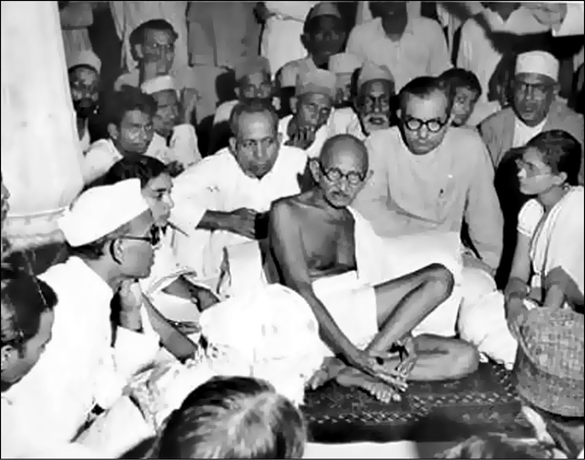
Fakat 1919’da Hindistan’ın hakimi İngilizler, fesat çıkardıkları iddiasıyla bazı Hintlileri hapsetti. Bunun üzerine Gandhi bir kez daha sahneye çıktı ve yeni bir satyagraha ilan etti. Hindistan sallandı. Amritsar katliamı olarak bilinen olayda İngilizler 400 Hintliyi öldürdü. 1920’ye gelindiğinde Gandhi, Hint politik yaşamının tek gündem maddesi olmuştu. Hint Ulusal Kongresi’ni kurdu ve İngiliz yönetimine karşı, İngiliz kurum ve mallarının boykotunu da içeren, barışçı sivil itaatsizlik hareketini başlattı. Binlerce kişi tutuklandı. Hatta Gandhi taraftarları, İngiliz yasalarına karşı verdikleri bu mücadelede, hapse girmek için güle oynaya kuyruk oluşturuyorlardı!
Tüm şiddeti dışlama çabalarına rağmen Gandhi, Mart 1922’de 6 yıl hapis cezasına çarptırılmaktan kurtulamadı. İki yıl sonra serbest bırakıldığında ülkedeki siyasî manzara oldukça değişmişti. Ulusal Kongre bölünmüş, Müslümanlarla Hinduların birlikteliği sona ermişti. Gandhi’nin politik etkinliği azalmıştı. Ta ki 1928 Aralık’ındaki Kalküta Kongresi’ne kadar. Gandhi bu kongrede, Hindistan için dominyon statüsü talep etmiş, aksi takdirde tam bağımsızlık için ulusal bir kampanya başlatma tehdidini savurmuştu. 1931’de Hint Ulusal Kongresi’nin tek temsilcisi olarak Londra’daki yuvarlak masa toplantısına katılmış, ama şiddetsizlik politikasının politik bir amaç olarak kullanılması üzerine partiden istifa etmişti.
1945’te İngiltere’deki yeni İşçi Partisi hükümetinin başlattığı müzakereler, 1947’de Mountbatten Planı ile sona erdiğinde, iki yeni dominyon ortaya çıkıyordu: Hindistan ve Pakistan. Ardından Hindularla Müslümanlar arasında çatışmalar patlak verdi. Gandhi, sükunet çağrılarına kulak verilmeyince, oruca başladı. Bilgenin, pasifizm içeren bu yaklaşımı bir kez daha ses getirdi; Kalküta ve Delhi’deki ayaklanmalar sona erdi. Ama Gandhi, bundan kısa bir süre sonra, Delhi’de, Müslümanlara olan sıcak ve barışçıl yaklaşımından hoşlanmayan Nathuram Godse adlı Hindu bir fanatik tarafından öldürüldüğünde, ardında, politik tarihin en etkin sonuç alma yöntemlerinden olan ‘sivil itaatsizliği’ ve ‘şiddetsizliği’ bırakıyordu. Gandhi, işgalci bir güce karşı hiç şiddete başvurmadan da mücadele edilebileceğini ve başarıya ulaşılabileceğini tüm dünyaya göstermişti.
Şüphesiz ki Gandhi, siyasî kariyeri boyunca birçok önemli konuşma yapmıştı. Ama Hint Ulusal Kongresi’nde, 7 Ağustos 1942’de, İkinci Dünya Savaşı’nın en sıcak günlerinde yaptığı konuşma, onun şiddetten uzak durma felsefesini sergilemesi ve aynı zamanda düşmanına dahi insan olmasından dolayı duyduğu saygıyı göstermesi açısından büyük bir öneme sahiptir.
* * *
“Kalplerinde İngilizler için nefret besleyenler var. İngilizlerden tiksindiklerini söyleyen insanlar olduğunu duyuyorum. Sıradan insanların zihni, bir İngiliz ile İngiliz hükümetinin emperyalist politikası arasında ayrım yapmaz. Onlar için ikisi de aynıdır. Japonların ortaya çıkmasına da aldırış etmeyen insanlar olabilir. Belki de bu, onlar açısından, sadece efendilerin değişmesinden başka bir şey değildir. Ama bu tehlikeli bir yaklaşım. Bunu zihninizden atın. Kritik bir zamandayız. Eğer sakin kalır ve kendimize düşen rolü oynamaz isek, doğru bir şey yapmamış olacağız. Eğer bu savaşı yapan sadece İngiltere ve Amerika ise ve bize düşen, anlık bir yardım sağlamaksa; bu yardımı ister gönüllü vermiş olalım, isterse bizden zorla alınmış olsun, yine de hoş bir durum değil. Sadece bizim kendi savaşımız olursa, gerçek öfkemizi ve cesaretimizi gösterebiliriz. İşte o zaman her çocuk cesur olacaktır.
Özgürlüğümüz, gökten düşmeyecek, onu savaşarak alacağız. Yeterli fedakârlığı gösterdiğimizde ve cesaretimizi ispatladığımızda İngilizlerin bize özgürlüğümüzü vermek zorunda kalacaklarını gayet iyi biliyorum. İngilizlere yönelik nefreti kalbimizden söküp atmalıyız. En azından benim kalbimde böyle bir nefret yok. Aslına bakılırsa, İngilizlerin, her zamankinden daha çok dostuyum. Bunun sebebi, şu an büyük bir stres içinde olmaları. Dostluğum, yaptıkları hatalardan dolayı onları uyarmamı gerektiriyor. Ben onların içinde bulundukları halde olmadığım için, onlara hatalarını gösterebilecek durumdayım. Bir uçurumun eşiğinde ve içine düşmek üzere olduklarını biliyorum. Bundan dolayı, ellerimi kesmek bile isteseler, dostluğum, onları uçurumdan çekip çıkarmamı gerektiriyor. Birçokları gülse de, bu benim yaklaşımım ve bunun doğru olduğunu söylüyorum.
Onlara karşı en büyük saldırıya hazırlandığım anda bile, kalbimde İngilizlere karşı nefret olamaz. ‘Mademki zor durumdalar, o halde bir darbe de ben vurayım’ düşüncesi asla aklıma gelmez. Hiçbir zaman gelmedi de. Tabii ki öfke anında sizi provoke eden şeyler olabilir. Her şeye rağmen şiddete meyletmemelisiniz. Böyle bir şey, şiddetsizlik politikasına sadece utanç ekler. Böyle bir şey olursa bilin ki, nerede olursam olayım beni canlı bulamayacaksınız. Eğer bunu anlamıyorsanız, bu kararımı şimdiden reddetmeniz daha iyi olacaktır. Sizi anlamakta zorlandığınız şeylerden dolayı nasıl suçlayabilirim ki?
Savaşta asla aklınızdan çıkarmamanız gereken tek bir ilke var. Benim inanmadığım gibi siz de asla İngilizlerin başarısız olacağına inanmayın. Onları korkaklar sürüsü olarak görmüyorum. Ve biliyorum ki, İngiltere’deki her ruh, yenilgiyi kabul etmektense, ölmeyi yeğleyecektir. Mağlup edilebilirler ve tıpkı Burma, Malaya ve diğer çekildikleri yerlerde olduğu gibi sizi de, imkân olduğu anda geri alabilme düşüncesiyle, bırakabilirler. Bu onların askerî stratejisi olabilir. Ama şu an bizi bırakmaları durumunda ne olacağını bir düşünelim. Bu durumda buraya Japonlar gelecektir. Japonların gelişi Çin’in, belki de Rusların sonu olacak. Bu tür meselelerde benim hocam, Pandit Jawaharlal Nehru’dur. Ne Rusya’nın ne de Çin’in yenilgisinin aracı olmak istiyorum. Böyle bir durumda kendimden nefret ederim.
Biliyorsunuz, hızlı hareket etmekten hoşlanırım. Ama sizin istediğiniz kadar hızlı hareket etmiyor olabilirim. Belki İngilizler de bilgelikten nasiplerini alacak ve kendileri için savaşmak isteyen onlarca kişiyi hapse atmanın yanlış olduğunu anlayacaklardır. Belki Cinnah’ın4 da fikirlerinde bir değişiklik olabilir. Şiddetsizlik herkese yardımcı olabilecek, eşi olmayan bir silahtır. Bu yöntemle şu ana kadar çok fazla bir şey elde edemediğimizi biliyorum; bundan dolayı, bu tür değişiklikler meydana gelirse, bunu, son 22 yılda gösterdiğimiz büyük çabalara ve Tanrı’nın bize yardım etmesine yoracağım.
‘Hindistan’ı terk edin’ sloganını seslendirdiğimde, o zaman Hindistan’daki ümitsizliğe kapılmış kişiler, önlerine yeni bir şey koyduğumu sandılar. Gerçek özgürlük istiyorsanız, bir araya gelmek zorundasınız. Bu türden bir araya geliş, şu ana kadar yeltenilmeyen ve şahit olunmayan türden gerçek bir demokrasi meydana çıkartacaktır. Hapisteyken Fransız Devrimi hakkında çok şey okudum. Fransız halkına karşı büyük bir hayranlığım var. Nehru da bana Rus Devrimi hakkında çok şey anlattı. Ama bana kalırsa onların mücadelesi gerçek demokrasi için değil, halk için verilen bir savaştı. Benim demokrasi anlayışıma göre, herkes kendi kendisinin efendisidir. Yeteri kadar tarih okudum ve şiddetsizlik politikası ile geniş ölçekli bir demokrasi kurulduğuna şahit olmadım. Bir kez bunları anlarsanız, o zaman Müslümanlarla Hindular arasındaki farklılıkları da unutacaksınız.
Önünüzdeki çözüm size şunu söylüyor: ‘Su kuyusundaki kurbağalar olarak kalmak istemiyoruz. Dünya federasyonunu hedefliyoruz. Bu da sadece şiddetsizlik politikası ile gerçekleşebilir. Silahsızlanma da, sadece eşi benzeri olmayan şiddetsizlik politikasını benimserseniz gerçekleşebilir.’
Beni hayalperest olarak görenler çıkabilir ama ben iyi bir iş adamıyım ve işim de dirliği sağlamak.
Eğer bu bakışımı paylaşmazsanız üzülmeyeceğim. Aksine beni şu an üzerime yükleyeceğiniz sorumluluktan kurtaracağınız için sevinçle dans edebilirim de.
Şiddetsizliği politik bir araç olarak benimsemenizi istiyorum. Bu benim açımdan bir inanç meselesi, ama siz söz konusu olduğunuzda, bunu bir politika olarak kabul etmenizi istiyorum. Disiplinli askerler olarak bunu özümsemenizi ve mücadeleye katıldığınızda da uygulamanızı istiyorum. Herkes bana 1920’deki adamla aynı kişi olup olmadığımı soruyor. Tek fark, şimdi, bazı konularda, o dönemden daha güçlü olmam.”
7 Ağustos 1942
General PATTON
“Hepiniz ölmeyeceksiniz, sadece yüzde ikiniz!”
Amerikalı General George S. Patton, 17 Mayıs 1944’te, İngiltere’de, Enniskillen Manor Ground’da Normandiya Çıkartması için son hazırlıklarını yapan Amerikan 3. Ordusu’na seslendiği konuşmada, savaş tarihinin belki de en müstehcen, ama bir o kadar da etkili ve cesaretlendirici konuşmasını yapıyordu. Patton, neredeyse ölümle dalga geçtiği, korkaklığı aşağıladığı ve fütursuz bir dil kullandığı bu konuşmada, adeta savaşı ve savaşmayı kutsuyordu:
* * *
“Erkekler! Amerika’nın savaşın dışında kalmak istediği ve savaş istemediği şeklindeki lakırdılar balondan başka bir şey değil! Amerikalılar geleneksel olarak savaşmayı severler. Tüm gerçek Amerikalılar acıyı ve savaşta çarpışmayı sever. Amerika kazananı sever. Amerika kaybedene hoşgörü göstermez. Amerikalılar korkaktan tiksinir. Amerikalılar kazanmak için oynar. Bundan dolayıdır ki Amerika asla bir savaş kaybetmedi ve kaybetmeyecek.
Hepiniz ölmeyeceksiniz. Sadece yüzde ikiniz, bugün burada, büyük bir savaşta ölmüş olacaksınız. Ölümden korkulmamalı. Ölüm, zamanla, hepimize uğrayacak. Ve her erkek ilk savaşında korkar. Korkmuyorum diyen, Tanrı’nın belası bir yalancıdır. Bazı erkekler korkaktır, evet, ama tıpkı korkak olmayanlar gibi savaşırlar. Ya da canları cehenneme!
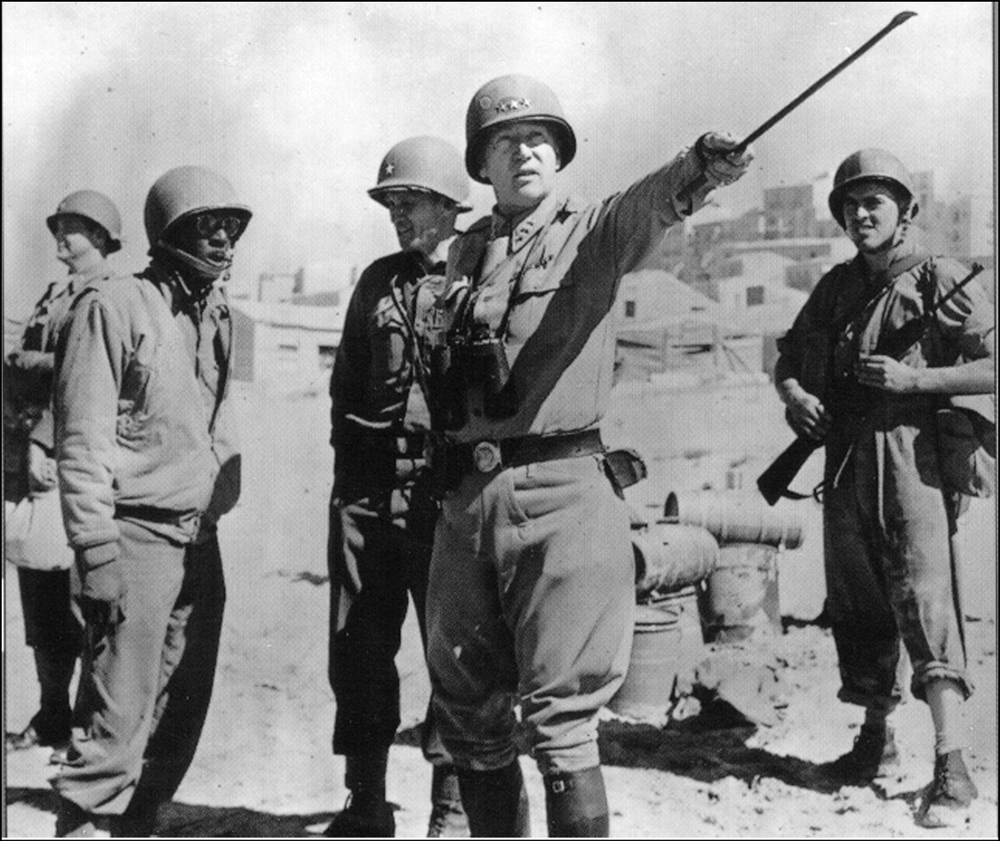
Gerçek kahraman, korktuğu halde savaşandır. Bazıları ateş altında korkusunu bir dakika içinde, bazıları bir saat içinde yener. Bazılarınınki ise birkaç gün sürebilir. Ama gerçek bir erkek, ölüm korkusunun; onurundan, görev bilincinden, ülkesinden ve erkekliğinden daha baskın çıkmasına izin vermeyecektir.
Ordudaki kariyeriniz boyunca ‘tavuk b…u’ olarak isimlendirdiğiniz talimler hakkında dırdır ediyordunuz. Bunun da, ordudaki diğer her şeyde olduğu gibi, kesin bir amacı var. Amacı, emirlere anında itaat gösterilmesi ve sürekli uyanıklığın sürdürüldüğü bir atmosfer yaratmaktır.
Bu her askerin içine işlemelidir. Bir erkek hayatta kalmak istiyorsa sürekli uyanık olmalıdır. Eğer olmazsa, bazı Alman o….. çocukları arkanızdan sinsice yaklaşarak b…tan bir darbe ile işinizi bitirebilir. Sadece bir adam görevinin başında uyuduğu için Sicilya’da bir yerlerde gayet muntazam dört yüz kadar mezar var…
Ordu, bir takımdır. Bir takım olarak yaşar, uyur, savaşır ve yer. Bireysel kahraman hikâyesi bir palavradır. Saturday Evening Post için bu türden hikâyeleri yazan herifler, ateş altında savaşma hakkında bir şey bilmiyorlar! Ordudaki her asker hayatî bir rol oynar. Herkesin yapacak bir işi vardır ve onu yapmalıdır. Her kamyon şoförü, ‘Kafamın üzerinden geçen mermi seslerinden hoşlanmıyorum’ diye düşünse ve kendisini hemen yanı başındaki bir hendeğe atsa ne olur? Her biri, ‘Milyonlarcasından biriyim. Beni aramazlar’ diye düşünse ne olurdu? Hepimiz hangi cehennemde olurduk? Ülkemiz, sevdiklerimiz, evlerimizi ve hatta dünya nerede olurdu?
Hayır, şükürler olsun ki Amerikalılar böyle düşünmüyor. Herkes görevini yapıyor ve bir bütüne hizmet ediyor. Ordonattakiler silahları ve bu savaşın devasa silahlarını temin ediyor, bakımını yapıyor ve hareket etmemizi sağlıyorlar. Levazım subayları, nereye gidersek gidelim, çalacak hiçbir şeyin olmadığı yerlere giyeceklerimizi ve yiyeceklerimizi yetiştiriyor. Karargâhtaki herkesin yapacak bir işi var. Asker pisliklerinden hastalık kapmamamız için suyu kaynatan adamın bile!
Hey millet! Unutmayın! Burada olduğumu bilmiyorsunuz. Hiçbir mektupta bundan kesinlikle bahsedilmeyecek. Amerika, başıma ne tür bir bela geldiğini merak edecek. Bu orduya komuta etmem, hatta İngiltere’de bile olmam beklenmiyor. Bırakalım, bunu öğrenecek ilk Tanrı’nın belası, Almanlar olsun. Kafalarını kaldırıp, ‘Ah, yine bu Tanrı’nın belası 3. Ordu ve Patton!’ diye inlemelerini istiyorum.
Bu işin bitmesini, bu cehennemden çıkmayı ve o korkak Japonların icabına bakmayı istiyoruz. Eve giden en kısa yol Berlin ve Tokyo’dan geçiyor! Bu savaşı kazanacağız, ama bunu sadece, düşmana, onların şu an olduklarından ve her zaman olacaklarından daha fazla cesur olduğumuzu göstererek yapacağız!
Siz erkeklerin, tüm bunlar olup bittiğinde ve bir kez daha evlerinize döndüğünüzde söyleyebileceğiniz önemli bir şey var. Bundan yirmi yıl sonra, şöminenin başında torununuzla oturduğunuzda ve torununuz, size savaşta ne yaptığınızı sorduğunda; onu bir dizinizden diğerine alıp, mahcup bir şekilde öksürerek; ‘Louisiana’da gübre kürekledim’ demek zorunda kalmayacağınız için Tanrı’ya şükredebilirsiniz!”
17 Mayıs 1944
Winston CHURCHILL
“Demir Perde çekildi!”
Winston Churchill’in II. Dünya Savaşı’nın ardından Amerika’da yaptığı ve ufukta beliren Soğuk Savaş tehlikesine atıfta bulunduğu konuşmadan...
İkinci Dünya Savaşı’nın bitmesinin üzerinden daha bir yıl geçmeden, savaş dönemi İngilteresi’nin ünlü lideri Winston Churchill, Batı’nın kendini idare eden (self-governing) ulusları ile Komünist Sovyetlerin kontrolü altındaki bölgeler arasındaki hattı tanımlamak için ilk kez Demir Perde tabirini kullandığı bu konuşmayı yaptı. Churchill, Amerika’nın Missouri eyaletinin Fulton Westminster Koleji’nde, kendisi de Missourili olan ABD Başkanı Harry Truman’ın elinden aldığı onur madalyasının ardından mikrofonların başına geçtiğinde, Amerika’nın liderliğinde ve İngiltere’nin yedekliğindeki Batı Bloğu ile Sovyet Rusya liderliğindeki Doğu Bloğu arasında kıvılcımlanmaya başlayan Soğuk Savaş tehlikesine atıfta bulunuyordu:
* * *
“Birleşik Devletler, şu anda dünya gücü açısından zirvede durmaktadır. Bu, Amerikan demokrasisi için seçkin bir an. Güç dengesindeki bu üstünlüğe, geleceğe yönelik ilham verici bir güvenilirlik de ekleniyor. Etrafınıza baktığınızda sadece tamamlanmış bir görevin hissiyatını değil, aynı zamanda ulaşılmış bu başarı seviyesinin altına düşme endişesini de yaşamalısınız. Ülkelerimizin her ikisi için de fırsat; net ve parlak bir şekilde burada, önümüzde duruyor. Bunu reddetmek, görmezden gelmek ya da değerlendirememek, ileride lanetlenmemize sebep olacaktır.
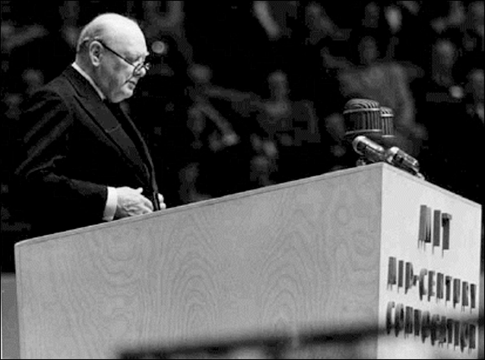
Zihinsel bütünlüğün, amaçtaki kararlılığın ve kararın görkemli doğruluğunun, savaşta olduğu gibi barışta da, İngilizce konuşan halkların yönetimini yönlendirmesi ve ona rehberlik etmesi elzemdir. Bu kritik göreve layık olduğumuzu ispatlamamız gerekiyor, kaldı ki ben ispatlayacağımıza inanıyorum.
Cesur Rus halkı ve savaş dönemi yoldaşım Stalin’e büyük bir hayranlık ve saygı duyuyorum. İngiltere’de ve hiç şüphe duymuyorum ki burada da, Rus halklarının tümüne karşı bir sempati, iyi niyet ve aynı zamanda -birçok farklılık ve aksaklığa karşın- sürekli bir dostluğun oluşturulmasına yönelik bir kararlılık bulunuyor. Bununla birlikte, Avrupa’daki mevcut durumla ilgili olarak birtakım somut gerçekleri önünüze koymak benim görevim.
Baltık’taki Stettin’den Adriyatik’teki Trieste’ye kadar kıta boyunca demir bir perde çekildi. Doğu ve Orta Avrupa’nın tüm kadim ülkelerinin başkentleri, bu hattın arkasında kalmış durumda.
Varşova, Berlin, Prag, Viyana, Budapeşte, Belgrat, Bükreş ve Sofya; tüm bu görkemli şehirler ve halkları, Sovyet etkinlik sahası olarak isimlendirmek zorunda kaldığım alanda kalıyorlar. Öyle ya da böyle, sadece Sovyet etkisine açık değiller; aynı zamanda, oldukça yüksek ve bazı durumlarda giderek artan bir Moskova kontrolü ile karşı karşıyalar.
Bayanlar, Baylar! Dünyanın güvenliği, Avrupa’da, hiçbir ülkenin ilelebet dışarıda bırakılmaması lazım gelen bir bütünlük oluşturulmasını gerektiriyor. Şahit olduğumuz dünya savaşları ya da daha eski zamanlarda meydana gelenler, Avrupa’daki bu güçlü baskın ırk çatışmalarından filizlendi. Amerika, iki kez, bu savaşlarla baş etmek için milyonlarca gencini Atlantik’in diğer tarafına göndermek zorunda kaldı. Ama artık, nerede olursa olsun, hepimiz her ulusu bulabiliriz. Muhakkak ki, Birleşmiş Milletler’in yapısı içerisinde ve taslağımızla uyum içinde Avrupa’nın tam katılımını hedefleyen bilinçli bir hedefle çalışmalıyız.
Rus sınırlarından uzaklarda ve dünyanın her yerinde çok sayıda ülkede, komünist beşinci kol grupları oluşturuluyor ve bunlar komünist merkezden aldıkları emirlere topyekûn itaat gösteriyor, tam bir dayanışma içinde çalışıyorlar. Komünizmin emekleme çağını yaşadığı İngiliz Milletler Topluluğu ve Birleşik Devletler dışında, komünist partiler ya da beşinci kollar, Hıristiyan uygarlığına karşı giderek artan bir tehdit ve tehlike oluşturuyorlar.
Uzak Doğu’daki ve özellikle de Mançurya’daki manzara endişe verici. Yalta’da yapılan ve benim de taraflarından biri olduğum anlaşma, aşırı derecede Sovyet Rusya lehineydi. Ama bu anlaşma, Almanya ile savaşın tüm yaz ve 1945 sonbaharı boyunca süreceğinin düşünüldüğü ve Japonya ile yapılan savaşın en iyi ihtimalle Almanya ile olan savaşın bitmesinden sonra 18 ay kadar daha devam edebileceğinin hesaplandığı bir dönemde yapılmıştı.
Her ne kadar yaklaşmakta olsa da, yeni bir savaş fikrinin kaçınılmaz olduğunu kabul etmiyorum. Bu, kaderimizin halen elimizde bulunmasından, geleceği kurtarma gücüne sahip olmamızdan ve imkânım ve sebebim varken uyarılarda bulunmam gerektiğini hissetmemden dolayı böyle.
Sovyet Rusya’nın savaş arzuladığını sanmıyorum. Arzuladıkları, savaşın meyvelerinin ve güç ve doktrinlerinin sınırsız bir şekilde yayılması.
Halen zaman varken burada üzerinde düşünmemiz gereken şey, savaşın daimî olarak engellenmesi ve mümkün olduğu kadar kısa sürede tüm ülkelerde özgürlük ve demokrasi koşullarının oluşturulmasıdır. Zorluklarımız ve önümüzdeki tehlikeler, gözlerimizi onlara kapamakla ortadan kalkmayacak. Ne olacakları görmek için beklememiz ne de uzlaşma politikasını takip etmemiz yok edecek bu zorlukları. İhtiyaç duyulan şey, bir düzenleme ve bu ne kadar geciktirilirse, yapılması o kadar güçleşecek ve tehlikelerimiz de bir o kadar büyüyecek.
Savaş boyunca müttefiklerimizden ve Rus dostlarımızdan gördüklerim sonucunda; güç kadar saygı duydukları ve zayıflık, özellikle de askerî zayıflık kadar az saygı gösterdikleri başka bir şey olmadığına ikna oldum.
Bundan dolayı eski güçler dengesi doktrini bir mana ifade etmiyor. Eğer yapabilirsek, güç ölçüşmesine imkân tanıyacak tahriklerde bulunarak uç noktalarda hareket etme lüksümüz yok. Son kez bunların yaklaşmakta olduğunu gördüğümde kendi halkımı ve dünyayı yüksek sesle uyardım ama hiç kimse kulak asmadı. 1933 ve hatta 1935 yılına kadar, Almanya, kendisini ele geçiren korkunç kaderden kurtarılabilir ve bizler de Hitler’in insanlığın üzerine saldığı belalara maruz kalmayabilirdik. Tarihte, dünyanın böylesine büyük bir bölümünü mahveden bu savaştan daha çok -zamanında müdahale edilebilseydi- engellenebilecek başka bir savaş olmamıştı. İnancıma göre, tek kurşun bile atmadan bu savaş engellenebilir ve Almanya bugün güçlü, zengin ve saygın bir ülke olabilirdi. Ama hiç kimse dinlemedi ve teker teker hepimiz bu kasırganın kurbanı olduk.
Bunun tekrar gerçekleşmesine izin vermemeliyiz. Bu sadece şimdi, 1946’da, Birleşmiş Milletler Organizasyonu’nun otoritesi altında Rusya ile tüm noktalar üzerinde bir mutabakata varılmasıyla, bu mutabakatın barış dolu uzun yıllar boyunca sürdürülmesiyle ve İngilizce konuşan dünya ve bunun tüm bağlantılarının topyekûn gücü ile başarılabilir. İngilizce konuşan Milletler Topluluğu’nun (Commonwealth) nüfusu, Amerika’nınkine eklenirse ve tüm bunlarla birlikte böylesi bir işbirliği havada, denizde ve yerkürenin her yerinde, bilimde, endüstride ve ahlakî güçte kendini hissettirirse; tutku ve maceraya tahrik kaynağı teşkil edebilecek, tehlikeli ve kırılgan bir güç dengesi olmayacak. Üstelik baskın bir güvenlik garantisi olacak.
Eğer Birleşmiş Milletler taslağına sadık kalır; hiç kimsenin toprağı ve servetinde gözümüz olmaksızın, insanların düşünceleri üzerinde metazori bir kontrol kurmanın yolunu aramaksızın, kararlı ve adil bir şekilde ileriye doğru yürürsek; ve eğer İngiltere’nin tüm ahlakî ve materyal gücü sizinkilerle iyi niyetli bir birliktelik oluşturursa, sadece bizler için değil herkes için, sadece zamanımız için değil gelecek yüzyıl için de, geleceğe giden çetin yolların aşılması kolaylaşacak.”
5 Mart 1946
George C. MARSHALL
“Geleceğin dünyası, isabetli bir yargıya bağlı.”
Amerikan Dışişleri Bakanı George C. Marshall, Nazi Almanya’sının yenilmesinden iki yıl sonra, Avrupa’ya yaptığı ziyaretin ardından ülkesine dönmüş ve Kongre’de gezisiyle ilgili izlenimlerini paylaşıyordu. ‘Avrupa’nın toparlanması, beklenildiğinden daha yavaş seyrediyor. Bütünlüğü tehdit eden güçler kendini gösteriyor. Doktora acil ihtiyaç duyulurken hasta ölüyor’ diyerek, savaş yorgunu kıtanın içinde bulunduğu durumu özetliyordu.
İkinci Dünya Savaşı esnasında Amerikan Kara Kuvvetleri’nin komutanlığını yapmış olan Marshall, önce asker ve hemen ardından da siyasetçi olarak yaşlı kıtanın yaşadığı yıkıma ilk elden şahit olmuştu. Avrupa büyük bir harabe halindeydi. İnsanlar, barınma, beslenme ve her şeyden önemlisi de temel tüketim mallarını alacak nakit sıkıntısı çekiyorlardı. Kelimenin tam anlamıyla, Avrupa’nın dirilişi tehlikedeydi.
George C. Marshall, 1947 yılı eğitim dönemi açılış konuşmasını yapmak için Harvard Üniversitesi’ne davet edilince bu fırsatı, ‘Avrupa’yı tekrar kendi ayakları üzerinde duracak bir noktaya ulaştırmayı’ hedefleyen ekonomik iyileştirme planını gündeme getirmek için kullandı. Marshall’ın bu konuşması yankı buldu ve teklifi, 1948 yılında Başkan Truman tarafından imzalanan bir kanun ile Avrupa İyileştirme Programı ‘The European Recovery Program’ ismiyle uygulamaya kondu. Lakin plan, yürürlüğe girmesiyle birlikte mimarının adıyla; yani Marshall Planı olarak anılacaktı.
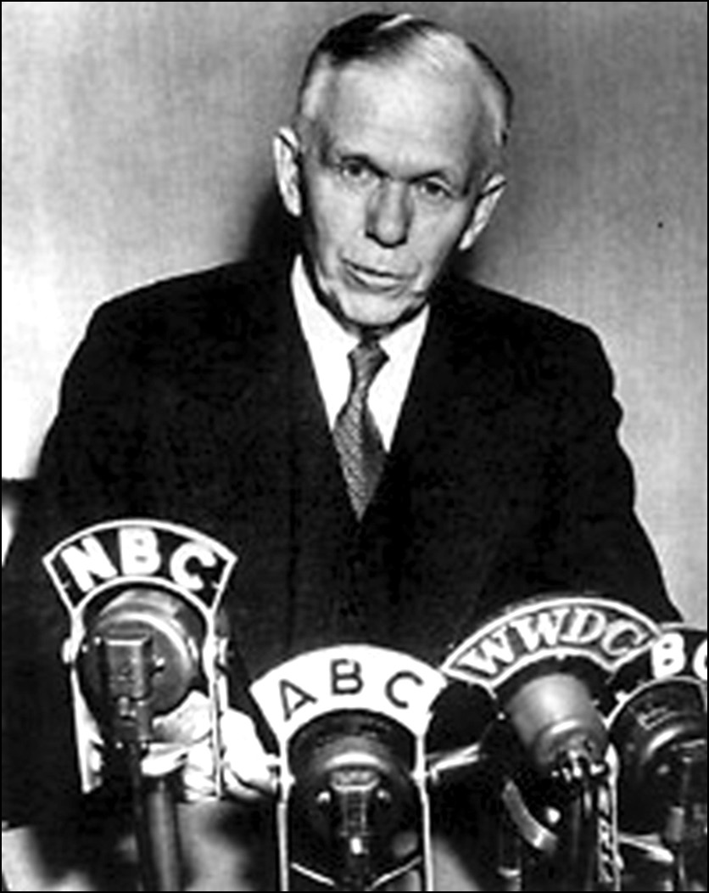
Program dört yıllık bir süreyi kapsıyordu. ABD, yardımları karşılığında Avrupa ülkelerinden ekonomik ve malî bağımsızlıklarını artıracak yönde çaba göstermelerini, bu amaçla gerekli iç önlemleri almalarını ve aralarında yakın bir işbirliği gerçekleştirmelerini istiyordu. Bu ortamda Avrupa ülkeleri, aralarında gerekli işbirliğini gerçekleştirmek ve Marshall yardımlarını dağıtmak üzere Avrupa Ekonomik İşbirliği Örgütü’nü (OEEC) kurdular. 17 Batı Avrupa ülkesinden her biri, 1948-1951 dönemini kapsayan bir plan hazırlayacak, ekonomisini toparlayacak, üretimini artıracak ve dış açığı azaltacak önlemler alacaktı. Bu planlar OEEC tarafından gözden geçirilecek ve aralarında uyum sağlanacaktı.
Aslında bu koordinasyon, ABD’ye, üye ülkelerin parasal ve malî politikaları üzerinde denetim olanağı da sağlıyordu. Kısacası, Marshall Programı’nın başlıca iki amacı vardı. Birisi, sağlanacak dış yardımlarla, Avrupa ülkelerinin yıkılan ekonomilerinin onarımına ve kalkınmalarının gerçekleştirilmesine katkıda bulunmak; diğeri de komünizmin Batı Avrupa’da yayılmasına engel olmaktı. Dönem, ‘Soğuk Savaş’ın başlangıç yıllarıydı. Dolayısıyla Amerika, ne pahasına olursa olsun komünizmin yayılışına set çekmek istiyordu. Diğer yandan, Batı Avrupa, ABD’nin geleneksel bir piyasası durumundaydı. O bakımdan bu piyasayı yeniden canlandırmakla ihracat olanaklarını artırmayı umuyordu. Avrupa İyileştirme Programı’nın uygulandığı dört yıllık süre içerisinde ABD, Avrupa’ya 17 milyar dolar yardım yaptı, bunun % 90’ı doğrudan hibe şeklinde idi. En fazla yardım alan ülkeler İngiltere (% 24), Fransa (% 20), Federal Almanya (% 11) ve İtalya (% 10) idi. Az miktarda olmakla birlikte Türkiye de yardım alan ülkeler arasında idi.
Marshall Programı, Amerikan yardımının sadece bir yönüydü. 1945’te başlayan Amerikan yardımı, 1955’e kadar 51 milyar doları buldu. Dolaylı olarak Avrupa’nın bugünkü Avrupa olmasında büyük katkısı olan George C. Marshall, savaş sonrası Avrupalı kuşaklar açısından hayatî bir işlev gören teklifiyle, 1953’te Nobel Barış Ödülü alan ilk emekli general olarak tarihe geçti.
Marshall Yardımı, bir bakıma günümüzün müreffeh Avrupa’sına giden kapıyı açmış olsa da, bir yandan da Avrupa’nın dünya politik arenasında Amerika karşısında sergilediği ezik tavrın da temelini oluşturmakta. Öyle ki, İkinci Körfez Savaşı’nda Amerikan politikalarına sert çıkan Fransa ve Almanya, Amerikalı önde gelen politikacılar tarafından hiç de diplomatik teamüllere uymayan bir şekilde, ‘Bakıyoruz Marshall Yardımı günlerini çabuk unutmuşsunuz!’ şeklinde istiskale uğramışlardır…
Tarih, 5 Haziran 1947’yi gösteriyordu. Massachusetts’te, Harvard’ın eğitim kadrosu ve öğrencileri heyecan ile yerlerini almışlardı. Amerikan Dışişleri Bakanı George C. Marshall, yeni eğitim sezonunun açılış konuşması için alkışlar eşliğinde kürsüye davet edildi. Salonu dolduran kitle olağan, beylik klişelerle süslü bir bürokrat konuşması beklerken; Bakan Marshall, Avrupa’yı bugünkü refah adası konumuna, kendisini ise Nobel’e ulaştıracak şu tarihî konuşmayı yapıyordu:
* * *
“Sayın Başkan, Dr. Conant, Temsilciler Heyeti, Bayanlar ve Baylar!
Harvard yetkilileri tarafından bu sabah şahsıma gösterilen büyük ayrıcalıktan, onurdan ve de yapılan jestlerden dolayı minnettarım, çok etkilendim. Doğruyu söylemek gerekirse, ezildim. Ve bana cömert bir şekilde bahşettiğiniz bu yüksek ilgiye layık olamamaktan endişe ettiğimi de belirtmeliyim.
Bu tarihî günde, bu hoş mekânda, bu olağanüstü güzel günde ve bu çok kıymetli birliktelikte bulunmak, benim konumumdaki birisi için had safhada etkileyici bir deneyim. Ama açık konuşmam gerekirse, dünyanın içinde bulunduğu durumun pek de iç açıcı olmadığını sizlere söylemek durumundayım. Tüm entelektüel insanların bunun farkında olması gerek. Bana kalırsa yaşadığımız güçlük, mevcut sorunun vahametinin oldukça kapsamlı olmasından dolayı, kamuoyuna basın ve radyo yoluyla aktarılan onca gerçeğe rağmen, sokaktaki adam açısından durumun tam anlamı ile değerlendirilememesinde yatıyor. Daha da ötesi, bu ülkenin insanları coğrafî olarak dünyanın sorunlu bölgelerinden uzakta bulunuyorlar ve bundan dolayı, uzun süredir sıkıntılarla mücadele eden halkların durumunu, bu halkların gösterdikleri tepkileri ve bu tepkilerin, hükümetimizin dünya barışını destekleme yönünde bu halkların hükümetleri ile yaptığı çalışmalar üzerindeki etkisini kavrayamıyorlar.
Avrupa’nın rehabilite edilmesi söz konusu olduğunda; yaşanan can kaybı, şehirlerin harap olmuşluğu, fabrikalar, madenler ve demiryollarının perişan hali doğru bir şekilde hesaplandı. Bununla birlikte, geçtiğimiz zaman dilimi içinde, görünürdeki bu yıkımın, Avrupa ekonomik dokusunun bir bütün olarak bozulması tehlikesinin yanında, daha az ciddiyet taşıdığı anlaşıldı.
Geçtiğimiz on yıl boyunca normal olmayan koşullar yaşandı. Ateşli savaş hazırlıkları ve bundan daha da ateşli bir şekilde savaşı sürdürmek için yapılanlar, ulusal ekonomileri tam anlamıyla yiyip bitirdi. Makine aksamları kullanılamaz hale geldi ya da tamamen demode oldu. Zorunlu ve tahripkâr Nazi yönetimi altında, neredeyse her türlü yatırım Alman savaş makinesinin bir parçası haline dönüştürüldü. Uzun vadeli ekonomik yatırımlar, özel işletmeler, bankalar, sigorta şirketleri ve nakliye firmaları; nakit sıkıntısından, millîleştirme tarafından emilmeleri yüzünden ya da basit olarak savaşta tahrip olmalarından ötürü ortadan kayboldu. Birçok ülkede ulusal para birimine olan itimat ciddi oranda sarsıldı. Avrupa’nın ticarî iskeleti, savaş esnasında tamamen dağıldı.
Düşmanlıkların kapanmasının üzerinden iki yıl geçmesine rağmen, Almanya ve Avusturya ile bir barış anlaşması üzerinde mutabakata varılamamış olması sonucunda iyileştirme çalışması ciddi derecede gecikti. Bu sorunlara çok kısa vadede çözümler bulunsa bile, Avrupa ekonomik yapısının kendini toparlaması, açık bir şekilde görünüyor ki, önceden hesaplanandan çok daha fazla zamanda çok daha fazla efor gösterilmesini gerektirecek.
Bu meselenin ilginç ve de ciddi olan bir boyutu daha var. Çiftçi her zaman yiyecek maddesi üreterek diğer yaşam gereksinimleri için bunu şehirdeki tüccarla takas etmiştir. Bu işbölümü, modern medeniyetin temelini oluşturur. Şu an bu temel prensip, söz konusu yıkım sebebiyle ortadan kalkmıştır. Kasaba ve şehirlerdeki sanayi, yiyecek üreten çiftçi ile takas edebileceği miktarda mal üretimi yapamıyor. Hammadde ve yakıt sıkıntısı çekiliyor. Makine parkuru ise ya yok ya da kullanılamayacak durumda. Çiftçi ve köylü satın almak istediği malları bulamıyor. Böylelikle ürününü, kullanamayacağı bir para için satmak kendi açısından kârsız bir alışverişe dönüşüyor. Bundan dolayı topraklarının büyük bir bölümünde tarım yapmaktan vazgeçmiş, bu toprakları sadece hayvan otlatmak için kullanıyor. Giyim kuşam ya da medeniyetin diğer ufak tefek gereçleri konusunda ne kadar sıkıntı çekerse çeksin, kendisi ve ailesi açısından en temel ürün olarak gördüğü buğdayı üretiyor ve stokluyor. Bu esnada şehirlerde yaşayanlar yiyecek ve yakıt sıkıntısı çekiyorlar. Hatta bazı yerlerde açlık seviyesine yaklaşıldığı da oluyor. Sonuç olarak hükümetler, ellerindeki dövizi ve kredileri, bu ihtiyaç maddelerini dışarıdan almak için kullanmak zorunda kalıyorlar. Bu süreç yeniden yapılanma için gereken fonları tüketiyor.
Neticede dünya için hiç de iyiye işaret etmeyen çok ciddi bir durum hızla gelişmekte. Üretimin paylaştırılması esasına dayanan modern işbölümü sistemi yıkılma tehlikesiyle karşı karşıya. Meselenin özü şudur: Avrupa’nın önümüzdeki üç ya da dört yıl içinde yabancı temel tüketim ürünlerine ve yiyeceğe –ki bunlar temel olarak Amerika’dan alınacak mallardır- olan gereksinimi, şu an bunların bedelini ödeme kapasitesinin çok çok üzerinde. Sonuç olarak Avrupa, ya ekstra yardım alacak ya da çok kapsamlı ekonomik, sosyal ve politik çöküntülerle karşı karşıya kalacak.
Çözüm, bu kısır döngüyü kırmakta ve Avrupa halklarının kendi ülkelerinin ve bir bütün olarak Avrupa’nın ekonomik geleceğine ilişkin güvenlerini tazelemekte yatıyor. Üretici ve çiftçiler, değeri tartışma konusu olmayacak para birimlerini kullanarak ürün değiş tokuşu yapabilmeli ve bunu yapmaya istekli olmalı. Bir bütün olarak dünya üzerindeki moral bozucu etkisi ve ilgili halkların moral bozukluğunun sonucu ortaya çıkabilecek muhtemel rahatsızlıklar bir yana, bunun Amerikan ekonomisine yönelik etkileri de gayet açık. Dünyadaki ekonomik işleyişin tekrar rayına oturması için Birleşik Devletler’in, elinden gelen her şeyi yapması akılcı olacaktır. Aksi takdirde politik istikrar ve sürekli bir barış söz konusu olmayacaktır.
Politikamız, herhangi bir ülkeyi ya da doktrini değil; açlığı, fakirliği, çaresizliği ve kaosu hedef almaktadır. Amacı, özgür müesseselerin boy verebileceği politik ve sosyal koşulların ortaya çıkmasını sağlamak için dünya üzerinde işler bir ekonominin tekrar kurulmasıdır. Bana kalırsa, boy gösteren farklı krizleri göz önüne aldığımızda, söz konusu yardım, yiyecek bazında olmamalıdır. Bu hükümetin ileride yapacağı herhangi bir yardım, pansumandan ziyade iyileştirmeyi hedeflemelidir. Eminim ki, iyileştirme misyonuna katkıda bulunmak isteyen her hükümet, Birleşik Devletler hükümetinin tam desteğini alacaktır. Diğer ülkelerin ayağa kalkmasını bloke etmek için manevralar yapan hiçbir hükümet, bizden yardım beklememelidir. Daha da ötesi, politik ya da bir başka şekilde bundan faydalanmak için insanların çektiği sıkıntıları devam ettirmeyi uman hükümetler, partiler ya da gruplar, karşılarında Birleşik Devletler’i bulacaktır.
Çok açıktır ki, Birleşik Devletler hükümeti Avrupa’nın toparlanması ve mevcut durumun iyileştirilmesi yönündeki çabalarına başlamadan önce, durumla ilgili gereksinimlere ve bu hükümetin girişeceği eylemlerde kendilerinin paylarının ne olacağına dair Avrupa ülkeleri arasında bir anlaşma olmalı. Avrupa’yı ekonomik olarak kendi ayakları üzerine kaldırmak için tek taraflı bir program tasarlamaya kalkışmak ne istenen sonucu verir ne de bu hükümet için uygundur. Bu, Avrupalıların işi. Bence inisiyatif Avrupa’dan gelmelidir. Bu ülkenin (ABD’nin) rolü, Avrupa’ya ait programın ortaya çıkarılmasında dostane yardım sunmaktan ve sonrasında ise, bizim için de uygun olduğu sürece bu programın desteklenmesinden ibaret olmalıdır. Program üzerinde, hepsinin olmasa bile, belli sayıda Avrupa ülkesinin mutabakatı olmalıdır. Birleşik Devletler adına herhangi bir başarılı eylemin temelini, mevcut sorunun tüm yönleriyle kavranması ve buna karşı bulunacak çözümlerin Amerikan halkı tarafından tam olarak anlaşılması oluşturmaktadır.
Politik hırs ya da önyargı söz konusu değildir. Sağduyu ve tarihin ülkemizin önüne koyduğu bu büyük sorumluluk karşısında halkımızın göstereceği hevesle, detaylarıyla ortaya koyduğum sorunların üstesinden gelinebilir ve gelinecektir de.
Uluslararası durumumuzla ilgili olarak bir şeyler söylemem gereken her seferde, durumun getirdiği şartlardan dolayı oldukça teknik bir dil kullanmak zorunda kaldığım için özür dilerim. Halkımızın, tutkudan, bir önyargıdan ya da içinde bulunduğumuz hissiyattan hareketle tepki göstermesinden ziyade, mevcut güçlükleri tam olarak anlamasının hayatî derecede önem taşıdığını düşünüyorum. Biraz önce resmî bir şekilde dile getirdiğim gibi, bu sorunların yaşandığı sahnelerden oldukça uzaktayız. Bu kadar uzaktan sadece okuyarak, dinleyerek ya da fotoğrafları ve filmleri görerek durumun vahametini tam olarak anlayabilmek neredeyse imkânsız. Ve şu anda, geleceğin dünyası, isabetli bir yargıya bağlı. Büyük ölçüde, Amerikan halkının; farklı baskın unsurların neler olduğunu, bu insanların tepkilerini, bu tepkilerin haklılık paylarını, çekilen acıları, nelere ihtiyaç duyulduğunu, en iyi nelerin yapılabileceğini ve yapılması gerektiğini anlamasına bağlı.
Çok teşekkür ederim.”
5 Haziran 19473
Fidel CASTRO
“Beni mahkum edin. Sorun değil. Tarih beni aklayacaktır.”
26 Temmuz 1953, Küba tarihinde önemli bir dönüm noktası sayılır. Küba o yıllarda Amerikan yanlısı diktatör Fulgencio Batista’nın yönetimi altındadır. Bu tarihte Fidel Castro ve arkadaşları, Santiago’da bulunan Moncada kışlasına bir harekât düzenler. Ancak Moncada saldırısı, planlandığı gibi gelişmez. Castro ve adamları, askerler karşısında etkili olamaz. Bir kısmı çatışmalarda ölürken, aralarında Fidel Castro’nun da bulunduğu diğerleri tutsak edilir. Yargılanır ve hapis cezasına çarptırılırlar.
Fidel Casto’nun yargılanması ise 16 Ekim 1953’te, büyük bir gizlilik içerisinde bir hastanede yapılır. Castro, hakimler önünde yaptığı bu konuşmada, ‘Tarih beni aklayacaktır’ derken 1959’daki devrime kadar giden süreci başlatan Moncada saldırısının meşruiyetini savunmaktadır. Fidel Castro’nun, o sıralar diktatör Fulgencio Batista rejimi altında fazla yankı bulamayan, gizli tutulan bu konuşması; resmen de kayıt altına alınmış olması hasebiyle iki yıl hapis, serbest bırakılma ve Meksika’ya sürgün edilme, ardından da Sierra Maestra Dağları’na geri dönüş ve nihayetinde 1959’da Batista rejiminin devrilmesiyle sonuçlanan dönemin önemli bir belgesi sayılmaktadır.
Bu konuşma, Castro’nun daha sonraları yaptığı, yedi saat kadar süren hamasî nutuklarının yanında elbette daha kısadır, ancak Küba’nın ünlü bir avukatının bir devrimci kimliğine dönüşümünün temelindeki sebepleri göstermesi bakımından güzel bir örnektir. Fidel Castro, hareketin iç dinamiklerini ve izlenecek yolu, ülkenin tarihî kahramanları ve onların ilkelerinden örneklerle göstermiştir.
* * *
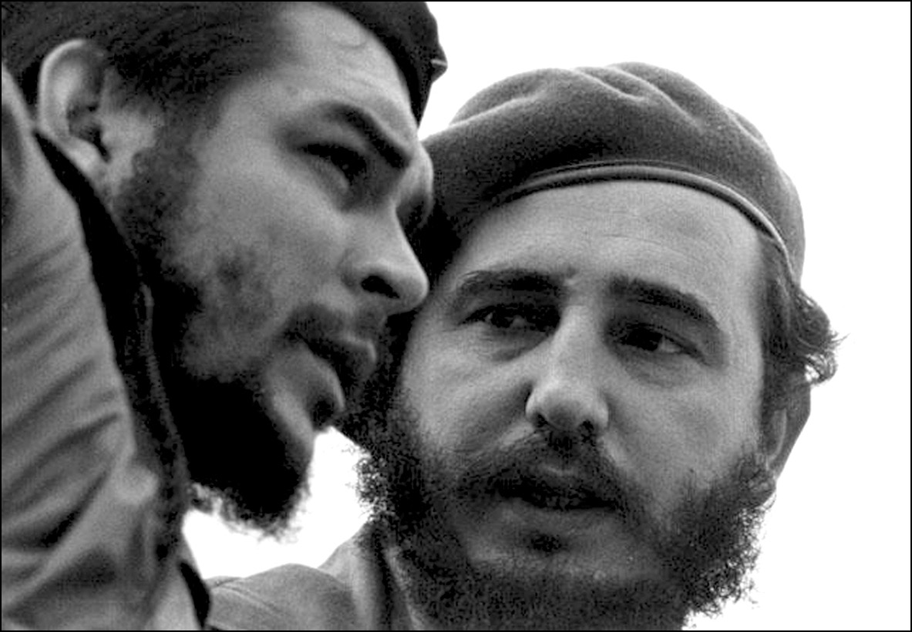
“Şerefli hakimlerimiz,
Eğer yüreklerinizde ülkeniz, insanlık ve adalet için sevgiden eser varsa dikkatli dinleyiniz. Biliyorum, uzun bir süre için sesim kısılmaya çalışılacak; ülke yönetimi, gerçekleri tüm imkânlarıyla bastırmaya çalışacak, biliyorum. Bir kayıtsızlık halinin içine kıstırılıp gömülmeye çalışıldığımı da biliyorum. Ama haykırışım susturulamayacak. Kendimi en yalnız hissettiğim anda dahi göğsümden bu ses yükselecek. Yüreğim, kimi duyarsız korkakların reddettiğinin aksine bana bu gücü verecek.
Temmuz’un 27’sinde, Pazartesi günü, on sekiz adamımız, dağlardaki bir barakada hükümet güçleriyle çatışma halinde iken radyodan diktatörü dinledim. Bu anları yaşamayanlar ne çeşit bir acı ve öfke halinde olduğumuzu anlayamazlar. O gün, insanlarımızın hürriyeti için beslediğimiz ümitler, yıkıntıların ve kayıplarımızın altında kalmış iken; bu umutların paramparça oluşundan adeta şeytanca bir zevk duyan, daha önce hiç olmadığı kadar küstahça konuşan bir tiranı dinledik.
Kaba, iğrenç ve nefret uyandıran dilinden dökülen yalan ve iftiralar akını, geçen geceden beri kendisinin bilgisi ve onayı dahilinde, inanılmaz derecede insafsız bir katil çete tarafından akıtılan genç insan kanıyla karşılaştırılabilir ancak.
Söylediklerine bir an dahi olsun inanmış olmak, vicdan sahibi bir insanın hayatının geri kalan kısmını utanç ve vicdan azabı içerisinde geçirmesine kâfi gelir. Dinlediğim esnada o iğrenç alnını, üzerinde ‘gerçek’ yazan ve onu sonsuza dek lanetli bırakacak bir mühürle dağlamayı umut dahi edemedim. Çünkü binden fazla adamı, diktatörce buyruklarını yerine getirmek üzere bizimkilerden daha güçlü silahlarla donanmış bir şekilde üstümüze geliyordu.
Moncada Kışlası, bir işkence ve ölüm merkezine dönüştürüldü. Bazı kendini bilmezler, üniformalarını kasap önlüğüne çevirdiler. Duvarlar kana boyandı. Duvarlarda bulunan kurşun izleri, doğrudan yüze nişan alınarak açılan ateşin dehşet veren hatıraları olarak saç, yanık deri ve beyin parçalarıyla kaplandı. Kışlanın etrafındaki çimler, insan kanından yapışkan bir hal almıştı. Küba’nın kaderini yönlendiren bu suçlu eller, bu ölüm mekânının girişine esirler için bir cehennem yazıtı kazımışlardı: ‘Bütün umutlarınızdan vazgeçin…’
Bu dayanılmaz manzarayı örtmeye tenezzül bile etmediler. Yaptıklarını gizleme gereği de duymadılar. Yalanlarıyla insanları kandırdıklarını düşündüler, fakat kendileri aldandılar. Kendilerini hayat ve ölümün üzerinde güç sahibi, kainatın efendileri zannettiler. Fakat gün ağarırken yaptığımız saldırıda yaşadıkları korku, cesetler üzerinde ve kan içerisindeki sefahat ve şölenlerini dağıttı.
Dante, İlahî Komedya’da İnferno’yu (cehennem) dokuz tabakaya ayırır. Adî suçlular yedinci, hırsızlar sekizinci, hainler ise dokuzuncu tabakadadır. Şeytanlar, bu adamın ruhu için, eğer ruhu varsa tabii, cehennemde uygun yeri bulmak için epey zorlanacaklar. Santiago de Cuba’da bu menfur eylemleri başlatan adamın bir kalbi dahi olamaz.
Her toplumda böyle hayvanî güdülere sahip adamlar olur. Vahşiler ve sadistler, etrafta insan kılığında dolaşabilirler. Fakat onlar aslında biraz disiplin ve bazı sosyal davranışlarla dizginlenmiş canavarlardır. Eğer onlara kandan bir nehirden içecek sunulsa nehri kurutana kadar içmeden tatmin olmazlar. Bunlar için bir emir yeterlidir. En iyi ve en asil Kübalılar yok oldu onların ellerinde. En cesurlar, en dürüstler, en idealistler… Diktatör, onları ‘paralı askerler’ olarak nitelendirdi. Halbuki onlar, maaş alan, halkı savunmaları için verilen silahlarla bir zümrenin çıkarlarına hizmet eden en iyi vatandaşlarımızı öldüren adamların ellerinde can veriyorlardı.
Yoldaşlarımıza yapılan işkenceler boyunca onlardan ideolojilerine ihanet etmeleri ve Prio’nun kendilerine para verdiğini söylemeleri istendi. Bu yolla hayatlarını kurtarabileceklerdi. Fakat bu teklifi haksızlığa direnen bir öfkeyle reddettiklerinde ordu işkenceye devam etti. Kimilerinin gözleri çıkarıldı. Fakat hiç kimse teslim olmadı. Hiçbir şikâyet duyulmadı. Merhamet için yalvaran da olmadı. Bizim adamlarımız, erkeklik uzvundan mahrum bırakıldıklarında bile onlara eziyet edenlerin tümünden bin kat daha fazla erkekti. Fotoğraflar yalan söylemez, vücutları parçalara ayrılmış. Başka işkence metotları da kullanılmış. Erkeklerin bu cesaretinden dolayı hüsran içinde olan kadınlarımızın üzerine gidilmiş. Yoldaşlarımız Melba Hernandez ve Haydee Santamaria’nın bulunduğu hücreye ellerinde bir insan gözüyle birlikte birkaç kişi girmiş ve gözü işaret ederek Santamaria’ya: ‘Bu kardeşine ait, bize söylemediklerini sen de söylemezsen diğerini de çıkaracağız’ demişler. O da tam bir kararlılıkla: ‘Tek gözünü çıkardığınız halde ondan bir şey alamadıysanız benden de daha fazlasını alamazsınız’ cevabını vermiş. İşkence için tekrar geri dönüp kollarında sigara söndürdükten sonra nefretle yüzüne haykırmışlar: ‘Artık nişanlın yok, onu da öldürdük!’ Santamaria tüm metanetiyle karşılık vermiş: ‘O ölü değil, kendi ülkesi için ölen biri sonsuza dek yaşar…” Küba kadınının kahramanlığı ve asaleti bu dereceye yükselmiştir artık.
Biz Kübalıyız, Kübalı olmak beraberinde bir görev de getirir. Onu yapmamak suçtur, vatana ihanettir. Ülkemizin tarihinden gurur duyuyoruz. Tarihimizi okulda öğrendik. Özgürlük, adalet ve insan hakları kavramlarını duyarak yetiştik. Kahramanlarımızın aziz hatırasına saygı duymak öğretildi bizlere. Cespedes, Agramonte, Maceo, Gomez ve Marti, zihinlerimize işlenen ilk isimlerdi. Titan’ın bir zamanlar ‘Hürriyet dilenilmez, kılıçla kazanılır’ dediği öğretildi. Dünyada yeteri kadar ışık olması gerektiği kadar belli bir derecede şeref ve haysiyet de olmalıdır. Arsızların sayıları çoğaldığı zaman kendi içlerinde birçok insanın şerefini taşıyabilen insanlar daima olacaktır. Bu insanlar, özgürlüğü, yani insan haysiyetini çalanlara güçle karşı koyan kişilerdir. O adamların içinde binlerce insan vardır. Bütün insanlık vardır, insanlık onuru vardır.
Bizlere 10 Ekim’ler ve 24 Şubat’lar, yani Kübalıların zorba hükümetin boyunduruğuna başkaldırdığı tarihler ulusal bayram günleri olarak öğretildi. Aziz bayrağımız üzerine titrememiz ve onu savunmamız gerektiği, her öğleden sonra ulusal marşımızda söylediğimiz gibi ‘Zincirle yaşamanın bir zillet, vatan için ölmenin ise sonsuza dek yaşamak’ olduğu öğretildi.
Bugün, beşikten itibaren öğrenilen bu fikirleri uygulamaya koymak isteyenlere yönelik cinayetler ve mahkumiyetler olmasına rağmen biz bunları öğrendik ve bir daha asla unutmayacağız. Bizler atalarımızdan miras, bağımsız bir ülkede doğduk ve bu böyle devam edecektir.
Marti’nin fikirlerinin, ardından gelen yüzyıl içerisinde tükeneceği zannediliyordu. Hatırası sonsuza dek sönmüş sanıldı önceleri. O kadar hakaret edilmişti ki… Ama o ölmedi, yaşıyor. Halkı zulme başkaldırıyor. İnsanları değerli. Halkı öyle vefakâr çıktı ki… Onun doktrinlerini savunurken ölen Kübalılar var. Yaralı genç Kübalılar, adeta döktükleri kanlarla onun ülkesi, milleti için yaşamasını istercesine son nefeslerini yine onun mezarı başında veriyorlar. Küba! Başına gelecekleri bilseydin Marti’nin ölmesine izin verir miydin?
Savunmamın sonuna geldim ama avukatların yaptığı gibi sanığın affını istemeyeceğim. Yoldaşlarım Pines Adası hapishanesinde ıstırap çekerken kendim için hürriyet isteyemem. Beni oraya, onların yanına, kaderlerini paylaşmak üzere gönderin. Başkanı suçlu ve hırsız olan bir ülkede dürüst insanların ölmüş ya da hapiste olması anlaşılır bir durumdur.
Biliyorum, mahkumiyet benim için kolay olmayacak. Ama korkmuyorum. Yoldaşlarımdan yetmişinin canını alan bu diktatörün gazabından korkmuyorum. Beni mahkum edin! Sorun değil. Tarih beni aklayacaktır.”
16 Ekim 1953
John F. KENNEDY
“‘Ay’a gitmek istiyoruz.”
ABD Başkanı John F. Kennedy 1962’de Texas, Houston’daki Rice Üniversitesi’nde 35 bin kişi önünde yaptığı bu konuşmada, 1960’lı yıllar sona ermeden Amerika’nın Ay’a insan göndermedeki kararlığını dile getiriyordu. Başkan, uzayın esrarını çözme ihtiyacından bahsederken oldukça felsefî bir dil kullanmanın yanı sıra, uzay çalışmalarına yapılan astronomik harcamaları da savunuyordu.
* * *
“Başkan Pitzer, Başkan Yardımcısı, Vali, Kongre Üyesi Thomas, Senatör Wiley ve Kongre Üyesi Miller, Sayın Webb, Sayın Bell, bilimadamları, seçkin konuklar, bayanlar ve baylar!
Başkanınızın beni onursal profesör ilan etmesinden dolayı şeref duymaktayım ve sizi temin ederim ki, bu ilk dersim oldukça kısa olacak.
Burada olmaktan çok memnunum ve özellikle de bu sebepten dolayı burada olmaktan çok mutluyum. Bilgisiyle öne çıkmış bir kolejde, atılımı ile öne çıkmış bir şehirde, gücü ile öne çıkmış bir ülkede bir araya geliyoruz ve bir değişim ve meydan okuma anında, bir ümit ve korku yılında ve bir bilgi ve cehalet çağında bir araya geldiğimiz için bu üçüne de ihtiyacımız var. Bilgimiz ne kadar artarsa, cehaletimiz de o kadar belirginleşiyor.
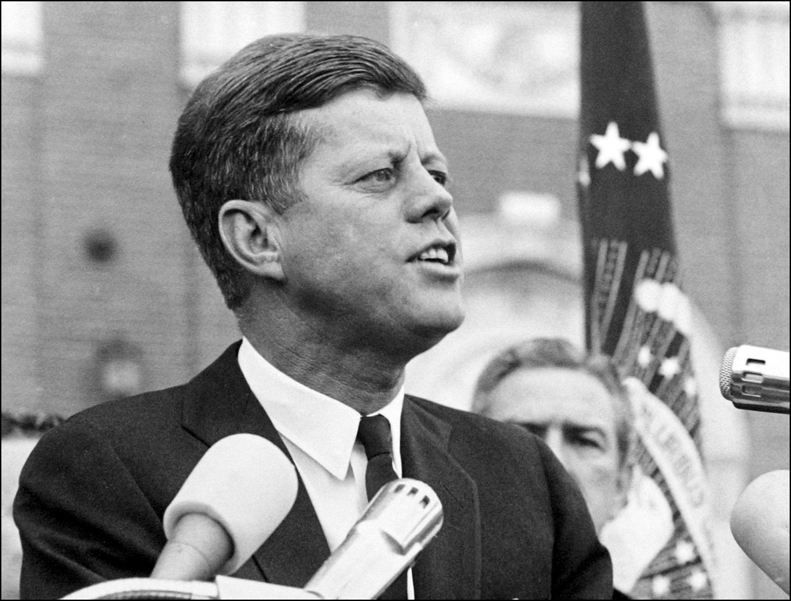
Dünyanın tanıdığı bilim adamlarının çoğunun hayatta ve çalışıyor olmasına rağmen, ülkemizin bilim adamı gücünün her 12 yılda bir, bir bütün olarak nüfus artış oranımızdan 3 kat daha çok artarak ikiye katlanmasına rağmen, tüm bunlara rağmen, bilinmeyenlerin, cevaplanmamışların ve bitirilmemişlerin engin sınırları halen anlayışımızın çok çok ötesine uzanıyor.
Hiç kimse ne kadar uzağa, ne kadar süratli mesafe kat ettiğimizi tam olarak kavrayamaz. Ama gelin, insanoğlunun 50 bin yıllık kayıtlı tarihini yarım yüzyıllık bir zaman dilimine sığdırmış olalım:
Bu kavramlar altında konuşursak, insanın ilk 40 yılı hakkında, çok az şey biliyoruz. O halde bu standarda göre, insanoğlu sadece beş yıl önce yazmayı ve tekerlekli araba kullanmayı öğrendi. Hıristiyanlık 2 yıldan daha az bir zaman önce ortaya çıktı. Matbaa daha bu yıl bulundu ve iki aydan daha kısa bir zaman önce, insanoğlunun bu elli yıllık tarihi boyunca, buhar makinesi yeni bir güç kaynağı olarak ortaya çıktı. Newton yerçekimi kavramına açıklık getirdi. Geçen ay elektrik ampulleri, telefonlar, otomobiller ve uçaklar kullanılmaya başlandı. Daha geçen hafta penisilini, televizyonu ve nükleer gücü kullanmaya başladık. Ve eğer şimdi Amerika’nın yeni uzay gemisi, Venüs’e ulaşmayı başarırsa, tam anlamıyla gece yarısından önce yıldızlara ulaşmış olacağız.
Bu soluk kesici bir adım ve böylesi bir adım, eski bilgisizliği, sorunları ve tehlikeleri ortadan kaldırmakla birlikte, yenilerini de beraberinde getirecektir. Önümüzde açılan uzay manzarası, görkemli ödüller sunmakla birlikte yüksek maliyetlerin ve güçlüklerin de işaretçisi.
Bundan dolayı bazılarının, bizlerin bulunduğumuz yerde biraz daha durmamızı, dinlenmemizi istemeleri normal. Ama bu Houston şehri, bu Teksas eyaleti, bu Amerika Birleşik Devletleri; duran, dinlenen ve arkalarına bakmayı arzu edenler tarafından kurulmadı. Bu ülke, ileriye doğru gidenler tarafından fethedildi. Uzay da öyle olacak.
1630’da Plymouth Bay Kolonisi’nin kuruluş aşamasında konuşan William Bradford, tüm büyük ve saygıdeğer eylemlere büyük zorlukların eşlik ettiğini ve tüm bunların üstesinden cevap niteliğinde bir cesaretle gelinmesi gerektiğini söylemişti. Gelişmemizle ilgili bu küçük tarihî kesit bize bir şeyler öğretecekse, o da, bu adamın, bilgi ve ilerlemeye yönelik araştırmasında kararlı olduğu ve caydırılamadığıdır.
Biz katılalım ya da katılmayalım, uzayın araştırılmasına devam edilecektir. Bu tüm zamanların en görkemli maceralarından biridir ve diğerlerinin lideri olmayı uman hiçbir ulus, bu uzay yarışında geride kalmayı göze alamaz. Bugüne kadar yaşadıklarımız, endüstri devriminin ve modern icatların ilk dalgalarını, nükleer gücün ilk dalgasını bu ülkenin başlattığını göstermiştir. Ve bu ulusun, yaklaşmakta olan uzay çağının arka sıralarında kalmaya niyeti yoktur. Bunun bir parçası olmaya, ona liderlik etmeye kararlıyız. Dünyanın gözleri şimdi uzaya, aya ve ötedeki gezegenlere baktığı için, bunun düşman bir ülkenin fetih bayrağı ile değil, özgürlük ve barışın bayrağı ile yönetildiğini görmeye kararlıyız. Uzayın kitle imha silahları ile değil, bilginin ve anlayışın enstrümanları ile dolu olduğunu görmeye kararlıyız.
Bu milletin antları ancak bu yarışta birinci olmamız ile yerine gelecektir, bundan dolayı birinci olmaya kararlıyız. Özetle, bilim ve endüstrideki liderliğimiz, barış ve güvenliğe beslediğimiz ümitler, başkalarına olduğu kadar kendimize karşı olan sorumluluklarımız da; bu gizemleri çözmemizi, bunları tüm insanlar adına çözmemizi ve uzay çalışmaları konusunda dünyanın lider ülkesi olmamızı gerektiriyor. Bu yeni denize yelken açtık; çünkü öğrenilecek yeni bilgiler, kazanılacak yeni haklar var. Bunlar tüm insanların gelişimi için kazanılmalı ve kullanılmalı.
Nükleer bilim ve diğer tüm teknolojilerde olduğu gibi, uzay biliminin de kendi başına bir vicdanı yok. İyilikten yana mı, yoksa kötülükten yana mı bir güç olacağı, insanoğluna bağlı. Sadece ve sadece Birleşik Devletler’in öncü pozisyonunu elde etmesi durumunda, bu yeni okyanusun bir barış denizi ya da korku verici bir savaş sahnesi olup olmayacağının kararının verilmesine yardımcı olabiliriz.
Karalarda ya da denizlerde olduğu gibi, uzayın da yanlış kullanılmasına karşı savunmasız kalacağımızı söylemiyorum. Söylediğim şu; uzay, savaş ateşlerini beslemeden, insanoğlunun egemenliğini dünyaya yayarken yaptığı hataları tekrar etmeden araştırılabilir.
Uzayda henüz ihtilaf, önyargı ve ulusal çıkar çatışması yok. Barındırdığı tehlikeler hepimize yönelik. Uzayın fethi, insanoğlunun elinden gelenin en iyisini yapmasını gerektiriyor. Ve barışçı işbirliği için barındırdığı fırsat, bir daha asla gelmeyebilir. Ama bazıları ‘Neden Ay?’ diye sorabilir. Neden hedef olarak bunu seçtik? Bunlar neden en yüksek dağa çıkıldığını da sorabilir. Neden 35 yıl önce Atlantik üzerinden uçulduğunu da.
Ay’a gitmek istiyoruz. Bu on yıl içerisinde Ay’a gitmek ve diğer başka şeyleri de yapmak istiyoruz. Kolay olduğu için değil, bilakis zor olduğu için; bu hedef, enerjilerimizi ve yeteneklerimizi değerlendirmemize, organize etmemize yardım edeceği için; bu zorlu meydan okumaya karşılık vermeye istekli olduğumuz için; ertelemekten kaçındığımız ve de kazanmaya niyetli olduğumuz için Ay’a gitmek ve başka şeyleri de yapmak istiyoruz. Bu sebeplerden dolayı uzaydaki gayretlerimizi düşük seviyeden yüksek vitese çıkarma yönünde geçen yıl aldığım kararı, Başkanlık makamında aldığım en önemli kararlardan biri olarak değerlendiriyorum.
Son 24 saatte insanlık tarihindeki en görkemli ve kapsamlı keşif için harekete geçirilen tesisleri ve kaynakları gördük. Gaz pedalları yere yapışık 10 bin arabanın ürettiği güce eşit bir güçle John Glenn’i gökyüzüne taşıyan Atlas’tan defalarca daha güçlü Satürn C-1 roketinin test edilmesiyle zeminin sarsıldığını, gökyüzünün yarıldığını hissettik. Her biri Satürn’ün sekiz motorunun toplamı kadar güçlü F-1 roket motorlarının, daha gelişmiş bir Satürn roketi yapılması için bir araya getirileceği; 48 katlı bir bina kadar uzun, bir apartman genişliğinde, bulunduğumuz bu arazinin iki katı kadar büyüklükteki yeni bir binada monte edileceği siteyi gördük.
Son on dokuz ay içinde en azından 45 uydu, yerkürenin etrafında dolaştı. Bunların 40 kadarı, Amerika Birleşik Devletleri’nde yapılmıştı. Sovyetler Birliği’ninkilerden daha fazla gelişmişlerdi ve insanlığa çok daha fazla bilgi sağladılar. Şu an Venüs’e doğru yol almakta olan Mariner uzay aracı, uzay bilimi tarihindeki en kapsamlı araç. Fırlatılışındaki şaşmazlık, Cape Canaveral’dan fırlatılan bir füzenin 35 metrelik bir stadyuma indirilmesindeki isabet oranı ile eşdeğer.
Ulaştırma uyduları, gemilerimizin denizlerde güvenli bir şekilde seyrüsefer etmesine yardım ediyor. Tiros uyduları bizleri beklenmeyen kasırgalar ve fırtınalara karşı uyarıyor. Ve aynısını orman yangınları ve buzullar için de yapacak.
Her ne kadar kabul etmeseler de, tıpkı onlarının yaptığı gibi, biz de hatalar yaptık. Belki onlarınki kamuoyunun dikkatinden kaçırıldı. Kesinlikle bu konuda gerideyiz. Ve bir süre daha insanlı uçuşlarda geri kalacağız. Ama burada kalmaya niyetimiz yok. Ve bu on yıl içinde bunu telafi edip öne gececeğiz.
Bilimimizin ve eğitimimizin gelişmesi, kainatımızdan ve çevremizden elde edeceğimiz yeni bilgilerle; öğrenmeye, haritalandırmaya ve gözleme dayanan yeni tekniklerle; sanayi, tıp, ev ve okul için geliştirilecek yeni vasıtalarla desteklenecek. Rice gibi teknik kurumlar bu kazanımların semeresini alacaklar. Ve son olarak, uzaya yönelik gayretler her ne kadar emekleme döneminde de olsa, daha şimdiden çok sayıda şirketin kurulmasına ve binlerce yeni istihdamın yaratılmasına yardımcı oldu.
Uzay ve onunla bağlantılı sanayiler, yatırımda ve kalifiye işgücünde yeni talepler yaratıyor. Bu şehir, bu eyalet ve bu bölge bu gelişmeden payına düşeni büyük ölçüde alacak. Ve bir zamanlar Batı’nın eski cephesindeki en ileri karakol olan bu yer, bilim ve uzayın yeni cephesindeki en ileri karakol olacak.
Houston, şehriniz Houston, İnsanlı Uzaygemisi Merkezi (Manned Spacecraft Center) ile büyük bir bilimsel ve mühendislik cemaatinin kalbi olacak. Gelecek beş yıl boyunca, Ulusal Havacılık ve Uzay Dairesi (National Aeronautics and Space Administration-NASA) bu bölgedeki bilim adamı ve mühendislerin sayısını iki katına çıkarmayı, ücret ve harcamalar için bütçesini yıllık 60 milyar dolara yükseltmeyi, arazi ve laboratuar hizmetleri için 200 milyon dolar yatırım yapmayı ve bu merkezden yapılacak bir milyar doların üzerindeki yeni uzay girişimlerini yönlendirmeyi ya da bunlar için kontratlar yapmayı hesaplıyor.
Bunların hepsi tabii ki bize çok pahalıya mal olacak. Bu yılın uzay bütçesi, 1961 Ocak ayınınkinin üç katı ve geçtiğimiz sekiz yılın uzay bütçelerinin toplamından da daha fazla. Bu bütçe, yıllık 5 milyar 400 milyon dolara karşılık geliyor. Şok edici bir miktar! Buna rağmen yine de her yıl sigara ve puroya ödediğimiz paradan daha çok değil! Her ne kadar bizi nelerin beklediğini şimdiden bilemediğimiz için bunun bir ölçüde bir inanç ya da vizyon meselesi olduğunu kavramama rağmen, bu programa büyük bir ulusal öncelik verdiğimizden dolayı, uzay harcamaları yakında daha da yükselecek, Birleşik Devletler’deki her erkek, kadın ve çocuk için haftalık 40 sentten 50 sente yükselecek.
Sevgili vatandaşlarım, bugün burada, Houston’daki kontrol merkezinden 240 bin km uzaktaki Ay’a, bazıları henüz icat edilmemiş yeni metal alaşımlardan yapılacak; daha öncekilerden defalarca daha çok ısı ve gerilime dayanabilecek; ateşleme, yönlendirme, iletişim, beslenme ve hayatı idame ettirmek için gerekecek tüm ekipmanı üzerinde taşıyacak; 90 metre uzunluğunda, neredeyse bu futbol sahasının uzunluğunda devasa bir roketi daha önce hiç denenmemiş bir misyonla, bilinmeyen bir gökcismine fırlatacağımızı ve Güneş’teki sıcaklığın yarısı kadar bir sıcaklıkla, saatte 25 bin mil hızla atmosfere sokarak sağ salim geri getireceğimizi, tüm bunları yapacağımızı, doğru bir şekilde yapacağımızı ve bunu bu önümüzdeki on yıl sona ermeden yapacağımızı söylüyorsam, o halde CESUR olmalıyız.
Tüm bu işleri yapan benim. O yüzden sizden sadece birkaç dakika sakin olmanızı istiyoruz (gülerek). Bununla birlikte bunu yapacağımızı ve karşılığında ödenmesi gereken ne ise onu ödememiz gerektiğini düşünüyorum. Hiç para israf etmeden bu işi yapmamız gerekiyor. Evet, bu iş 60’lı yıllar sona ermeden yapılacak. Belki de bu, sizlerden bazıları daha bu kolej ve üniversitenin sınıflarındayken yapılacak. Belki de bulunduğumuz bu platformda oturan bazılarının görev süresi dolmadan yapılacak. Ama yapılacak. Ve bu, önümüzdeki on yıl bitmeden yapılacak.
Bu üniversitenin, Amerika Birleşik Devletleri’nin büyük ulusal girişimlerinin bir parçası olarak Ay’a adam gönderme işinde rol almasından büyük mutluluk duyuyorum. Yıllarca önce, daha sonradan Everest Dağı’nda ölen büyük İngiliz kaşif George Mallory’ye, neden oraya tırmanmak istediğini sorduklarında, ‘Çünkü orada’ şeklinde karşılık vermişti.
Evet, uzay orada ve biz oraya çıkacağız. Ay ve gezegenler orada, bilgi ve barışa dair yeni umutlar orada. Ve bundan dolayı, insanoğlunun şu ana kadar çıktığı en tehlikeli ve görkemli maceraya yelken açarken, Tanrı’nın yardımını diliyoruz.
Teşekkür ederim.”
12 Eylül 1962
John F. KENNEDY
“‘Ich bin ein Berliner!”
ABD Başkanı John F. Kennedy 1963 Haziran’ında ülkesinin iyi niyetini göstermek ve aynı zamanda müttefikleri arasındaki bağı sıkılaştırmak için beş Batı Avrupa ülkesini kapsayan bir geziye çıkmıştı. İlk durağı, 20 yıl kadar önce diktatör Hitler’in idaresinde dünyanın dizginlerini ele geçirmek için ortalığı birbirine katan Almanya idi.
Ülke, İkinci Dünya Savaşı’nda yenilmesinin ardından Sovyetlerin kontrolündeki Doğu Almanya ve demokratik bir yönetim olan Batı Almanya olarak ikiye bölünmüştü. Doğu ve Batı Almanya, bir süre sonra ABD ile Rusya arasındaki politik gerilimin odak noktası olacaktı. Hitler Almanya’sının eski başkenti Berlin, bu ikili arasındaki Soğuk Savaş’ın en sıcak noktası olmuştu. Her ne kadar şehir, Doğu Almanya tarafında kalsa da, şehrin kendisi de ikiye bölünmüştü. Doğu Berlin, Sovyet idaresinde; Batı Berlin ise Amerikan, İngiliz ve Fransız kontrolündeydi. 1948’de Sovyetler, Batı Berlin’in dünyayla ilişkisini tamamen kesen geçici bir blokaj uygulamıştı. Takip eden 11 ay içerisinde Amerika ve İngiltere, neredeyse 2 milyon ton yiyecek, içecek ve benzeri temel ihtiyaç maddelerini havadan Batı Berlin’e indirdi. 1961’de Doğu Alman yetkilileri, o meşhur Berlin Duvarı’nı inşa etmeye başladılar. Söz konusu duvar, sanılanın aksine, Almanya’yı ve hatta Berlin şehrini Doğu ve Batı diye ayırmıyor; sadece şehrin Batı kısmını tüm Doğu Almanya topraklarından ayırıyordu. Yıkıldığı tarihe kadar bu duvarı geçmek isteyen iki yüz kadar kişi, Doğu Alman askerleri tarafından vuruldu…
Başkan Kennedy Bonn, Köln ve Frankfurt’ta coşkulu kalabalıklar karşısında yaptığı konuşmaların ardından 26 Haziran 1963’te Berlin’e geldi. Berlin Duvarı’na bitişik Rudolph Wilde Meydanı’nda 120 bin kadar Batı Alman, heyecanla kendisini bekliyordu. Onu dinleyenler, tabii ki sadece Batılılar değildi. Duvarın öte yanındaki binalarda oturan Doğu Alman vatandaşları da kulak kesilmişti. Ama onlar hem kendilerini, hem de Başkan Kennedy’yi pür dikkat izleyen Doğu Alman sınır polislerinin varlığından dolayı heyecanlarını pek belli edemiyorlardı…
Başkan Kennedy, kürsüye çıkarak, Soğuk Savaş döneminin en duygusal ama bir o kadar da cesaret verici konuşmalarından birini yapmaya başladı. Kimilerine göre bu konuşma, Batı bloğunun komünizmle mücadeledeki kararlılığının manifestosu olacaktı.
* * *
“Batı Berlin’in savaşçı ruhunu yansıtmasıyla tüm dünyada sembol olan saygıdeğer Belediye Başkanınızın (Willy Brandt) misafiri olarak bu şehre gelmekten onur duydum. Aynı zamanda bu ziyareti, Almanya’yı yıllardır demokrasi, özgürlük ve kalkınma yolunda yürütmeye çalışan kıymetli Şansölyenizin (Konrad Adenauer) ve şehrinizin kriz zamanlarında burada olan ve gerektiğinde yine gelecek olan vatandaşım General Clay’in eşliğinde yapmaktan dolayı da gururluyum.
İki bin yıl önce en gurur duyularak söylenen söz ‘Civis Romanus sum’ (Romalıyım) idi. Bugünün özgür dünyasında ise, en övünerek söylenebilecek söz, ‘Ich bin ein Berliner’dir. (Ben bir Berlinliyim)
Bugün özgür dünya ile komünist dünya arasındaki meselenin ne olduğunu gerçekten anlamayan ya da anlamadığını söyleyen birçok insan vardır. Gelip Berlin’i görsünler.
Komünizmin geleceğin dalgası olduğunu söyleyenler var. Gelip Berlin’i görsünler. Avrupa’da ve başka yerlerde, ‘Komünistlerle birlikte çalışabiliriz’ diyenler de var. Gelip Berlin’i görsünler.
Hatta, çok az da olsa, komünizmin gerçekten kötü bir sistem olduğunu ama ekonomik ilerlemenin yolunu açtığını söyleyenler de var. Gelip Berlin’i görsünler. Özgürlük, birçok zorluğu da beraberinde getirir ve demokrasi, kusursuz değildir. Ama biz asla halkımızı içeride tutmak, bizden ayrılmalarını önlemek için bir duvar örmek zorunda kalmadık.
Millerce uzakta, Atlantik’in öbür yakasında, sizlerden çok uzaklarda yaşayan yurttaşlarım adına şunu söylemek istiyorum: Çok uzaklardan bile olsa, son on sekiz yılın hikâyesini sizlerle paylaşmaktan büyük bir gurur duyuyorlar.
On sekiz yıl boyunca kuşatma altında tutulup da Batı Berlin kenti kadar canlı, güçlü, ümitli ve kararlı bir şekilde yaşayan başka hiçbir kent, hiçbir kasaba bilmiyorum. Bu duvar, komünist sistemin başarısızlığının en belirgin ve canlı örneğidir ve bundan hiç de memnun olmadığımızı bütün dünya görebilir. Çünkü bu duvar, Belediye Başkanınızın da belirttiği üzere, sadece tarihe karşı değil; aileleri ve eşleri birbirinden ayırarak, bir arada yaşamak isteyen bir halkı ikiye bölerek, insanlığa karşı da bir suç işlemekte.
Bu kent için geçerli olan her şey, Almanya için de geçerlidir. Özgür insanın temel hakkı, yani özgürce seçim yapabilme hakkı, her dört Alman’dan birinin elinden alınmış olduğu sürece, Avrupa’da gerçek anlamda kalıcı bir barış söz konusu olamaz.
On sekiz yıl boyunca barış ve iyi niyet içinde yaşayan bu Alman kuşağı, özgür olma hakkını kazanmıştır. Bu, bütün insanlara iyi niyetle yaklaşarak, kalıcı bir barış içinde ailelerini ve uluslarını birleştirme hakkını da içermektedir. Sizler, koruma altındaki bir özgürlük adasında yaşıyorsunuz; ama hayatınız, ana karadaki hayatın bir parçası. Bu nedenle, konuşmamı bitirirken sizden şunu rica ediyorum: Bakışlarınızı, bugünün tehlikelerinden kaldırıp yarının umutlarına çevirin; sadece Berlin kentinin ve sizin ülkeniz olan bütün bir Almanya’nın özgürlüğüne değil, her yerde özgürlüğün ilerlemesine odaklanın; bu duvarın ötesine, barışın ve adaletin geleceği güne, kendinizden ve bizden öteye, bütün insanlığa çevirin gözlerinizi.
Özgürlük bölünemez. Bir insan tutsaksa diğerleri özgür olabilir mi? Herkes özgür olduğunda, bu kentin ve bu ülkenin ve bu büyük Avrupa kıtasının barış ile umut dolu bir dünya içinde tek bir bütün olacağı o günü dört gözle bekleyebiliriz.
Sonunda, o gün geldiğinde -ki gelecektir- Batı Berlin halkı, neredeyse yirmi yıl boyunca, en ön saflarda olmanın büyük mutluluğunu yaşayacaktır.
Nerede yaşıyor olursa olsun, bütün özgür insanlar Berlinlidir. Ve işte bu yüzden, özgür bir insan olarak gururla ifade ediyorum ki, ‘Ich bin ein Berliner!’
26 Haziran 1963
Martin Luther KING
“‘Bir rüya görüyorum...”
Amerika’da tarihin utanç sayfalarından birini teşkil eden kölelik, her ne kadar Abraham Lincoln tarafından 1863’te kaldırılmış olsa da, ‘rüyalar ve özgürlükler ülkesi’ Amerika, bu utancı, üstelik bir yandan uzay çalışmalarının da dolu dizgin sürdürdüğü 60’lı yılların ortasına kadar yaşadı. Siyahların verdiği özgürlük mücadelesi zaman zaman şiddet kullanma eğilimi gösteren grupların varlığıyla gölgelense de, şüphesiz ki, pasif direnişçi bir lider olarak ön plana çıkan insan hakları savunucusu Martin Luther King, ırk ayrımına karşı verdiği sözlü mücadele ile destanlaştı.
Lincoln’ün köleliği kâğıt üzerinde ilga etmesinden tam yüz yıl sonra, 1963’te, ülke genelinde siyahlara uygulanan baskı had safhaya çıkmıştı. Kaçınılmaz olarak her zulüm, muhalif kahramanını yaratıyordu. Ve hiç şüphe yok ki, bu kahramanlık titrini hak eden; 28 Ağustos 1963’te, peşindeki 210 bin kişiyle Washington Anıtı önünden Lincoln Anıtı’na kadar yürüyen ve bu anıtın gölgesinde, halen yazılı tarihin en etkileyici özgürlük talebi olarak kabul edilen bu tarihî konuşmayı yapan King’den başkası değildi. Konuşmasında sık sık ‘Amerikan Rüyası’ kavramına da atıfta bulunan King, yeri geldiğinde kelimelerin en korkunç silahtan bile daha etkili olabileceğini bir kez daha gösteriyordu. Belki de yıllar sonra, 4 Nisan 1968’de suikasta uğramasına sebebiyet verecek çığırı da açarak...
* * *
“Bugün burada, ülkemizin geçmişindeki en büyük özgürlük gösterisi olarak tarihe geçecek bu birliktelikte, sizlerle bir arada bulunmaktan dolayı çok mutluyum.
Bundan 100 yıl önce, sembolik gölgesinde toplandığımız bu büyük Amerikalı, Köleliğin Kaldırılması Bildirgesi’ne imza atmıştı. Bu tarihî karar, şiddetli adaletsizlik ateşinde kavrulan milyonlarca siyah için bir ümit ışığı olmuştu. Uzun süren bir esaret gecesini sona erdiren coşkulu bir şafak olmuştu. Ama yüz yıl sonra, siyahların halen özgür olmadığı trajik gerçeğiyle karşı karşıyayız. Yüz yıl sonra, siyahların hayatı, acıklı bir şekilde ırkçılığın kelepçeleri ve ayrımcılığın zincirleri ile yerlerde süründürülmekte. Yüz yıl sonra siyahlar, halen büyük maddî zenginlik okyanusunun ortasındaki ıssız fakirlik adasında yaşıyorlar. Yüz yıl sonra siyahlar, halen Amerikan toplumunun ücra köşelerinde sürünüyorlar ve kendi ülkelerinde sürgünde olduklarını görüyorlar.
İşte bugün buraya bu dehşet verici durumu sergilemeye geldik. Bir bakıma ulusumuzun başkentine bir çek bozdurmaya geldik. Cumhuriyetimizin mimarları, anayasanın ve bağımsızlık bildirgesinin o muhteşem cümlelerini yazdıklarında, her Amerikalının tevarüs edeceği bir senet imzalıyorlardı. Bu senet, tüm insanların ‘yaşam, özgürlük ve mutluluk arayışı’ gibi devredilemez haklarının garanti altına alındığına dair bir vaatti.
Ama şimdi net olarak görünüyor ki, Amerika, renkli vatandaşları söz konusu olduğunda bu senede karşı olan sorumluluklarını bugüne kadar yerine getirmedi. Amerika, bu kutsal sorumluluğun hakkını vermek yerine, siyahlara ‘yetersiz nakit’ damgasıyla geri dönen bir çek verdi. Ama biz adalet bankasının iflas ettiğine inanmayı reddediyoruz. Biz, bu ulusun fırsatlar kasasında yeterli nakit bulunmadığına inanmayı reddediyoruz. Bundan dolayı bizlere, talep ettiğimiz adaletin güvenini ve özgürlüğün zenginliklerini verecek bu çeki bozdurmaya geldik. Aynı zamanda bu kutsal yere, Amerika’ya ‘hemen şimdi’nin şiddetli aciliyetini hatırlatmak için geldik.
Zaman, bu işi oluruna bırakma ya da yatıştırıcı ‘kademe kademe’ anlayışı hapını alma lüksüyle vakit geçirme zamanı değil.
Şimdi zaman, demokrasinin vaatlerini hayata geçirme zamanı!
Şimdi zaman, karanlık ve ıssız ayrımcılık vadisinden kalkıp güneşin aydınlattığı ırksal adalet patikasına koyulma zamanı!
Şimdi zaman, ulusumuzu ırksal adaletsizliğin bataklığından kardeşliğin sağlam zeminine kaldırma zamanı!
Şimdi zaman, adaleti, Tanrı’nın tüm kulları için gerçekleştirme zamanı!
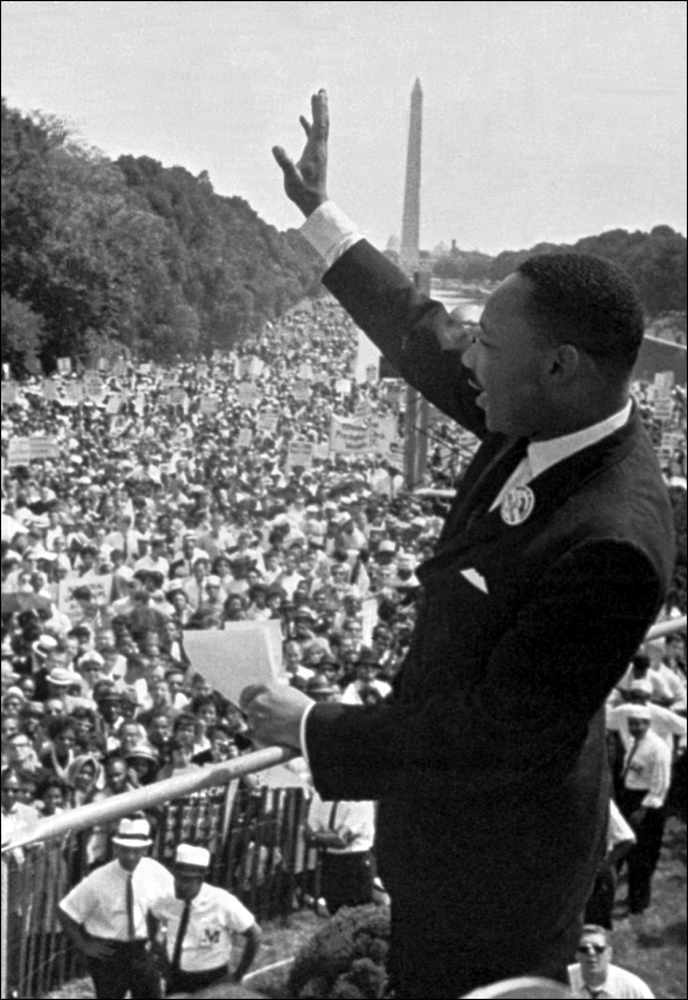
An’ın aciliyetini hafife almak, ulus için ölümcül olacaktır. Siyahların haklı memnuniyetsizliğinin bunaltıcı sıcağı, adalet ve eşitliğin canlandırıcı sonbaharı gelene kadar geçmeyecektir. 1963, bir son değil, bir başlangıçtır. Siyahların biraz sakinleşmeye ihtiyacı olduğunu ve şimdi memnun olacaklarını düşünenler, ulusun her zaman olduğu gibi işine gücüne dönmesi durumunda, nahoş bir şekilde bu rüyadan uyanacaklar.
Siyahlara vatandaşlık hakkı verilene kadar Amerika’da dinginlik ve sükunet olmayacak. Ayaklanmanın fırtınası, adaletin ışıltılı günü gelene kadar ulusumuzun temellerini sarsmaya devam edecek. Ama adalet sarayına giden kritik eşikte duran yoldaşlarıma söylemem gereken bir şey var: Barışçıl konumumuzu kazanma sürecinde ilerlerken, kanunsuz işlerin sorumlusu olmayalım. Özgürlüğe duyduğumuz susuzluğu, şiddet ve öfke kadehinden içerek gidermeye çalışmayalım. Mücadelemizi daima asalet ve disiplin düzleminde götürmeliyiz. Yaratıcı protestomuzun, fizikî şiddete doğru dejenere olmasına izin vermemeliyiz. Bir daha ve bir daha, fiziksel güce ruh gücüyle karşı koymanın yüksek onurunu yaşamalıyız.
Bugün buradaki varlıklarıyla da kanıtlandığı üzere, beyaz dostlarımızın çoğu, kaderlerinin bizim kaderimizle bağlantılı olduğunu idrak etmiş oldukları için, siyah toplumu saran o yeni kavgacılık ruhu, bizi tüm beyazlara karşı güvensizliğe sürüklememeli. Onlar da özgürlüklerinin etle tırnak gibi bizim özgürlüğümüze bağlı olduğunu anladılar. Yalnız yürüyemeyiz. Ve yürürken de, daima ilerleyeceğimize dair söz vermeliyiz. Geri dönemeyiz.
Sivil hak âşıklarına ‘Ne zaman tatmin olacaksınız?’ diye soranlar var. Siyahlar dile getirilmesi bile güç polis vahşetinin kurbanı olmaya devam ettiği sürece, asla tatmin olamayız. Seyahat etmenin yorgunluğundan ağırlaşmış bedenlerimiz şehirlerin otellerinde ve otoyol kenarlarındaki motellerde konaklayamadığı sürece asla tatmin olamayız. Siyahların tek devridaimi, küçük bir gettodan büyük olanına geçmek olduğu sürece asla tatmin olamayız. Çocuklarımız, ‘Sadece beyazlar için’ yazan uyarılarla benliklerinden mahrum bırakıldığı, asaletleri gasp edildiği sürece asla tatmin olamayız. Missisippi’deki siyah adam oy veremediği, New York’taki siyah adam oy verecek bir şeyi olmadığına inandığı müddetçe memnun olamayız ve olmayacağız da. Hayır, hayır, memnun değiliz ve adalet sular seller gibi akmadığı, doğruluk bir şelale gibi gürlemediği sürece memnun olmayacağız.
Bazılarınızın buraya dehşetli yargılamaların ve musibetlerin ardından gelmiş olduğunu göz ardı ediyor değilim. Bazılarınız, daracık hücrelerinden çıkarak geldi. Bazılarınız, özgürlük talepleriniz sonucu yargı sağanakları tarafından hırpalandığınız, polis şiddetinin rüzgârları ile sendelediğiniz yerlerden geldiniz. Yaratıcı zulüm yöntemlerinin kurbanı oldunuz. Hak edilmemiş zulmün kurtuluşa götürdüğü inancıyla yolunuza devam edin. Mississippi’ye dönün, Alabama’ya dönün, Güney Carolina’ya dönün, Georgia’ya dönün, Louisiana’ya dönün, bir şekilde bu durumun değişebileceğini ve değişeceğini bilerek kuzey şehirlerinin kenar mahallelerine ve gettolarına dönün.
Gelin, ümitsizlik çukuruna düşmeyelim. An’ın getirdiği hayal kırıklıklarına ve zorluklara rağmen, sizlere sesleniyorum arkadaşlarım!
Tüm bunlarla birlikte bir rüya görüyorum. Bu, köklerini Amerikan rüyası içinde bulan bir rüya.
Bir rüya görüyorum; bir gün bu ulus ayağa kalkacak ve sorgusuz sualsiz kabullendiğimiz tüm insanların eşit yaratıldığı gerçeğini tam anlamıyla sonuna kadar hayata geçirecek!
Bir rüya görüyorum; bir gün Georgia’nın kızıl tepelerinde eski kölelerin ve eski köle sahiplerinin çocukları, bir kardeşlik masasının etrafında birlikte oturabilecekler!
Bir rüya görüyorum; bir çöl şehri olan, adaletsizliğin ve baskının ısısıyla yanıp kavrulan Mississippi eyaleti bile, bir gün bir adalet ve özgürlük vahasına dönüşecek!
Bir rüya görüyorum; bir gün dört ufak çocuğum, derilerinin rengiyle değil, karakterleriyle değerlendirildikleri bir ülkede yaşayacaklar.
Bugün bir rüya görüyorum!
Bir rüya görüyorum; bir gün, dudaklarından sürekli ‘tecrit’ ve ‘yasaklama’ kelimeleri dökülen valisi ve acımasız ırkçılarıyla Alabama’da; işte o Alabama’da küçük siyah erkek çocukları ile küçük siyah kız çocukları, küçük beyaz erkek çocukları ve küçük beyaz kız çocuklarıyla kardeşçe el ele tutuşabilecekler.
Bugün bir rüya görüyorum!
Bir rüya görüyorum; bir gün her vadi yükselecek, her tepe ve dağ alçalacak, girintili çıkıntılı yerler dümdüz olacak, eğri büğrü yerler dosdoğru olacak, Tanrı’nın ihtişamı kendisini gösterecek ve tüm nefsler bunu hep beraber görecek!
Bu bizim ümidimiz. Bu güneye beraberimizde götüreceğimiz inancımız. Bu inançla ümitsizlik dağından bir ümit taşı yontacağız.
Bu inançla ulusumuzun ahenksiz akordunu güzel bir kardeşlik senfonisine dönüştüreceğiz.
Bu inançla, bir gün özgür olacağımızı bilerek, birlikte çalışabileceğiz, birlikte dua edebileceğiz, birlikte mücadele edebileceğiz, birlikte hapse girebileceğiz, özgürlük için birlikte ayağa kalkabileceğiz.
O gün, o gün, Tanrı’nın tüm kullarının yeni bir anlayışla şarkı söyleyecekleri gün olacak.
‘Ülkem, ülkem
Özgürlüğün güzel yurdu seni söylüyorum.
Babalarımızın öldüğü,
Hacıların gururu ülkem
Her bir dağından özgürlük çınlasın!’
Ve Amerika bir gün büyük bir ülke olacaksa, bu gerçekleşmeli.
O halde New Hampshire’ın görkemli tepeciklerinden çınlasın özgürlük!
Bırakın, New York’un yüce dağlarından çınlasın özgürlük!
Bırakın, Pennsylvania’nın yüksek Allegheny Dağları’ndan çınlasın özgürlük!
Bırakın, Colorado’nun karla kaplı zirvelerinden çınlasın özgürlük!
Bırakın, California’nın olağanüstü doruklarından çınlasın özgürlük!
Ama bu kadar yetmez.
Bırakın, Georgia’nın Stone Dağı’ndan çınlasın özgürlük!
Bırakın, Tennessee’nin Lookout Dağı’ndan çınlasın özgürlük!
Bırakın, Mississippi’nin her bir tepesinden ve kubbesinden, her bir dağından çınlasın özgürlük. Bırakın çınlasın!
Ve bu gerçekleştiğinde, özgürlüğün çınlamasına izin verdiğimizde, her bir köyde ve kasabada, her eyalette ve şehirde çınlamasına izin verdiğimizde; Tanrı’nın tüm kullarının, siyahların ve beyazların, Yahudilerin ve ateistlerin, Protestanların ve Katoliklerin el ele tutuşup siyahların o eski ilahisini; ‘Nihayet özgürüz, nihayet özgür! Tanrım sana şükürler olsun en sonunda özgürüz!’ ilahisini söyleyebilecekleri günün gelmesini çabuklaştırabileceğiz.”
28 Ağustos 1963
Ayetullah HUMEYNİ
“Hain şeytan Muhammed Rıza Pehlevi kaçtı.”
‘Yaklaşık bir sat önce tüm dünya, Şah Rıza Pehlevi’nin yetkilerini geçici bir konseye devrederek İran’ı daimî olarak terk etmeye razı olduğu şeklindeki haberlerle sarsıldı…’
29 Aralık 1978’de ajanslar buna benzer flaş haberler geçiyordu. İran’daki Şah Muhammed Rıza Pehlevi rejimi, bir anda yıkıldığı 1978 Aralık ayına kadar Ortadoğu’daki en istikrarlı hükümet olarak değerlendiriliyordu. 1919’da doğan Muhammed Rıza, 1941’de Pers İmparatorluğu’nun tahtına oturmuştu. 1950’lilerin başında İran Başbakanı Muhammed Musaddık, Şah’ın Batı yanlısı politikalarına meydan okumaya başlayınca, 1953’te Amerikan ve İngiliz gizli servislerinin ortaklaşa kotardığı ‘Ajax Operasyonu’ ile devrildi. Şah Pehlevi, Batı ile olan sağlam ilişkilerini sürdürdü ve 60’lı yıllarda liberal tonlar taşıyan, Amerikan destekli ‘Beyaz Devrim’ ile kendince İran’ı modernize etmeye girişti.
İslamî liderler, özellikle de Şii din adamı Ayetullah Ruhullah Musavi Humeyni, İran’ın Batılılaştırılması olarak gördükleri bu girişimleri sert bir dille eleştiriyorlardı. 24 Eylül 1902 doğumlu Humeyni, zamanla İslamî muhalefetin en etkin ismi olarak öne çıkmıştı. Söylemleri sonucu giderek arttırdığı etkisi Pehlevi rejimini tehdit etmeye başlayınca, Türkiye’ye, Bursa’ya sürgün edildi. Humeyni Türkiye’de kaldığı bir yıl boyunca daha çok kitap yazdı. Bursa’nın ardından sürgün hayatına, Irak hükümetinin de onayıyla Irak’ın Necef kentinde devam etmeye başladı. Şah, Humeyni’nin Irak’tan da uzaklaştırılmasına karar verdi. Zira Necef, giderek Şah karşıtlığının merkezi olmaya başlamıştı.
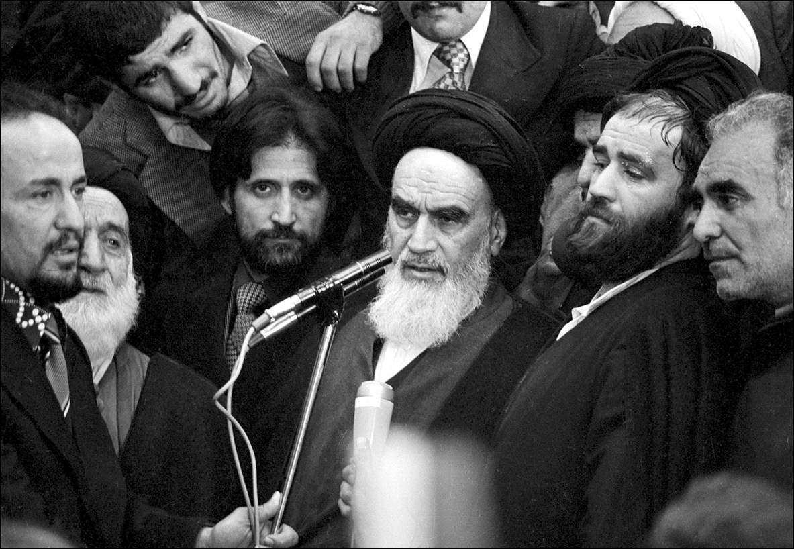
Kaynak: Associated Press
Irak ve İran Dışişleri Bakanlarının 24 Eylül 1978’de yaptıkları toplantının ardından Humeyni’nin Necef’teki evi kuşatıldı. Politik faaliyetlerinden vazgeçmesi durumunda Humeyni’nin ülkede kalmasına izin verilecekti. Humeyni bu koşulu reddetti. 3 Ekim’de Kuveyt’e hareket etmesine rağmen Kuveyt hükümeti, Humeyni’nin ülkeye girmesine izin vermedi. Cezayir, Lübnan ve Suriye seçenekleri üzerinde durulmasına karşın, Humeyni Paris’e gitti. Neauphle-le-Chateau’daki mütevazı bir eve yerleşen Humeyni, o tarihten itibaren Batı medyasının bir numaralı gündem maddesi olmuştu. Yaygın medya desteğini de arkasına alan Humeyni, Paris’ten Pehlevi rejimini bombardıman ediyordu. Bu esnada ülkedeki hoşnutsuzluk arttıkça, Şah, gizli polis teşkilatı Savak’ı kullanarak İslamcı muhalefeti şiddet kullanarak bastırmaya çalışıyordu.
Bu durum İran’daki öğrenci ve entelektüellerin de rejime karşı seslerini yükseltmesine sebep oldu. Hoşnutsuzluk, Beyaz Devrim’in ekonomik getirilerinden sadece ülkeyi yöneten seçkinlerin istifade ettiğini düşünen fakir ve orta sınıf arasında hızla yayıldı. 1978 yılına gelindiğinde İran’ın değişik şehirlerinde Şah karşıtı gösteriler patlak verdi. Eylül’de Şah’a bağlı güvenlik güçleri, büyük bir gösterici kitlesinin üzerine ateş açınca yüzlerce kişi öldü, binlercesi de yaralandı. İki ay sonra binlerce kişi Tahran sokaklarına döküldü ve bankalar, içki satan dükkânlar, lüks oteller ve heykeller gibi Batı’yı çağrıştıran sembollere saldırmaya başladı.
Humeyni, Şah’ın bir an evvel devrilmesi çağrısında bulundu. 11 Aralık’ta bir grup asker ayaklanarak Şah’ın güvenlik güçlerine saldırdı. Bu esnada İran’da Ulusal Cephe’den Dr. Şaphur Bahtiyar Başbakanlığa atanmıştı. İşlerin sarpa sarmaya başladığını fark eden Şah, 16 Ocak 1979’da ülkeyi terk etti. Air France’a ait bir uçakla 31 Ocak’ta Tahran’a inen Humeyni, 3 milyonluk olağanüstü bir kalabalık tarafından karşılandı. Halk devrimi tüm hızıyla devam ediyordu. Humeyni 5 Şubat’ta Mehdi Bezirgan’ı geçici hükümetin Başbakanlığına atadı. Bu esnada Şah’ın Başbakanı Bahtiyar da görevinin başındaydı!
10 Şubat’ta Humeyni’nin emriyle sokağa çıkma yasağı kaldırıldı. Bir sonraki gün Yüksek Askerî Konsey, Bahtiyar hükümetine verdiği desteği çektiğini ilan etti. Böylelikle Şah yanlısı ordu, olaylarda tarafsız kalmış oluyordu. Hatta başta hava kuvvetleri mensupları olmak üzere Humeyni tarafına kaymalar başlamıştı. Ve nihayet 12 Şubat 1979’da, Şah yanlıları ve Bahtiyar taraftarları ile Humeyni yandaşları arasında yaşanan şiddetli sokak çatışmalarının ardından Şah rejimi tüm organlarıyla yıkıldı. Devrim başarıya ulaşmıştı. 30-31 Mart tarihlerinde yapılan referandumda halkın büyük bir çoğunluğu İslamî bir Cumhuriyet kurulması yönünde oy kullandı. Bir gün sonra Humeyni, 1 Nisan’ı ‘Allah’ın hükümetinin ilk günü’ olarak ilan etti. Humeyni artık çok geniş yetkilere sahip, ülkenin en büyük lideri olarak Veli-i Fıkh unvanını almıştı.
Ayetullah Humeyni, 3 Haziran 1989’da iç kanama sonucu hayatını kaybettiğinde, İslam Devrimi de günümüzde hâlâ devam eden yeni bir safhaya girmiş oldu.
Devrik lider Muhammed Rıza Pehlevi ise, ülkeden kaçtıktan sonra sırasıyla Mısır’a, Fas’a, Bahama Adaları’na, Panama’ya ve kanser tedavisi görmek için Amerika’ya gitti. Rıza Pehlevi’nin Amerika’ya gitmesi üzerine, 4 Aralık’ta Tahran’daki Amerikan Büyükelçiliği basıldı ve çalışanlar rehin alındı. Elçiliği basanlar, Humeyni’nin de onayıyla, Amerika’dan Şah’ın teslim edilmesini istediler. Amerika, bu talebi reddedince 52 elçilik görevlisi 444 gün boyunca rehin tutuldu. Şah, Temmuz 1980’de Mısır’da öldü.
Şüphesiz ki, İran İslam Devrimi, arkasına aldığı büyük halk desteği ile devrim tanımlamasının hakkını veriyordu. Kaldı ki, söz konusu devrim Ortadoğu’nun stratejik yapısını değiştiren en önemli olaylardan biriydi. Ortadoğu’da taşlar tamamen yerinden oynamıştı. 2500 yıllık saltanat tarihe karışmış, bunun yerini halifelik ile yönetilen İslamî bir rejimi almıştı. Tarihe karışan sadece Şahlık değil, aynı zamanda Amerika’nın Ortadoğu’daki en büyük müttefiki ve buna paralel olarak da Amerikan çıkarlarıydı. Bunun yanı sıra Amerikan karşıtı ve İsrail’i tehdit eden yeni bir güç odağı daha sahne almıştı. Bu rahatsızlık devrimden kısa bir süre sonra patlak veren İran-Irak Savaşı’nın da zeminini hazırlıyordu.
İran’ın rejim ihracıyla kendi iktidarlarını tehdit edeceğinden çekinen Ortadoğu monarşilerinin ve yeni tehdidi bertaraf etmek isteyen Amerika’nın da desteğiyle İran’a saldıran Irak, yüz milyarlarca doların Batılı silah satıcılarının kasasına girmesine, her şeyden önce her iki taraftan bir milyon Müslüman’ın hayatını kaybetmesine neden olmuştu. Taraflar yenişemedi ama seküler bir yapıya sahip Saddam rejimi, İran karşısında sürekli kollandı ve silahlandırıldı. İştahı kabaran Saddam, 1991’de Kuveyt’i işgal edince, Amerika liderliğindeki Batılı koalisyon Kuveyt’i kurtardı(!) ve Amerika tam anlamıyla Körfez’e yerleşti. 1991’de başlayan bu süreç, 2003’te Irak’ın Amerika ve İngiltere tarafından tamamen işgali ile yeni bir safhaya girmiş oldu. Amerika halen İran’daki rejimin devrilmesi için çalışmalarına devam ediyor. Bu çabaların karşısında da İran rejimi ile sıkı ilişkiler geliştiren Avrupa ülkeleri ve Rusya’nın karşı hamleleri göze çarpıyor. İran ise, bazı yönleriyle gerilemeye başlayan ve baskıcı bir kimliğe bürünen devrim sürecini demokratik bir şekilde dönüştürmeye çalışan ılımlı İslamcılarla statüko yanlısı İslamcıların mücadelesine sahne olmakta.
Peki tüm bu gelişmelerin çıkış noktası olduğunu söyleyebileceğimiz İran İslam Devrimi’nin dönüm noktası neydi? Hiç şüphe yok ki, aynı zamanda iyi bir hatip olan Humeyni’nin, Şah’ın ülkeyi terk etmesiyle ortaya çıkan iki hükümetli kaos ortamında yaptığı konuşmayla, Şah yanlısı orduyu kendi yanına çekerek devrimin başarıya ulaşmasını sağlayan güç dengesini kendi lehine çevirmesiydi. İşte Humeyni’nin ‘legalite-illegalite’ çerçevesine oturttuğu o tarihî konuşma.
* * *
“Biliniz ki; hain şeytan Muhammed Rıza Pehlevi kaçtı. Kaçtı ve her şeyi yağmaladı. Ülkemizi mahvedip, mezarlıklarımızı doldurdu. Ülkemizin ekonomisini batırdı. Gelişme adına uygulamaya soktuğu projeler bile ülkemizi on yıl geriye götürdü. Kültürümüzü baskı altına aldı, insanlarımızı aşağıladı ve tüm insan kaynaklarımızı tüketti. Bu adam, hükümeti ve meclisi illegaldir. Eğer iktidarda kalmaya devam ederlerse, onlara suçlu muamelesi yapacağız ve suçluların yargılandığı gibi yargılanacaklar. Kendi hükümetimi tayin edeceğim. Tokadım bu hükümetin yüzünde patlayacak. Hükümeti, halkın desteğiyle belirleyeceğim, çünkü bu halk beni kabul ediyor.
Bu hükümetin lideri ve babası illegal bir şekilde iktidarda olan bir rejimi temsil ediyor. Bundan dolayı bu hükümet illegaldir. Mecliste çalışması için atanan milletvekilleri illegaldir. Meclisin kendisi ve Senato da illegaldir. Şah tarafından atanan birisi nasıl legal olabilir? Hepsine illegal olduklarını ve gitmeleri gerektiğini söylüyoruz. Burada, kendisini legal bir hükümet olarak sunan bu hükümetin gerçekten de illegal olduğunu ilan ediyoruz. Hatta bu hükümetin üyeleri bile Bakan olmayı kabul etmeden önce tüm bu yapının illegal olduğunu kabul ediyorlardı.
Peki, ne oldu da şu an legal olduklarını öne sürüyorlar? Bu beyefendi, Dr. Bahtiyar, kendisini kabul etmiyor. Arkadaşları da onu kabul etmiyor. Halk ve ordu da onu kabul etmiyor. Sadece Amerika onu destekliyor ve orduya da onu desteklemesini emrediyor. İngiltere de onu destekliyor ve desteklenmesi gerektiğini söylüyor. Eğer birisi halkın arasına girip araştırsa, toplum katmanları arasında tek bir kişinin bile bu adamı desteklemediğini görecektir. Ama bu adam, bir ülkede iki hükümet olamayacağını söylüyor. Tabii ki her halükârda bu ülkede iki hükümet olmadığı aşikâr. İllegal hükümet gitmeli.
Siz illegalsiniz. Bizim belirlediğimiz hükümet, halkın desteğine ve Allah’ın rızasına dayanıyor. Eğer hükümetinizin legal olduğunu iddia ediyorsanız, o halde Allah’ı ve halkın iradesini inkâr ediyor olmalısınız. Birisi bu adama yerini göstermeli.
Ordumuzun bağımsız olmasını istiyoruz. Siz ordu komutanları, siz generaller ve orgeneraller, bağımsız olmak istemez miydiniz? Ordumuzun bağımsız olmasını istediğimizi söylemenin ödülü bu mu olacak? Yabancı güçlerden emir almak yerine sadece kendi kendinizin efendisi olmanızı istediğimiz için caddelerde gençlerimizi öldürerek bizleri cezalandırmanız doğru mu? Bu noktada halkın saflarına katılan ordu mensuplarına teşekkür etmek istiyorum. Çoktan bizlere katılmış güvenlik kuvvetlerine, hava kuvvetleri mensuplarına şükranlarımızı sunuyor ve geride kalanlara da bize katılmaları çağrısında bulunuyoruz. Yabancı efendilerinizi başınızdan atın ve böyle yaparsanız gelip sizi asacağımızdan korkmayın. Bu tür söylentiler düşmanlarınız tarafından yayılıyor. Çoktan bizlere katılmış askerleri, subayları, ulusal güvenlik muhafızlarını ve pilotları görmüyor musunuz? Onları seviyor ve onlara saygı duyuyoruz, güçlü ordumuzu bir bütün olarak muhafaza etmek istiyoruz. Güçlü bir ülke istiyoruz. Ordunun yapısını muhafaza etmesini, ama milletin hizmetinde olmasını istiyoruz.
Mademki ordu güçleri geri çekildi, politik gelişmeler karşısında tarafsızlığını deklare etti ve millete olan desteğini dile getirdi; birlikler kışlalarına döndüğünde sevgili ve cesur halkımızdan beklenen, kanun ve düzeni devam ettirmektir. Felaket yaratmaya çalışabilecek olan sabotajcıları durdurmalı ve onlara dinî ve insanî yükümlülüklerini hatırlatmalısınız. Hiç kimsenin yabancı elçiliklere saldırmasına izin vermeyin. Allah göstermesin, ordu tekrar sahneye çıkarsa, o zaman tüm gücünüzle kendinizi korumanız gerekir. Buradan üst düzey ordu komutanlarına seslenmek istiyorum. Eğer ordunun saldırganlığını durdurur ve birliklerinize halka ve halkın legal İslamî hükümetine katılma talimatı verirseniz, orduyu milletin bir parçası olarak kabul edeceğiz, aksi takdirde tam tersi olacak.”
Şubat 1979
Ronald REAGAN
“Yıkın bu duvarı Bay Gorbaçov!”
ABD Başkanı Ronald Reagan, 12 Haziran 1987’de Batı Berlin’i ziyaret etti. Soğuk Savaş’ın nihaî aşamasına girildiği, Sovyet güdümündeki Doğu Bloku ülkelerinde ufak ufak özgürlük hareketlerinin filizlendiği ve her şeyden önce Sovyetler Birliği Komünist Partisi’nin yeni Genel Sekreteri Mihail Gorbaçov’un komünist ideolojinin geleceği hakkında seleflerinden farklı şeyler düşündüğünün hissedilmeye başlandığı bir dönemde gerçekleşen bu ziyaret, özgürlük taraftarlarına verilen büyük desteği sembolize ediyordu.
Sovyetler Birliği’ni ‘Şeytan İmparatorluğu’ sözleriyle isimlendiren ve komünist ideolojiye karşı en keskin tavırları sergileyen ABD Başkanı olarak dikkat çeken Reagan, o gün, Federal Almanya Cumhurbaşkanı Richard von Weizacker’in Batı Berlin’deki rezidansı Bellevue Şatosu’nda Alman Şansölyesi Helmut Kohl ve Batı Berlin Belediye Başkanı Eberhard Diepgen ile bir araya gelmiş ve ardından da doğu balkonundan bir süre Berlin Duvarı’nı izlediği eski parlamento binası Reichstag’ı ziyaret etmişti.
Saatler 14.20’yi gösterdiğinde, Berlin’in iki yakasını birbirinden ayıran tarihî Brandenburg Kapısı önündeki platformda yerini alan Reagan, eski bir Hollywood yıldızı olmasının getirdiği teatral becerileri de kullanarak, “özgürlük mücadelesi” tarihinin en etkili konuşmalarından birini gerçekleştirecekti. Halen dahi Sovyetler Birliği’ni dize getiren adam olarak hatırlanan Reagan’ın bu ateşli konuşması, hiç şüphe yok ki, 1987-1991 yılları arasında yaşanan gelişmelerle hem Soğuk Savaş’ı hem de Sovyetler Birliği’ni tarih sahnesinden indiren özgürlük ateşinin ilk kıvılcımını çakmıştı.
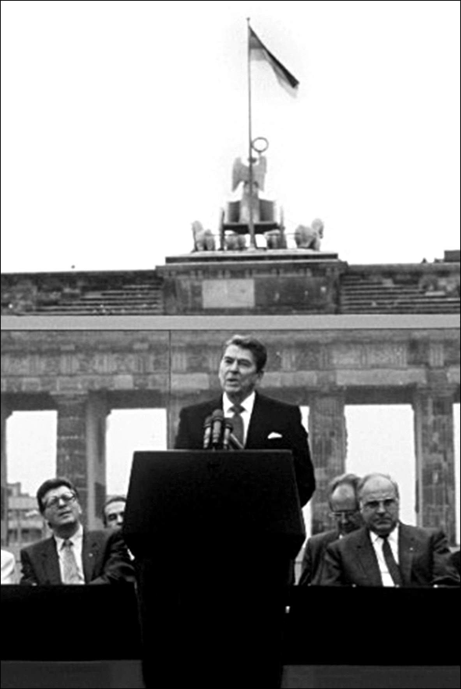
* * *
“Şansölye Kohl, Belediye Başkanı Diepgen, Bayanlar ve Baylar!
24 yıl önce Başkan Kennedy, Berlin’i ziyaret ederek bu şehrin insanlarına ve dünyaya seslenmişti. O tarihten sonra Berlin’e iki Amerikan Başkanı daha geldi. Ve bugün bizzat ben şehrinize ikinci ziyaretimi yapıyorum.
Biz Amerikan Başkanları Berlin’e geliyoruz, çünkü bu özgürlük şehrinde konuşmak görevimiz. Ama itiraf etmeliyim ki, bizi buraya getiren başka sebepler de var: Grunewald ve Tiergarten’in güzelliği, hepsinden önemlisi de cesaretiniz ve kararlılığınız. Belki de kompozitör Paul Lincke, Amerikan Başkanlarının hislerine çok iyi tercüman olmuştu. Görüyorsunuz ki, benden önceki Başkanlar gibi ben de bugün buraya geldim. Çünkü nereye gitsem, ne yapsam: “Ich hab noch einen Koffer in Berlin!”5
Bugün buradaki birlikteliğimiz, tüm Batı Avrupa ve Kuzey Amerika’ya yayınlanıyor. Ama biliyorum ki aynı zamanda Doğu’da da izleniyor ve dinleniyor. Tüm Doğu Avrupa’da bizi dinleyenlere özel bir şeyler söylemek istiyorum: Her ne kadar sizinle olamasam da, tıpkı burada beni dinleyenler gibi, sizlere de sesleniyorum. Batı’daki vatandaşlarınızla birlikte olduğum için, sizlerle de birlikte oluyorum. Bu kararlılıkla şu sarsılmaz inancı bir kez daha dile getiriyorum: “Es gibt nur ein Berlin.”6
Ardımda bu şehrin özgür sektörlerini çeviren, tüm Avrupa kıtasını bölen bariyerler sisteminin bir parçası olan bir duvar yükseliyor. Bu bariyerler, güneyde Baltık’tan itibaren dikenli teller, beton duvarlar, bekçi köpekleri ve kontrol kuleleri ile bir yara izi gibi Almanya’yı boydan boya kesiyor.
Daha güneyde, görünmeyen, aşikâr olmayan bir duvar var. Yine orada da halen sıradan insanlara totaliter bir sistemin iradesini dayatma enstrümanı olarak kullanılan, seyahat özgürlüğünü sınırlayan silahlı nöbetçiler ve kontrol noktaları bulunuyor. Şimdi burada, haber görüntülerinin ve TV ekranlarının kıtanın bu acımasız bölünmüşlüğünü dünyanın zihnine kazıdığı bu Berlin’de, bu duvar, en keskin şekli ile kendini gösteriyor.
Brandenburg Kapısı’nın önünde dikilen her insan, vatandaşlarından ayrı düşürülmüş bir Almandır. Herkes, bir yaraya bakmaya zorlanan bir Berlinlidir. Cumhurbaşkanı von Weizsacker ‘Brandenburg Kapısı kapalı olduğu sürece, Alman sorunu açık olacak’ dedi. Ben de bugün diyorum ki: Kapı kapalı olduğu sürece, bu duvar yarasının durmasına izin verildiği sürece, açık olan sadece Alman sorunu değil, tüm insanların özgürlüğü sorunudur. Yine de buraya dövünmeye gelmedim. Çünkü Berlin’de, bu duvarın gölgesinde bile bir ümit ışığı, bir zafer mesajı görüyorum.
1945’in bu mevsiminde, Berlin halkı hava saldırısı sığınaklarından çıktığında bir yıkımla karşılaştı. Binlerce mil uzaklıktaki Amerikan halkı, yardım için elini uzattı. Ve 1947’de bildiğiniz gibi Dışişleri Bakanı George Marshall, daha sonradan Marshall Planı olarak isimlendirilen programın başladığını ilan etti. Marshall tam olarak 40 yıl önce bu ayda yaptığı konuşmada ‘Politikamız, herhangi bir ülke ya da doktrine değil; açlığa, fakirliğe, çaresizliğe ve kaosa karşıdır’ demişti.
Birkaç ay önce Reichstag’da, Marshall Planı’nın 40. yılı dolayısıyla yapılan bir sergi gördüm. Tamamen yanmış, virane olmuş ama yeniden yapılmakta olan binanın üzerindeki bir levha beni çok etkiledi. O anda anladım ki benim kuşağımdan Berlinliler, o zamanlar şehrin Batı yanını boydan boya kaplayan bunun gibi levhaları gördüklerini hatırladılar. Levhada: ‘Özgür dünyayı kuvvetlendirmek için buraya Marshall Yardımı yapılıyor’ yazıyordu.
Batı’da güçlü, özgür bir dünya. Bu rüya gerçek oldu. Yıkıntılar arasından doğrulan Japonya, ekonomik bir dev oldu. İtalya, Fransa, Belçika… Neredeyse Batı Avrupa’daki her ulus, politik ve ekonomik dirilişi yaşadı; Avrupa Ekonomik Topluluğu kuruldu.
Batı Almanya’da ve burada Berlin’de, ekonomik bir mucize, Wirtschaftswunder7 gerçekleşti. Adenauer, Erhard, Reuter ve diğer liderler özgürlüğün; sadece gazetecilere konuşma hürriyeti tanındığında gerçeğin filizlenebileceği ve sadece çiftçiler ve işadamları hürriyeti tattıklarında zenginliğin ortaya çıkabileceği şeklinde özetlenebilecek, pratikteki anlamını kavradılar.
Alman liderler ithalat-ihracat tarifelerini düşürdü, serbest ticareti yaygınlaştırdı, vergileri azalttı. Sadece 1950-1960 arası, Batı Almanya ve Berlin’deki yaşam standardı ikiye katlandı. 40 yıl önce enkazların olduğu bu yerde, Batı Berlin’de, bugün Almanya’daki her şehirde görülen görkemli ekonomik çıktılar göze çarpıyor; kalabalık ofisler, güzel evler ve apartmanlar, geniş bulvarlar ve geniş arazilere yayılan park alanları. Bir şehrin kültürünün yerle bir edildiği yerde bugün, iki görkemli üniversite, orkestralar, bir opera, tiyatrolar ve müzeler yükseliyor. Talep olan yerde bolluk var; yiyecek, elbise ve otomobiller. Yıkımdan ve iflastan çıkan siz Berlinliler, özgürlük içinde, yeryüzünün en mükemmel kentlerinden biri olan bu şehri tekrar yapılandırdınız.
Sovyetlerin başka planları olabilirdi. Ama dostlarım, göz önünde bulundurmadıkları bazı şeyler de vardı; Berliner Herz, Berliner Humor, ja, und Berliner Schnauze.8
1950’de Kruşçev, ‘Sizi gömeceğiz’ tehdidini savurmuştu. Ama bugün Batı’da, tüm insanlık tarihinde öngörülmemiş bir refah ve bereket seviyesine ulaşmış hür bir dünya görüyoruz. Komünist dünyada ise başarısızlık, teknolojik geri kalmışlık, düşen sağlık standartları ve hatta beslenme gibi en temel ihtiyaçlarda bile yetersizlik göze çarpıyor. Sovyetler Birliği bugün bile kendi kendisini beslemekten aciz. Bu geçen 40 yılın ardından tüm dünyanın önünde görkemli ve kaçınılmaz bir gerçek duruyor: Özgürlük, zenginliğe götürüyor. Özgürlük, uluslararasındaki köklü nefretlerin yerine medeniyeti ve barışı getiriyor. Özgürlük, muzaffer oluyor. Ve bir şekilde Sovyetler de, sınırlı da olsa, özgürlüğün önemini anlama noktasına gelebilir. Moskova’dan reform ve açıklık politikalarına yönelik yeni haberler geliyor. Bazı politik tutuklular serbest bırakılıyor. Bazı yabancı yayın organlarının haberleri sansürlenmiyor. Bazı ekonomik girişimlerin, devlet kontrolünden bağımsız, daha özgür şekilde faaliyet göstermesine izin veriliyor.
Bunlar Sovyet devletindeki büyük değişimlerin öncüsü mü? Yoksa Batı’da yanlış beklentiler oluşturmayı ya da Sovyet sistemini değiştirmeden takviye etmeyi hedefleyen sembolik jestler mi? Özgürlük ve güvenliğin birlikte yürüdüğüne, insan hürriyetinin ilerlemesinin sadece dünya barışını kuvvetlendireceğine inandığımız için bu değişimi ve açıklığı memnuniyetle karşılıyoruz. Sovyetlerin verebileceği, yanlış anlaşılmayacak, özgürlük ve barış ülküsünü büyük ölçüde ileriye taşıyabilecek bir işaret var.
Genel Sekreter Gorbaçov, eğer barıştan söz ediyorsanız, eğer Sovyetler Birliği ve Doğu Bloku için zenginliği hedefliyorsanız, eğer liberalleşmeyi hedefliyorsanız, buraya, bu kapıya gelin! Bu kapıyı açın Bay Gorbaçov! Yıkın bu duvarı Bay Gorbaçov!
Bu kıtanın başına bela olan savaş korkusunu ve bölünmüşlüğün acısını anlıyorum. Ve size bu engellerin üstesinden gelmek için ülkemin gayret göstereceğini vaat ediyorum.
Kendimizi sağlama almak için Batı’da Sovyet yayılmasına karşı direnmeliyiz. Sağlamlığından şüphe edilmeyen bir savunma bloğu kurmalıyız. Ve bununla birlikte barıştan söz ediyorsak; o halde her iki taraftaki silahların sayısını azaltmaya gayret etmeliyiz.
10 yıl öncesinden bu yana Sovyetler, Avrupa’daki her başkenti vurabilecek kapasitede yüzlerce yeni ve daha ölümcül SS-20 nükleer füzeleriyle, oldukça korkunç ve yeni bir tehditle Batı ittifakına meydan okuyor. Batı ittifakı ise, Sovyetler daha iyi bir çözüm için görüşmeye ikna olana; daha açık deyişle, her iki bloktaki bu türden silahların ortadan kaldırılmasına razı olana dek, kendisini karşı savunma girişimine adayarak bu tehdide karşı koyuyor. Sovyetler aylar boyunca, samimi bir şekilde pazarlık yapmaya yanaşmadı. Buna karşılık ittifak, karşı savunmaya hazırlanmaya başladığında çok zor günler yaşadık, tıpkı 1982’de bu şehre yaptığım ziyarette karşılaştığım türden protestolara maruz kaldık. Ve Sovyetler masadan çekildi. Ama tüm bu süreçte ittifak sağlam durdu.
O gün protesto etmiş olanları ve bugün protesto edenleri şu gerçeğin hakkını vermeye davet ediyorum: Güçlü kaldığımız için Sovyetler masaya tekrar oturdu. Ve yine güçlü kaldığımız için bugün sadece silahlanmayı sınırlama değil, aynı zamanda ilk kez tüm nükleer silah çeşitlerini yeryüzünden kaldırma ihtimaline yaklaşmış bulunuyoruz.
Ben burada konuşurken NATO Bakanları bu silahların ortadan kaldırılmasına yönelik teklifimizin gelişimini değerlendirmek için İzlanda’da bir araya geliyorlar. Cenevre görüşmelerinde de, stratejik saldırı silahlarının sayısında büyük kesintilere gidilmesini teklif ettik. Ve buna benzer şekilde Batılı müttefikler, konvansiyonel savaş tehlikesinin azaltılmasına ve kimyasal silahların topyekün yasaklanmasına yönelik geniş kapsamlı tekliflerde bulundular. Bu silah indirimlerinin peşinde koşarken, aynı zamanda sizlere, Sovyet saldırganlığını, baş gösterebileceği her türlü aşamada caydırma yeteneğimizi muhafaza etmeye devam edeceğimize dair söz veriyorum. Bu esnada müttefiklerimin işbirliğiyle, sadece saldırgan misillemeleri önlemekle kalmayıp aynı zamanda tam anlamı ile savunma yapacak, kitleleri hedef almayıp onları sadece koruyacak olan Stratejik Savunma Girişimi’ni de sürdürmekteyiz. Bunlarla Avrupa’nın ve tüm dünyanın güvenliğini arttırmayı hedefliyoruz. Ama bu esnada hayatî bir gerçeği aklımızda bulundurmalıyız: Doğu ve Batı birbirlerine güvenmiyor, çünkü silahlanıyoruz. Silahlanıyoruz, çünkü birbirimize güvenmiyoruz.
Farklılıklarımız silahlarımızla ilgili değil, bilakis özgürlükle ilgili. Başkan Kennedy 24 yıl önce burada konuştuğunda, özgürlük kuşatılmıştı, Berlin kuşatma altındaydı. Ve bugün, üzerindeki tüm bu baskılara rağmen Berlin, özgürlük içinde ayakları üzerinde duruyor. Ve özgürlüğün kendisi, gezegenimizi dönüştürüyor.
Filipinlerde, Güney ve Orta Amerika’da, demokrasi yeniden doğuyor. Pasifik boyunca, serbest pazarlar birbiri ardına ekonomik büyüme mucizelerine imza atıyorlar. Sanayileşmiş ülkelerde, bilgisayar ve iletişim dallarında göze çarpan olağanüstü hızlı gelişmelerin ön ayak olduğu teknolojik bir devrim gerçekleşiyor. Avrupa’da ise sadece bir ülke ile onun kontrolünde olanlar, özgürlük cemaatine katılmayı reddediyorlar. Oysa ikiye katlanmış ekonomik büyüme, bilgi ve yenilik çağında Sovyetler Birliği’nin karşısında tek bir seçenek var: Ya radikal değişiklikler yapacak ya da son kullanma tarihi geçecek. Bundan dolayı bugün, bir ümidi temsil ediyor. Biz Batı’da duranlar, gerçek açıklığı teşvik etme, insanları ayıran engelleri yıkma ve daha güvenli ve daha özgür bir dünya yaratma yolunda Doğu’dakilerle işbirliği yapmak için hazır bir şekilde bekliyoruz.Ve hiç şüphe yok ki, bir başlangıç için, Doğu ve Batı’nın buluştuğu Berlin’den daha iyi bir yer olamaz.
Berlin’in özgür insanları! Geçmişte olduğu gibi bugün de, Birleşik Devletler, 1971’deki Dört Kuvvet Anlaşması’nın tüm yönleriyle uygulanmasının arkasındadır. Gelin, bu şehrin 750. yıldönümünü, geleceğin Berlin’i için daha zengin ve bütün bir yaşama gidecek yolları arama fırsatı olarak kullanalım. Hep birlikte, Federal Cumhuriyet ile Berlin’in 1971 antlaşması ile serbest bırakılan Batı sektörleri arasındaki bağlarını muhafaza edip, geliştirelim.
Bay Gorbaçov’a bir çağrıda bulunuyorum: Şehrin Doğu ve Batı bölümlerini birbirlerine daha da çok yaklaştıralım, yaklaştıralım ki, bütün Berlin’in tüm sakinleri, dünyadaki en görkemli şehirlerden biri olan bu şehirde, hayatla birlikte gelecek olan zenginliklerin tadını çıkarabilsin.
Berlin’i tüm Avrupa’ya, Doğu’ya ve Batı’ya açmak için; şehre yönelik ticarî uçuşları daha uygun, daha rahat ve daha ekonomik hale getirmenin yollarını bularak, gelin bu şehir açısından hayatî önem taşıyan hava akışını genişletelim. Batı Berlin’in, tüm merkezî Avrupa’daki en büyük havacılık merkezlerinden biri olabileceği günü bekliyoruz. Amerika Birleşik Devletleri, Fransız ve İngiliz ortaklarıyla birlikte uluslararası toplantıların Berlin’e getirilmesine yardım etmeye hazırdır. BM toplantıları ve insan hakları, silahsızlanma ya da benzeri konularda düzenlenecek uluslararası işbirliği toplantılarına ev sahipliği yapmak, Berlin açısından tam anlamıyla ideal olacaktır. Geleceğe dönük ümitler yaratmanın, genç beyinleri aydınlatmaktan daha iyi bir yolu yoktur. Bundan dolayı Doğu’daki genç Berlinliler için yazlık öğrenci değişimleri ve buna benzer kültürel organizasyonlara destek vermekten onur duyacağız. Eminim ki Fransız ve İngiliz dostlarımız da aynısını yapacaktır. Ümit ediyorum ki, Doğu Berlin’de de Batı’dan gelecek gençlerin ziyaretlerine destek olabilecek makamlar çıkacaktır.
Son bir teklif, bana en sıcak geleni: Spor, bir eğlence ve yücelme kaynağı. Belki de fark etmişsinizdir; Güney Kore hükümeti, 1988 Olimpiyat Oyunları müsabakalarından bazılarının Kuzey Kore’de yapılmasına izin verilmesini teklif etti. Her türden uluslararası spor müsabakası, bu şehrin her iki tarafında da yapılabilir. Dünyaya bu şehrin açıklığını göstermenin, önümüzdeki yıllarda düzenlenecek olimpiyat oyunlarının burada, Doğu ve Batı Berlin’de yapılmasını önermekten daha açık ve iyi bir yolu olabilir mi?
Dediğim gibi, bu son kırk yıl içerisinde siz Berlinliler, mükemmel bir şehir inşa ettiniz. Bunu, Sovyetlerin empoze ettiği Doğu Alman Mark’ı, abluka girişimleri gibi tehditlere rağmen gerçekleştirdiniz. Kendisini bu duvarın varlığında en iyi şekilde hissettiren meydan okumalara rağmen, şehir gelişmesini sürdürüyor. Sizi burada tutan ne? Muhakkak ki metanetiniz ve yılmaz cesaretiniz için söylenecek çok şey var. Ama Berlin’in tüm görüntüsünü, hissiyatını ve yaşam tarzını örten, daha başka bir şey olduğuna inanıyorum, sadece duygu değil. Hiç kimse, illüzyonların getirdiği hayal kırıklıklarını hissetmeden Berlin’de uzun süre yaşayamazdı. Berlin’de yaşamanın zorluklarını gören ama bunlarla yaşamayı kabul eden, insanların enerjisini ve ilhamını ortaya çıkarmasına izin vermeyen totaliter bir sistemle çepeçevre kuşatılmış olmasına rağmen bu güzel ve gururlu şehri geliştirmeye devam eden başka bir şey var. Yüksek sesle kabullendiğini gösteren, bu şehre “evet” diyen, geleceğe “evet” diyen, özgürlüğe “evet” diyen bir şey. Tek bir kelime ile sizi Berlin’de tutan şeyin ne olduğunu söylemem gerekirse, “aşk” derdim; sınırsız ve her şeye boyun eğen bir aşk. Belki de bu bizi meselenin özüne götürüyor, Doğu ile Batı arasındaki en temel ayrıma. Totaliter sistem geri kalmışlık üretiyor; üretmeye, zevk almaya, dua etmeye dayalı güdüleri kontrol altına alarak insan ruhu üzerinde korkunç bir baskı uyguluyor.
Totaliter sistem, aşkın ve ibadetin sembollerini bile bir hakaret olarak değerlendiriyor. Yıllar önce, Doğu Almanlar kiliselerini inşa etmeye başlamadan önce, seküler bir yapı inşa ettiler: Alexander Meydanı’ndaki televizyon kulesi. Neredeyse o günden bu yana, Doğu Alman yetkililer, boyalarla ve çeşitli kimyasal maddelerle en tepedeki cam kubbeye müdahale ederek, kulenin kendilerince tek kusurlu yanını düzeltmeye çalışıyorlar. Buna rağmen bugün bile, tüm Berlin’e yukardan bakan bu kulenin cam kubbesine güneş çarptığında, bir haç şekli ortaya çıkıyor. Orada, Berlin’de, şehrin kendisi gibi, aşkın sembolleri, ibadetin sembolleri de bastırılamıyor.
Bu sabah, Alman birliğinin somutlaşmış yapısı Reichstag’dan dışarı baktığımda, muhtemelen genç bir Berlinli tarafından duvarın üzerine sprey boya ile yazılmış ‘Bu duvar yıkılacak/İnançlar gerçek olacak’ dizelerini gördüm. Evet, Avrupa’nın bir ucundan diğer ucuna bu duvar yıkılacak. Bu duvar, inanca karşı direnemeyeceği için; gerçeğe karşı da direnemeyecek. Bu duvar, özgürlüğe direnemeyecek.
Ve sözlerime son vermeden önce, bir şey daha söylemek istiyorum. Buraya geldiğimden bu yana ziyaretime karşı yapılan protesto gösterileri hakkında birçok şey okudum, sorulara muhatap oldum. Bu gösterileri yapanlara tek bir şey söylemek istiyorum: Sürekli arzuladığınızı beyan etmenize rağmen, şu anda yapmakta olduklarınızı yapmanıza bir daha asla izin vermeyecek türden bir hükümeti gerçekten isteyip istemediğinizi hiç kendinize sordunuz mu acaba?
Teşekkür ederim, Tanrı sizi korusun.”
12 Haziran 1987
Nelson MANDELA
“Ölmeye hazırım!”
Nelson Mandela ismi, hiç şüphe yok ki, dünya özgürlük mücadelesinin en önemli kilometre taşlarından birisi olmuştu. Kendisini beyaz azınlığın siyah çoğunluğu yönettiği utanç rejimi Apartheid’i (ayrımcılık) ortadan kaldırmaya adayan Mandela, tam tamına 27 yıl hapiste yattı! Mandela’nın verdiği bu onurlu özgürlük savaşı, 22 yıllık hücre cezasının ardından kendisini cumhurbaşkanlığına taşırken, adeta insanlık onuruna saplanan bir bıçağı andıran rejimi de tarihe gömmüş oluyordu. Mandela vakası, bazen tek bir insanın bile tarihin akışında ne derece etkin olabileceğine mükemmel bir örnekti…
Güney Afrika Cumhuriyeti’nde 1994 yılına kadar yürürlükte kalan ve beyazlarla beyaz olmayanlar arasında yasal olarak bir ayrım öngören politika, Apartheid rejimi olarak tarihe geçti. Akıllara ziyan niteliklerde olan Apartheid rejimi, Hollandalı sömürgecilerin torunları tarafından sömürgeci azınlığın çıkarlarını garanti altına almak için 1948’de kurulan Ulusal Parti’nin (National Party) eseriydi. Yasal dayanağı, 1950 tarihli Nüfus Kayıt Yasası idi. Bu yasaya göre Güney Afrika vatandaşları Bantular (bütün zenciler), Renkliler (melezler) ve Beyazlar şeklinde üçe ayrılıyordu. Bu ayrıma daha sonra Asyalılar (Hindistan ve Pakistan kökenliler) da eklendi. İlginçtir, aynı tarihte Afrika’daki diğer sömürgeler, “efendi”lerinin tahakkümünden kurtulmaya başlıyordu!
Rejimin tesisiyle, ülke nüfusunun sadece % 15’ini oluşturan beyazlar, ülkenin siyasal liderliğini ellerinde tutmaya ve ülke ekonomisini de istedikleri şekilde yönlendirmeye başladılar. Apartheid rejimi ile beyaz yönetim, beyaz olmayanların siyasî haklarını, meslek seçme, ibadet ve evlenme özgürlüklerini kısıtlıyordu. Zenciler devletçe belirlenen özel bölgelerde yaşamaya zorlanıyordu. Bunun üzerine zenciler, 1963’ten itibaren yönetime karşı pasif direnişe başladılar. Bu hareketin liderliğini Afrika Ulusal Kongresi yaptı. Bu arada Apartheid uluslararası alanda da tepki görüyordu. 1961’de Güney Afrika Cumhuriyeti, İngiliz Uluslar Topluluğu’ndan çıkartıldı. Birleşmiş Milletler’in çağrısı üzerine bu ülkeye yönelik çeşitli ambargolar uygulanmaya başlandı.
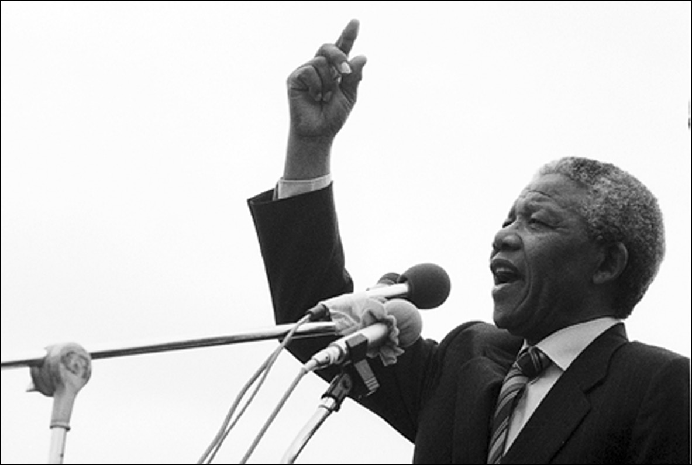
1980’lere gelindiğinde ülkede bir yumuşama havası hakim olmaya başlamıştı. Bunun ardında, sömürgeci beyazların yaptıkları hatayı anlamalarından ziyade, hür dünyanın bu ayıba daha fazla kayıtsız kalmak istememesi ve rejim üzerindeki baskısını arttırması yatıyordu. 1986’da bazı yasaların iptali ile Apartheid biraz daha esnek duruma getirildi. 1990 ve 1991 yılında da Klerk hükümeti, aralarında 1950 Nüfus Kayıt Yasası’nın da bulunduğu pek çok ayrımcı yasayı yürürlükten kaldırdı.
1992 ve 1993 yılında hükümet ile Mandela’nın da üyesi olduğu Afrika Ulusal Kongresi (African National Congress) arasında yapılan görüşmeler sonucunda 27 Nisan 1994’te ülkede ilk kez bütün ırkların eşit oya sahip olacağı eşit ve adil seçimlerin yapılması kararlaştırıldı. 27 Nisan 1994’te yapılan seçimlerde Afrika Ulusal Konseyi büyük bir başarı elde etti ve Nelson Mandela Güney Afrika Cumhuriyeti’nin Cumhurbaşkanı oldu. Aynı tarihte yürürlüğe giren yeni anayasa ve haklar anayasası ile Apartheid rejimi tarihe karışmış oluyordu…
İnsanlık tarihinin kara sayfalarından biri olan Apartheid rejimini ortadan kaldıran süreci hızlandıran unsurlardan biri de, hiç şüphe yok ki, bir avukat olarak hayatını siyahların beyazlarla eşit haklara sahip olması mücadelesine adayan Mandela’nın, 11 Şubat 1990’da 22 yıllık bir hücre hapsinden çıktığı gün yaptığı ve siyah ya da beyaz, ülkedeki herkesi özgürlük ve eşitlik seferberliğine çağırdığı şu destansı konuşmaydı.
* * *
“Yoldaşlar ve Güney Afrikalı Kardeşlerim! Hepinizi barış, demokrasi ve özgürlük adına selamlıyorum.
Burada önünüzde bir peygamber olarak değil, sizin, halkın aciz bir hizmetkârı olarak duruyorum. Bugün burada bulunmamı mümkün kılan, amansız ve destansı fedakârlıklarınızdır. Bundan dolayı ömrümün geri kalan yıllarını avuçlarınıza emanet ediyorum. Özgürlüğüme kavuştuğum bugün, dünyanın her bir köşesinde, hiç ara vermeden, serbest kalmam yönünde kampanyalar düzenleyenlere ve milyonlarca dava arkadaşıma en derin teşekkürlerimi sunuyorum. Son otuz yıldır bana ev sahipliği yapan Cape Town halkına da içten teşekkürlerimi sunuyorum. Düzenlediğiniz tüm kitlesel yürüyüşler ve sergilediğiniz diğer mücadeleler, tüm politik tutuklular için kesintisiz bir güç kaynağı oldu. Afrika Ulusal Kongresi’ni de (ANC) selamlıyorum. Özgürlüğe giden yolda gösterdiği liderlikle tüm beklentilerimizi gerçekleştirdi.
Başkanımız yoldaş Oliver Tambo’yu da ANC’yi en güç koşullar altında yönetmeye devam ettiği için selamlıyorum. ANC’nin tüm birimlerindeki üyelerini selamlıyorum: Asil mücadelemizi sürdürmek uğruna çok çile çektiniz.
Tüm Güney Afrikalıların özgürlüğü uğruna en yüksek bedeli ödeyen Umkhonto We Sizwe (ANC’nin askerî kanadı) savaşçılarını da selamlıyorum. Güney Afrika Komünist Partisi’ni de, demokrasi mücadelesine verdiği eşsiz destekten dolayı selamlıyorum: 40 yıldır süren amansız sorgulara rağmen pes etmediniz. Bram Fisher ve Moses Mabhida gibi değerli komünistlerin hatırası, gelecek nesiller açısından da yol gösterici olacak.
En önde gelen vatanseverlerden Genel Sekreter Joe Slovo’yu da selamlıyorum. Parti ile aramızdaki dayanışmanın eskiden olduğu kadar güçlü kalması hepimizi memnun etti. Ulusal Demokratik Cephe (The United Democratic Front), Millî Eğitim Kriz Komitesi (The National Education Crisis Committee), Güney Afrika Gençlik Kongresi (The South African Youth Congress), Transvaal ve Natal Yerlileri Kongreleri (The Transvaal and Natal Indian Congresses), COSATU ve kitlesel demokrasi hareketinin diğer önde gelen destekçilerini de selamlıyorum. Gururla fark ettik ki, özgürlük mücadelemizin en karanlık günlerinde bile beyaz Güney Afrikalıların sağduyusu olarak baskılara boyun eğmediniz. Özgürlük bayrağını yukarılara taşıdınız. Son birkaç yıl içerisinde şahit olduğumuz geniş ölçekli seferberlik, mücadelemizin son safhasının açılışına giden temel unsurlardan biri oldu.
Ülkemin emekçi sınıfını da selamlıyorum. Organize gücünüz, hareketimizin gururu oldu. Sömürü ve baskıyı sona erdirme mücadelesinde en güvenilir güç olarak kaldınız. Halkımızın eylemleri susturulduğunda adalet kampanyasını yoluna devam ettiren dinî topluluklara da teşekkür ediyorum. Ülkemizin geleneksel liderlerini de selamlıyorum: Birçoğunuz, büyük kahramanların ayak izlerini takip ediyorsunuz. Gençliğimizin sonsuz kahramanlığını da selamlıyorum: Siz genç aslanlar, mücadelemize baştan sonra enerji sağladınız.
Ulusumuzun annelerine, eşlerine ve kız kardeşlerine de selamlarımı sunuyorum: Mücadelemizin en sarsılmaz boyutunu oluşturdunuz. Apartheid, herkese verdiğinden çok, size acı verdi.
Bu vesileyle, dünya halklarına, Apartheid karşıtı mücadeleye verdikleri eşsiz destekten dolayı teşekkür ediyoruz. Desteğiniz olmasa mücadelemiz bu ileri safhaya ulaşamazdı. Ön cephede rol alan ülkelerin fedakârlıkları Güney Afrikalılar tarafından sonsuza kadar hatırlanacak. Hapiste geçirdiğim uzun ve karanlık yıllar boyunca sevgili eşim ve ailemin verdiği eşsiz desteğe duyduğum minnettarlığı dile getirmediğim takdirde, kutlamalarım eksik kalacaktır. Çektiğiniz acı ve gösterdiğiniz fedakârlığın, benimkilerden daha çok olduğuna hiç şüphem yok.
Daha fazla devam etmeden önce, bu aşamada sadece birkaç temel tespitte bulunma niyetinde olduğumu söylemek isterim. Yoldaşlarımla danışma imkânına sahip olduktan sonra daha kapsayıcı bir açıklama yapacağım.
Bugün, beyaz ya da siyah, Güney Afrikalıların çoğunluğu, Apartheid’ın bir geleceği olmadığının farkında. Bu rejim, barış ve güvenliği tesis etmek için göstereceğimiz topyekün ve kararlı eylemle sona erdirilmelidir. Demokrasinin tesis edilmesi, sadece kitlesel itaatsizlik gösterileri ve teşkilatlarımızın ve halkımızın düzenleyeceği diğer eylemlerle mümkün olacaktır.
Apartheid’in alt kıtamızda yarattığı tahribat hesaplanamayacak ölçüde. Halkımın milyonlarcasının aile yapısı mahvoldu. Milyonlarcası işsiz ve evsiz. Ekonomimiz harap durumda, halkımız politik çekişmelerin ortasında kalmış durumda.
1960’ta ANC’nin askerî kanadını kurarak silahlı mücadeleye geçişimiz, tamamen Apartheid rejiminin uyguladığı şiddete karşı savunma refleksiydi. Silahlı mücadeleyi gerekli kılan şartlar bugün de mevcut. Devam etmekten başka seçeneğimiz yok. Müzakerelerle ulaşılacak bir çözüme yönelik atmosferin yakın zamanda yaratılacağına dair bir ümit besliyoruz, o zaman silahlı mücadeleye de gerek kalmayabilir.
Afrika Ulusal Kongresi’nin sadık ve disiplinli bir üyesiyim. Bundan dolayı Kongre’nin tüm hedeflerini, stratejilerini ve taktiklerini tam anlamıyla onaylıyorum. Ülkemizin halkını birleştirmek, her zaman olduğu gibi bugün de en önemli görevimiz. Hiçbir lider böylesi devasa bir görevi tek başına sırtlanamaz. Liderler olarak görevimiz, görüşlerimizle teşkilatımızı yönlendirmek ve demokratik yapılanmaların kendi yollarını çizmelerine imkân tanımaktır. Demokrasi uygulamasına gelince; bir noktayı işaret etmeyi bir borç biliyorum: Bir hareketin lideri, ulusal bir kongrede demokratik bir şekilde seçilmiş kişidir. Bu, hiçbir istisnası olmaksızın uygulanması gereken bir prensiptir.
Bugün sizlere, hükümetle yaptığımız görüşmelerin, ülkedeki politik durumun normalleştirilmesini hedeflediğini bildirmek isterim. Mücadelenin temel talepleri üzerinde tartışmaya henüz başlamadık. Şunu da vurgulamak isterim ki, ANC ve hükümet arasında bir görüşme yapılmasında ısrarcı olmanın haricinde, hiçbir zaman ülkemizin geleceğiyle ilgili olarak müzakerede bulunmadım. Bay Klerk, durumun normalleştirilmesi açısından, bugüne kadar en milliyetçi başkandan daha ileri adımlar attı. Yine de, halkımızın temel talepleriyle ilgili müzakereler başlamadan önce, Harare Deklarasyonu’nda da belirtildiği üzere, atılması gereken daha ileri adımlar var. Bu arada diğer şeylerle birlikte, olağanüstü halin hemen kaldırılması ve tüm siyasî mahkumların serbest bırakılması yönündeki çağrımızı da tekrarlıyorum. Sadece, serbest politik faaliyetlere imkân tanıyan böylesi normalleştirilmiş bir durum, bir yetki alabilmemiz için halkımıza danışmamıza imkân tanıyabilir. Bu tür müzakerelerin içeriği ve müzakereleri sürdürecek kişi konusunda halka danışılması gerekiyor. Halkımızın sırtında ya da başlarının üzerinde müzakere sürdürülemez.
İnanıyoruz ki, ülkemizin geleceği yalnızca ırkî temele dayanmayan ve demokratik şekilde seçilmiş bir organ tarafından belirlenebilir.
Apartheid’ı sona erdirme müzakereleri, halkımızın demokratik, ırkçı olmayan ve üniter bir Güney Afrika’ya yönelik taleplerini dile getirmek zorunda.
Apartheid’ın yetersizliklerinin ortaya konulması ve toplumumuzun tamamen demokratikleşmesini sağlama almak için, beyazların siyasî irade üzerindeki tekeline bir son verilmeli, politik ve ekonomik sistemimiz radikal bir şekilde yeniden yapılandırılmalıdır. Bu arada Bay Klerk’in, bu görevi göz ardı edecek bir politik figürü bekleyen tehlikeleri çok iyi fark etmiş bir entegrasyon adamı olduğunu da eklemeliyim. Ama bir oluşum olarak, politikamızı ve stratejimizi, karşı karşıya olduğumuz gerçek üzerine bina ediyoruz. Bu yakıcı gerçek ise, halen bu milliyetçi hükümetin politikaları altında katlanmak durumunda kaldığımız acılardan başka bir şey değil.
Mücadelemiz bir dönüm noktasına ulaştı: Halkımızı ‘bu ana’ sahip çıkmaya çağırıyoruz ki, demokrasiye giden süreç çabuk ve kesintisiz olsun.
Özgürlüğümüz için çok uzun süre bekledik. Daha fazla bekleyemeyiz. Şimdi tüm cephelerdeki mücadeleyi şiddetlendirme zamanı. Gayretlerimizi gevşetmemiz, gelecek nesillerin affedemeyeceği bir hata olacaktır.
Ufukta belirmeye başlayan demokrasi görüntüsü, gayretlerimizi ikiye katlamamız için bizi cesaretlendirmeli. Sadece disiplinli bir kitlesel hareketle zaferimizi garantileyebiliriz.
Yeni Güney Afrika’yı şekillendirme çabalarımızda, beyaz yoldaşlarımızı da bize katılmaya çağırıyoruz. Özgürlük hareketi sizler için de politik bir sığınak olacak.
Uluslararası topluluğa da, Apartheid rejimini dışlama gayretlerine devam etmeleri çağrısında bulunuyoruz. Şu anda yaptırımları kaldırmaları, Apartheid rejiminin bir bütün olarak ortadan kaldırılması sürecini tehlikeye sokacaktır. Özgürlük yürüyüşümüzden geri dönüş yok. Korkunun yolumuza çıkmasına izin vermemeliyiz.
Irkçı olmayan, birleşik ve demokratik bir Güney Afrika’da yapılacak eşit bir oylama için verilecek evrensel mücadele, huzura ve ırklararası barışa giden tek yoldur.
Sonuç olarak, 1964’te, yargılanmam esnasında sarf ettiğim sözlerime geri dönmek istiyorum. Sözlerim o gün olduğu kadar, bugün de geçerli:
Beyazların hakimiyetine karşı mücadele ettim, siyahların hakimiyetine karşı mücadele ettim. Tüm insanların uyum ve fırsat eşitliği içinde birlikte yaşadıkları demokratik ve özgür toplum hülyasını savundum. Bu, uğrunda yaşamayı ve gerçekleştirmeyi ümit ettiğim bir ideal. Ama gerekirse, aynı zamanda uğrunda öleceğim bir ideal de.”
11 Şubat 1990
George BUSH
“Dünya daha fazla bekleyemezdi.”
2 Ağustos 1990’da Irak tankları ve askerleri sınırı geçerek, küçük ama petrol zengini komşu ülke Kuveyt’i işgal etti. Ve hemen ardından diğer bir petrol zengini ülke Suudi Arabistan sınırına yığıldı. (I. Körfez Savaşı ile ilgili belgelerde Suudi sınırına yapılan Irak yığınağına çokça değinilmekle birlikte, bunun, müdahaleyi hızlandırmak isteyen Amerikan istihbarat servislerinin bir asparagası olduğunu iddia eden çevreler de mevcut!)
Takip eden birkaç gün içinde Amerikan birlikleri Suudi Arabistan’a gönderildi ve Suudi petrol sahalarını olası bir Irak saldırısından korumak amacıyla Çöl Kalkanı Operasyonu’na (Operation Desert Shield) başlandı. 6 Ağustos’ta Birleşmiş Milletler Güvenlik Konseyi, Irak’a karşı ekonomik ambargo kararı aldı ve ekonomik yaptırımlar uygulamaya başladı. Buna mukabil, Basra Körfezi’ndeki deniz kuvvetlerine, ambargoyu ihlale yönelik girişimlerin önlenmesi için güç kullanma yetkisi verildi.
Eylül ayında Başkan Bush, Kongre’de yaptığı konuşmada, Irak diktatörü Saddam Hüseyin’in Ortadoğu’daki hayatî kaynaklara el koymasına izin veremeyeceklerini söyledi ve hemen ardından müttefik kuvvetlerin sayısını 430 bine çıkardı. 29 Kasım’da BM Güvenlik Konseyi, üye ülkelere, Irak’ın 15 Ocak 1991’e kadar geri çekilmemesi durumunda, Irak birliklerini Kuveyt’ten çıkarmak için gereken tüm imkânları kullanmaları yönünde yetki verdi.
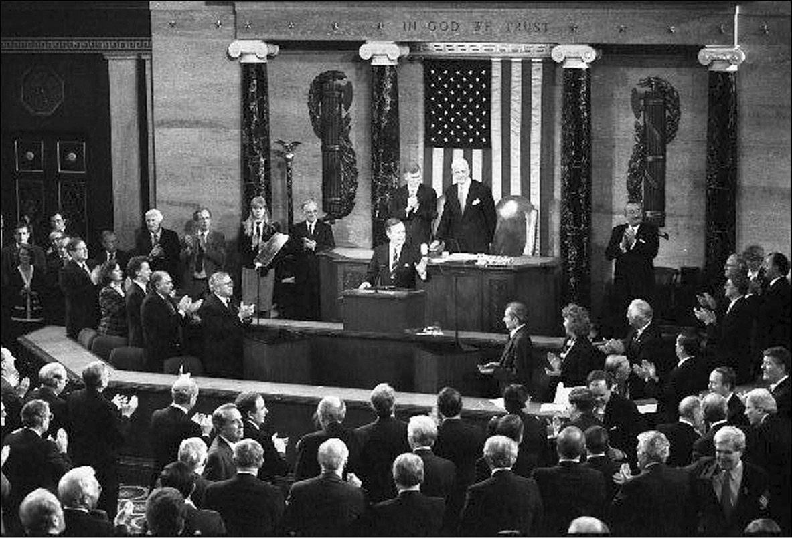
Kaynak: George Bush Başbakanlık Kütüphanesi.
Bunun ardından Başkan Bush, Saddam Hüseyin üzerinde baskı oluşturmak için daha fazla birliğe Körfez’e hareket etmeleri emrini verdi. 9 Ocak 1991’de Amerikan Dışişleri Bakanı James Baker, Cenevre’de Irak Dışişleri Başkanı Tarık Aziz ile son bir kez bir araya geldi, lakin birkaç saat süren görüşmeden bir sonuç çıkmadı. Üç gün sonra Temsilciler Meclisi 250’ye 183 ve Senato ise 52’ye 47 oyluk bir çoğunlukla Başkan Bush’a güç kullanma yetkisi verdi. 15 Ocak tarihinde Irak’a verilen mühlet sona ererken, Kuveyt ve civarındaki 545 bin Irak askeri geri çekilmek için harekete geçmemişti. Bu esnada Körfez’de 539 bin Amerikan askerinin yanı sıra iki düzineye yakın müttefik ülkeden gelen 270 bin kadar asker, II. Dünya Savaşı’ndan bu yana görülen en büyük kara ve hava gücü yığınağına imza atıyordu.
17 Ocak’ta, Bağdat saati ile 02.45’te, Amerikan ve müttefik ülke savaş uçaklarının, Bağdat’taki hava savunma ve iletişim ünitelerine, kimyasal silah depolarına, tanklara ve toplara karşı giriştiği yoğun bombardımanla birlikte Çöl Kalkanı Operasyonu (Desert Shield) yerini Çöl Fırtınası (Desert Storm) Operasyonu’na bırakıyordu. Dünya üzerindeki milyarlar, Bağdat’taki bir otelin çatısına yerleşmiş CNN muhabirlerinin aktarımıyla ilk kez bir savaşı canlı olarak izliyordu. Saldırıların başlamasından kısa bir süre sonra, Başkan Bush, o tarihî TV konuşmasını yapmaya koyulmuştu bile.
* * *
“Tam iki saat önce, müttefik kuvvetler hava gücü, Irak ve Kuveyt’teki askerî hedeflere yönelik hava saldırılarına başladı. Bu saldırılar, konuştuğum esnada devam etmekte. Kara kuvvetleri çatışmalara henüz dahil olmadı.
Bu ihtilaf, Irak diktatörünün 2 Ağustos’ta küçük ve korumasız komşusunu işgal etmesiyle başladı. Arap Ligi’nin ve BM’nin üyesi olan Kuveyt ezildi, halkı zulüm gördü. Beş ay önce Saddam Hüseyin, Kuveyt’e karşı bu zalim savaşı başlattı. Bu gece ise savaşa yeni taraflar dahil oldu. Bu askerî harekât, BM kararları ve Amerikan Kongresi’nin rızası ile BM’nin, Amerika’nın ve diğer birçok ülkenin aylar süren lakin bir sonuç getirmeyen diplomatik girişimlerinin ardından başladı. Arap liderler, ‘Arap çözümü’ olarak bilinen ve Saddam Hüseyin’in Kuveyt’i terk etmedeki isteksizliğini bir kez daha ortaya koyan girişimlerde bulundular. Barış ve adaleti tesis etmek isteyen birçokları, Bağdat’a sayısız sefer düzenledi. Dışişleri Bakanımız James Baker, Cenevre’de tarihî bir toplantı yaptı, ama sonuçta yine reddedildi. Bu hafta sonu BM Genel Sekreteri, kalbindeki tüm iyi niyeti ile son bir girişim olarak ikinci kez Ortadoğu seferine çıktı. Fakat Saddam’ı Kuveyt’ten çıkarma adına bir gelişme ortaya koyamadan Bağdat’tan geri döndü. Ve şimdi barışçı bir çözüme ulaşabilmek adına akla uygun tüm girişimleri tüketmiş ve Körfez’de güç bulunduran 28 ülkenin, Saddam’ı güç kullanarak Kuveyt’ten çıkarmaktan başka bir seçeneği kalmamış bulunuyor. Başarısız olmayacağız.
Size seslendiğim esnada, Irak’taki askerî hedeflere hava saldırıları yapılıyor. Saddam Hüseyin’in nükleer bomba potansiyelini ortadan kaldırmaya kararlıyız. Ayrıca kimyasal silah kapasitesini de yok edeceğiz. Saddam’ın top ve tanklarının çoğu imha edilecek. Operasyonlarımız, Saddam’ın büyük çaplı askerî cephaneliğini hedef almak suretiyle, koalisyon güçlerinin yaşamlarını en iyi şekilde koruyacak şekilde tasarlanmış durumda. General Schwarzkopf’dan gelen ilk raporlara göre, operasyonlarımız planlandığı şekilde ilerlemekte.
Hedeflerimiz net: Saddam Hüseyin’e bağlı güçler Kuveyt’i terk edecek. Kuveyt’in yasal hükümeti tekrar görev başı yapacak ve Kuveyt bir kez daha özgür olacak. Irak, sonuç olarak BM’nin ilgili tüm kararlarına rıza gösterecek ve ardından barışın tesis edilmesi ile, bizim ümit ettiğimiz şekilde, Körfez’deki güvenlik ve istikrara katkıda bulunarak, uluslar ailesinin barışçı ve işbirliğine yatkın bir üyesi olarak yaşamaya devam edecek.
Bazıları sorabilir: Neden şimdi harekete geçiliyor? Neden beklenmiyor? Cevap gayet net: Dünya daha fazla bekleyemezdi! Yaptırımlar, kısmen etkili olsa da, hedeflerine ulaşabileceğine dair bir emare göstermedi. Beş aydan bu yana yaptırımlar yürürlükte. Biz ve müttefiklerimiz, yaptırımların tek başına Saddam’ı Kuveyt’ten çıkartamayacağına kanaat getirdik.
Dünya beklerken, Saddam Hüseyin, kendi milletine bir tehdit teşkil etmeyen küçük bir ulusu sistematik olarak yağmaladı, tecavüz etti ve soydu. Kuveyt halkını dile getirilmesi zor işkencelere maruz bıraktı. İşkenceye uğrayan ve öldürülenler arasında masum çocuklar da vardı.
Dünya beklerken, Saddam halen sahip olduğu kimyasal silah cephaneliğine, daha ölümcül bir kitle silahını, nükleer bir bombayı eklemenin yollarını aradı. Ve yine dünya beklerken, dünya barışı ve geri çekilmeyi konuşurken, Saddam Hüseyin, siper kazdı ve ordusunun büyük bir kısmını Kuveyt’e soktu.
Dünya beklerken, Saddam ağırdan alırken, Üçüncü Dünya’nın kırılgan ekonomileri, Doğu Avrupa’da yeni yeni ortaya çıkan demokrasiler ve bizimki de dahil olmak üzere dünya ülkelerinin ekonomileri bundan büyük bir zarar görüyordu.
Birleşik Devletler, Birleşmiş Milletler ile birlikte, bu krizi barışçı bir şekilde sona erdirmek için elinin altında bulunan tüm yöntemleri sonuna kadar tüketti. Buna karşın Saddam Hüseyin, BM’yi oyalayarak, tehdit ederek ve meydan okuyarak, kendisine karşı oluşturulan güçleri zayıflatabileceğini düşündü.
Dünya beklerken, Saddam Hüseyin, barışa yönelik her türlü teklifi bariz bir şekilde küçümsedi. Dünya barış için dua ederken, Saddam savaşa hazırlandı. Birleşik Devletler Kongresi, o tarihî oturumunda kararlı bir şekilde eylem kararı aldığında, Saddam’ın karşı koyamayacağını idrak edeceğini ve BM kararlarına uygun bir şekilde kuvvetlerini Kuveyt’ten çıkartacağını ümit etmiştim. Bunu yapmadı. Üstelik, zamanın kendisinden yana olduğundan emin şekilde uzlaşmaz tavrını sürdürdü.
Saddam BM’nin talimatlarına uyması konusunda defalarca uyarıldı: ‘Kuveyt’ten çık ya da çıkartılacaksın.’ Ama küstah bir şekilde tüm uyarıları reddetti. Bunun yerine bu meseleyi, Irak ile Amerika arasındaki bir ihtilafa dönüştürmeye çalıştı. Evet, başaramadı. Bu gece, beş kıtadan, Avrupa, Asya, Afrika ve Arap Ligi’nden 28 ülkenin Körfez bölgesinde Saddam Hüseyin’e karşı omuz omuza karşı koyan güçleri var. Bu ülkeler, güç kullanmaktan sakınılacağını ümit etmişti. Üzücüdür ki, şimdi onu sadece gücün oradan çıkartacağına inanıyoruz.
Güçlerimizin savaşa girmesini emretmeden önce, ordumuzun komutanlarına, Amerikan ve müttefik kuvvet askerlerine en yüksek dereceden koruma sağlayarak, mümkün olduğu kadar çabuk zafer kazanmaları için gereken her adımı atmaları talimatını verdim. Bundan önce Amerikan halkına bunun başka bir Vietnam olmayacağını söylemiştim. Bu akşam burada bunu bir kez daha tekrarlıyorum. Güçlerimiz tüm dünyadan alabilecekleri en iyi desteği alacak ve bir elleri arkada bağlı olarak savaşmaları istenmeyecek. Umuyorum ki, bu savaş fazla uzun sürmeyecek ve kayıplarımız mümkün olan en düşük seviyede tutulacak.
Bu tarihî bir an. Geçtiğimiz yıl içinde uzun süreli çatışma ve Soğuk Savaş dönemini bitirme yolunda büyük bir gayret gösterdik. Ve şimdi önümüzde bizler ve gelecek kuşaklar için yeni bir dünya düzeni, milletlerin idaresini orman kanunlarının değil hukuk nizamının belirlediği bir dünyanın yaratılması imkânı bulunuyor.
Başarılı olduğumuzda -ki olacağız- bu yeni dünya düzeninde güvenilir bir BM’nin, barış güçlerini, BM kurucularının vizyon ve vaatlerini hayata geçirmek için kullanabilmesi yönünde gerçek bir şansa sahibiz. Irak halkı ile bir sorunumuz yok. Kaldı ki, bu çatışmanın ortasında kalmış sivillerin güvenliği için dua ediyorum. Hedefimiz, Irak’ın işgal edilmesi değil, Kuveyt’in özgürleştirilmesidir. Irak halkının bir şekilde, hatta şimdi bile, diktatörlerini silahlarını bırakmaya, Kuveyt’ten çıkmaya ve Irak’ın barışsever uluslar ailesine tekrar katılmasına izin vermesine ikna edebileceğini ümit ediyorum.
Thomas Paine yıllar önce ‘Bunlar, insanın varoluşunu sınayan zamanlardır’ demişti. Bu çok bilinen deyiş, günümüzde de çok doğru. Ama çok uluslu güçlere ait uçaklar Irak’a saldırırken bile, savaşı değil, barışı düşünmeyi tercih ediyorum. Sadece galip geleceğimizden değil, aynı zamanda bu korkunç savaştan, hiçbir ülkenin birleşmiş bir dünyaya karşı koyamayacağı, hiçbir ülkenin komşusuna barbarca saldırmasına izin verilmeyeceği inancının çıkacağından da eminim.
Hiçbir Başkan oğullarımızın ve kızlarımızın savaşa gönderilmesine kolayca karar veremez. Onlar ulusun gözbebekleri. Bizimki, gönüllü, olağanüstü eğitilmiş ve yüksek motivasyona sahip bir ordu. Birliklerimiz neden orada olduklarını biliyorlar. Onlar bunu, herhangi bir Başkan ya da Başbakandan daha iyi becerebildikleri için ne dediklerine kulak verin. Deniz Piyadelerinden Hollywood Huddleston’ı dinleyin. ‘Hadi bu insanları özgürleştirelim, böylelikle biz de eve gider ve tekrar özgür olabiliriz’ diyor. Haklı!
Saddam’ın katilleri tarafından Kuveyt’in masum halkına karşı işlenen cinayetler ve yapılan işkenceler, insanlığa yapılan bir saygısızlık ve hepimizin özgürlüğüne yönelik bir meydan okumadan başka bir şey değil. Oradaki mükemmel subaylarımızdan birini, Deniz Korgeneral Walter Boomer’ı dinleyin. ‘Uğrunda savaşmaya değer şeyler vardır. Zalimliğin ve kanunsuzluğun karşı konulmadan devam ettiği bir dünya, yaşamak isteyeceğimiz bir dünya değildir’ diyor. 82. Hava İndirme Birliği’nden Kıdemli Yüzbaşı J.P. Kendall’ı dinleyin: ‘Bir galon gazın fiyatından daha fazlası için buradayız. Burada yaptığımız, dünyanın 100 yıllık geleceğini belirleyecek. Bu adamla (Saddam kastediliyor, Y. N.) beş yıl sonra uğraşmaktansa, en iyisi şimdi icabına bakmamız.’ Ve son olarak ayağa kalkıp Teğmen Jackie Jones’a kulak verelim. ‘Eğer bunu yapmasına izin verirsek, bir sonraki aşamada ne olacağını kim bilebilir?’ diyor.
Hollywood’a, Walter’a, J.P.’ye ve Jackie’ye ve yapılması gerekeni yapmak için onlarla kol kola girmiş bulunan tüm cesur yoldaşlarına dua ediyorum. Bu gece, Amerika ve dünya, onlara ve ailelerine minnettar. Bu gece beni dinleyen ve izleyenlere şunu söylememe izin verin: Gönderdiğimiz birlikler işlerini bitirdiklerinde, onları mümkün olduğu kadar eve geri getirmeye kararlıyım.
Bu gece, ordularımız savaşırken, onlara ve ailelerine dua ediyoruz. Tanrı, her birini, Körfez’de bizim yanımızda çarpışan koalisyon güçlerini ve ulusumuzu, Amerika Birleşik Devletleri’ni korumaya devam etsin.”
16 Ocak 1991
1 Pretor: Roma’da rütbece konsüllerden sonra gelen, görev süresi bir yıl olan, ordu ve adalet işlerine bakan yüksek görevli
2 Profan: Dindışı, seküler.
3 İkbal, bugünkü Pakistan’a işaret ediyor. (YN)
4 Hindistan Müslümanlarının lideri Muhammed Ali Cinnah.
5 “Halen Berlin’de bir bavulum var!”
6 “Sadece tek bir Berlin vardır.”
7 Almanca’da ekonomik mucize anlamına gelen bir sözcük
8 Berlin kalbi, Berlin mizahı ve evet, Berlin Schnauze’si